| 僕はやっぱり気づかない (ＨＪ文庫) | |
| 望公太 | |
| (2011) | |
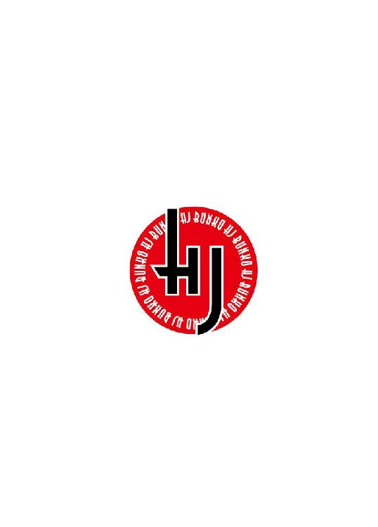
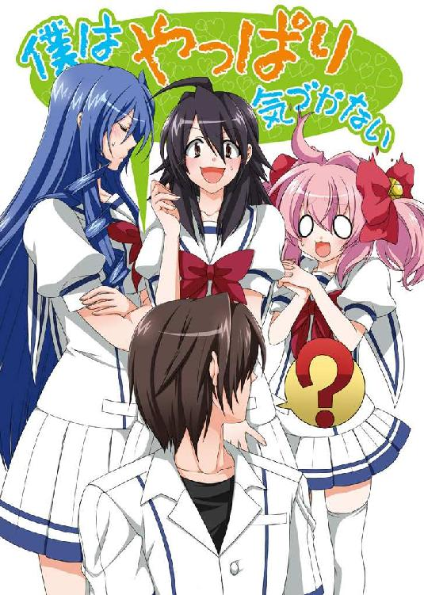
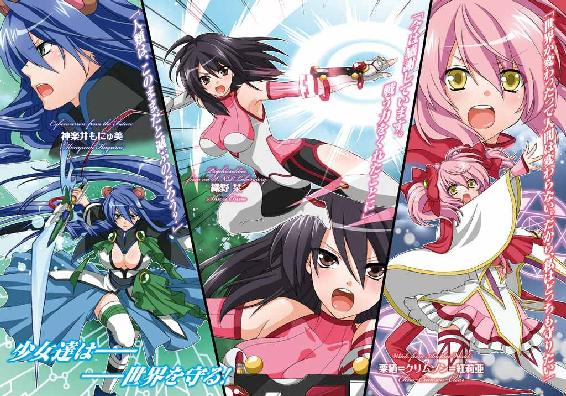
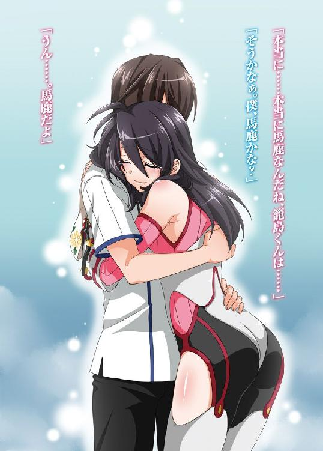
ＨＪ文庫
僕はやっぱり気づかない
望 公太
口絵・本文イラスト タカツキイチ
プロローグ
世界は退屈だった。
もう少しやんわりと言うと平凡であり、もう少しよく言えば平和だった。
恐ろしい事件もとんでもない奇跡も起きずに、ただただ廻っている。
でも、僕はそれをつまらないと思う反面、それでいいとも認めてもしまっている。
子供の頃には、正義の味方になって世界を救いたい、なんて夢見ていたが、十七歳になった今では、そんなことは微塵も思っていない。
そんなことをいくら望んでも世界は変わらない。平和なままだ。
どんなに願い望もうと、アニメや漫画の世界のように、面白おかしい痛快な事件なんて起きやしない。
考えるべきことはいくらだってある。次のテストのこととか、クラスの女子のこととか、いい加減コロコロコミックを毎月買うのは止めようか、とか。
ひどく粗末で些細なことだけど、それを繰り返して行くのが人生。
人生は劇的じゃない。
高杉晋作さんは「面白き、事も無き世を、面白く」と言っていたけど、僕に言わせてみれば「面白き、事も無き世も、面白い」だ。
世界は、今ぐらいに退屈でちょうどいい。
これが僕の、籠島諦という人間の、十七年生きた結果の解答だった。
世界を揺るがすような事件なんて、なにも起きなくていい。
まあ、起きるはずないんだけどね。
だって。
異世界からやってきた魔法使いも、
はるか未来から訪れた電脳戦士も、
研究機関の指示で戦う超能力者も、
この世界には存在しないのだから。
第一章 公園で居眠り
「いくら僕らがクラス委員だからって、最近仕事が多すぎると思わない？ 織野さん」
全ての授業が終わり無人になった教室、僕はプリントの端をそろえながら、向かいに座る織野さんに溜息交じりで言った。
「愚痴っても仕事は減らないわよ、籠島くん。手を動かしなさい手を」
「真面目なんだねえ、織野さんは」
「真面目はいいことなんです。悪口みたいに言わないの」
「失礼しました」
少し拗ねた感じに言う織野さんがかわいくて、つい口元がほころんだ。
織野栞。
肩まである綺麗な黒髪に鼻筋の通った整った顔、しゅっと細い首。
知的な雰囲気が漂う、このクラスの委員長だ。
ジャンケンの弱さによって副委員長になった僕と違い、自らの立候補と莫大な支持によって委員長となった、お姉さん気質な女子である。
「あーあ。早く帰りたいなあ」
「なにか用事でもあるの？」
「うん。昨日買ったゲームの続きをやりたいんだよね」
「そういうのは用事って言わない」
「立派な用事だって。僕が頑張らなきゃ、世界が滅びちゃうんだよ？」
「ゲームの話でしょ」
そうなんだよねえ。
ゲームの世界は、滅んだり救われたり蘇ったりもうひとつあったりって、やたらと忙しそうだけど、現実の世界はずいぶんと暇そうだ。
ちょっと職務怠慢だと思う。いや、真面目に働いてるからこその平和なのかな？
うーん。保留で。
「なんていうか、退屈だよね」
「......籠島くんて、退屈、ってよく言うわよね」織野さんは嘆息し、頬杖を突く。「そういうネガティブなことばっかり言ってると、つまらない人間になっちゃうわよ」
「そうネガティブな感じでもないんだけどね」
じっと睨んでくる織野さんの視線を受け流し、僕は窓の外を見た。
夕日に照らされた校庭で、運動部の生徒達があくせくと動いていた。
「僕は退屈が嫌いじゃないんだ。人間、ちょっと時間を持て余してる方がいいんだよ。つまり、僕にとって退屈は凌ぐものじゃなくて、楽しむものだということ」
なにも起きないつまらない日々が心地いい。
異常も非日常も、僕はいらない。
「のんびりとした日常が、僕は好きだね」
「日常、か......」
織野さんの表情が、わずかに翳りを帯びる。
「......そうよね、退屈な日常が、平和が一番よね」
「そゆこと。こうやって──」
「うん？」
「あ、いや。なんでもない」
こぼれ落ちそうだった言葉を慌てて口内で留めた。危ない危ない。「こうやって、織野さんとのんびり話ができる放課後も悪くないよ」なんて言えないよ。
雑談混じりに作業を続けていく。僕の作成したプリントの束と織野さんのそれでは、性格の違いのせいか、出来にずいぶんと差があって悲しかった。クリップで止めるだけの仕事のはずなのに。
「超能力でもあったら、こんなのパパっと終わらせられるのにな」
単純作業に嫌気が差した僕が言うと、
「超能力......」
小さく呟いて、織野さんは眉をひそめた。
「超能力は、そんな便利なものじゃないわ」
どうやら、超能力というワードに喰いついたらしい。
「誰にでも使いこなせるわけじゃなくて、才能と努力の両方が必要なの。努力したからといって、能力が伸びるとは限らないけど、努力しなければ絶対に強くならない。超能力者には、特化型と万能型の二種類がいて......、まあ、どちらが優れているかは、一概には言えないんだけど......」
いきなり饒舌になって語る織野さんに、僕はやや面食らう。
「でも......、結局超能力は、才能というよりは障害なのよ。通常じゃない状態の脳が引き起こすバグみたいなもの。だから......」
「お、織野さん......？」
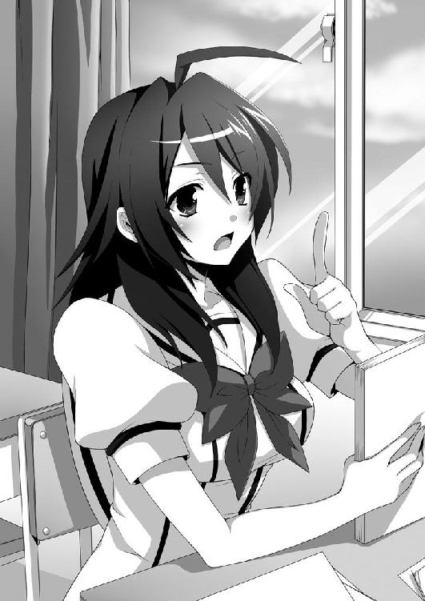
慌てて名前を呼ぶと、はっとして顔を上げる。
「あ、えーっと......。あははー。うん。全部ネットで見た記事なんだけどね。しかも、全然信憑性のないサイトからだから......あははー」
思いっきり僕から目をそらし、嘘っぽい笑い声を出していた。
「よかった。なにかと思ったよ」
ずいぶんと感情がこもった声だったから、噂話をしてるようには感じなかったけど、まあ本人がそう言うならそうなんだろう。
「でも、織野さんって、そういうオカルトが好きなんだね。少し意外だな」
「え。ち、違うわよっ。たまたま。昨日ちょっと見ただけ。ほ、ほらっ。早く仕事を片付けないと先生に怒られちゃうわよ」
露骨に話題を変えられた気がしたが、織野さんのことだから早く仕事を終えようとしているだけだろう。うん。実にいい子だ。
そのまま十分くらい作業を続け、頼まれていた仕事が八割ぐらい終わったとき。
ピピピピピっ、と電子音が響いた。
僕の携帯じゃない。ということは、消去法で織野さんのということになる。マナーモードにし忘れたのかな、と思いながら目をやると──
織野さんはぎょっとした表情で、携帯の画面を睨みつけていた。額に浮いた汗から、焦燥感が感じ取れる。
「どうし──」
「ごめん、籠島くん！」
織野さんは勢いよく立ちあがり、自分の鞄を掴んだ。
「急用ができたから。私、今から行かないと......。残りの仕事、お願いしてもいい？」
「いや......。もうほとんど終わってるから大丈夫だけど」
「ありがとう。本当にごめんね」
言うや否や、織野さんは脱兎のごとく教室から出て行った。
「......まあいいか」
疑問に思いつつも、僕は作業を再開した。
織野さんはときどき、こういう風に突然いなくなる。たとえ授業中だろうと、今みたいな調子でどこかに飛んでいく。
気にはなるが、人にはそれぞれの都合があると思うので、詮索するつもりはない。
織野さんが「お婆ちゃんが危篤で......」「急にお腹が......」とか言っているから、きっとその通りなんだろう。
怪物が現れて出勤するヒーローのようだけど、もちろんそんなことはあるはずがない。
超能力には様々な種類があるようだ。
予知。透視。テレパシー。サイコメトリー。念動力。瞬間移動。発火能力などなど。
携帯で少し調べただけで、これだけの単語が出てきた。どれもこれも、漫画かなにかで聞いたことがあるものばかりだった。
一般的に超能力は、通常の感覚器官による知覚を超えた知覚（ＥＳＰ）と、物理的に物を動かしたりする念動力（ＰＫ）に大別されるらしい。しかし、ＥＳＰの方もＰＫの力を使っているような側面があるため、その二つをまとめてＰＳＩと呼ぶとかなんとか。
「ふーん。けっこう面白いな」
書類を職員室に届けた後、帰路についた僕は携帯画面のスクロールを続けた。
織野さんとの会話を思い出して調べてみたのだが、意外と奥が深い。超能力というものは、僕が思っていたよりもずっとリアリティのある存在らしい。きちんとした心理学の研究分野であり、大学教授の中でも『ＥＳＰならば、存在する可能性がある』という人が多くいるそうだ。
魔法や時間跳躍よりは、よっぽど現実的な話に思えた。
ま、結局はエンターテインメントなんだろうけどね。
幽霊や朝の占いと一緒だ。現実に存在するのか？ 絶対に当たるのか？ なんて無粋な考えはせずに、好きな人が楽しんだらいい。
そう結論づけて携帯電話を閉じ、歩を進める。
夕暮れの住宅街は人気が少なかった。カラスの鳴き声も聞こえない。『そよ風公園』という名の寂れた公園に差しかかる。ここを通り過ぎれば、僕の家はすぐそこだ。
公園で遊ぶ子供の姿はなく、遊具たちが寂しそうに風と遊んでいた。最近の子供はやっぱり、みんな部屋に閉じこもってゲームでもやっているのだろうか。そう考えると、なにやら悲しくなった。
この公園は、幼少時代の思い出の場所である。
一人で必殺技の練習とか忍者の修行とか、いろいろとイタいことをやっていた。
わずかなノスタルジーを感じながら、僕は特に目的もなく、ふらふらと公園の中に入った。そして──
右腕が消失した。
「......は？」
まぬけに口を開くことしかできなかった。
左手で右腕を掴もうとして──空振り。右肩から先が存在していない。数瞬遅れて、おびただしいほどの血液が吹き出した。ぼたぼたと赤黒い液体が地面に落ちる。反射的に左手で抑えるが、何の効果もない。
ようやく、痛みが来た。
「────っ！」
声にならない悲鳴が、喉から飛び出した。
なんだよ、これ？
思考がフリーズしたまま、膝ががくがくと震え、僕はその場に倒れ込んだ。激痛のせいで、今にも意識が吹っ飛びそうだ。
「......ああ？」
視界の端に、人の腕が見えた。僕の右腕だ。
それを、大木のような足が踏みつける。鋭利な爪の生えた、毛深い獣の足。視線を上げて行くと、今度は巨大な牙が目に入った。
トラックみたいに馬鹿でかい狼だった。ぐるる、と低い唸り声を上げている。
毛並みの色はドス黒い赤。額からは剣のような角がそびえ立つ。その角から、だらだらと血が垂れている。たぶん僕の血だ。あの角が、僕の右腕を切断したらしい。
「──研がれ研がれて我が手に来たれ鋭き赤──」
声が聞こえた。幼くて甘い、舌っ足らずな少女の声。
まるで呪文を詠唱したかのような、神秘的な言葉の並びだった。
「───を灰に。灰を無に。赤く赤くもっと赤く──」
声のした方向を見ると、狼の上に人影があった。
白いローブを身につけた、幼い顔立ちの少女が浮いている。小柄な体はオーラのようなものに包まれ、左右でくくった桃色の髪は炎のように揺らめいていた。
「《火蜥蜴の尻尾》」
小さな腕に燃え盛る炎の槍が出現した。電柱ほどの大きさをした槍を、狼に向かって投げつける。
炎の槍は牙をへし折って口に入り込み、そのまま獣の体を串刺しにした。
耳に突き刺さるような断末魔の叫びが、牙の隙間から飛び出した。狼は灰すら残さずに焼き尽くされ、跡形もなく消えた。
少女は、戦いが終わったことを安堵するように息を吐いた。すると体から発せられていたオーラは消え、宙に浮いていた少女はゆっくりと、音もなく着地する。
僕は薄れる意識の中、その光景を夢見心地で眺めていた。
痛みも、だんだんと和らいできた。もうすぐ永遠の眠りにつくという合図だと思う。地面では、右肩から流れ出した血が真っ赤な絨毯を作っていた。
思考も回らなくなってきた。ああ、死ぬのかな──
「た、大変だ！」
瀕死の僕を見て、少女は慌てた声を出した。大きな目をぱちくりさせている。
狼がいた場所に落ちている僕の腕を拾うと、ちょこちょこと近づいて来る。さっきまでの張りつめた雰囲気が嘘のような、子供っぽい走り方だった。
「急がないと！ だ、大丈夫かな......。私、治癒系は火傷治療ぐらいしかやったことないけど......ううん。そんなこと言ってる場合じゃない」
ぶつぶつと呟きながら、少女は持っていた右腕を、僕の右肩にあてた。
「あ、あの！ 落ち着いて聞いてくださいね」
くりくりとした目で、僕の顔を覗きこんでくる。
「今からあなたに治癒魔法をかけます。この世界の人間は、私達の世界の人よりも魔法が利きにくいんですけど、そんなことは言ってられない状況です。だから、出来るだけ体から力を抜いて、星の声に耳を傾けて、この星が生きていることを感じてください！」
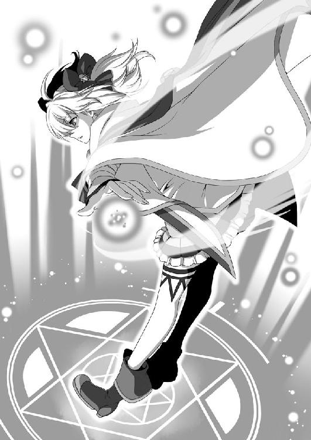
言葉は半分くらいしか耳に入らなかったが「力を抜け」ということだけは聞き取れたので、指示に従う、というか、勝手に力は抜けていく。
「──破壊の裏に再生を。汚染の隣に浄化を──」
少女は目を閉じて、また意味不明な言葉を紡ぎ出した。
「──激しき安らぎをここに。白く白くもっと白く──」
だんだんと、体がなにか暖かいものに包まれていく。
確かに感じる。この星の──鼓動のようなものを。
「《緋色の秘薬》」
瞬間、僕の体は真っ白な炎に包まれた。
体中の細胞がバラバラになり、そしてまた繋がり始めるような、不思議な『癒し』の感覚を味わいながら、ゆっくりと眠りについた。
瞼を持ち上げると、星の散らばる夜空と、桃色の髪をした少女が目に入った。
「あ、気がつきましたか？」
目の前にある顔と頭の裏の柔らかい感触で、自分が膝枕されていることがわかった。
「......うわ」
急に羞恥心が込み上げてきて、慌てて上体を起こそうとするが──失敗。
「だ、駄目ですよ！ 治癒魔法は上手く利きましたけど......怪我は治っても、出血のせいでギリギリまでに減った体力は回復してませんから」
確かに体がダルかった。全力疾走した後のような疲労感がある。
「えっと......治癒魔法って......」
「え......あ」
少女が、しまった、やってしまった、という後悔の表情を浮かべた。
「えっと、やだなぁ。なにを言ってるんですか？ そんなこと言ってませんよ」
頭をかきながら、あははー、と笑う。
「そうだ！ 僕の右手は......」
わずかに首をひねり、視線を移す。僕の右手が──右手の位置に存在していた。
当たり前のことなのに、それがとても嬉しかった。
「......きみが、くっつけてくれたの？」
「はい？ なんのことですか？」
尋ねると、きょとんと首を傾げられた。
「あの、狼みたいなのは......？」
「狼？ ニホンオオカミはとっくの昔に絶滅してますよ」
おかしい。話がかみ合わない。
「ちょっと待ってね......。その、僕はなんできみに膝枕されてるんだっけ？」
「私が公園に通りかかったら、先輩がばったりと行き倒れていたんですよ。それで、正義感にかられた私が、こうして看病していたわけです」
「「............」」
数秒、無言で見つめ合った。少女の顔には冷や汗が浮かんでいて、普段嘘をつかない人が無理して嘘をついたような様子だった。
「......そっか。寝ちゃったのか、僕」
昨日、遅くまでゲームをやっていたせいだろう。あんなファンタジーな夢を見たのも、きっとゲームの影響だ。
「ごめんね。ちょっと寝ぼけてたよ。夢と現実がごっちゃになってたみたい」
「そ、そうですよ！ 全部夢です！ 夢に決まってます」
「だよねえ。バカデカい狼に襲われて、それで魔法使いが助けに来るなんて、そんなはずないよなあ」
「そうです。あんな赤黒くて角の生えた狼が、現実にいるはずがないじゃないですか！」
「あれ。僕、狼の見た目、言ったっけ？」
「あーっ！ そういえば、そろそろ名前を教えてください！」
強引に話をそらされた気がしたが、まあ気のせいだろう。この子はずっと、僕の名前が気になっていたのかもしれない。
「ええと、先輩、になるんですよね？ 私、安達太良高校一年生なんですけど......」
そう言われて、改めて少女の服装を見る。さっき（と言っても夢だけど）までの白いローブではなく、僕と同じ安達太良高校の制服を着ていた。
......高一だったのか。中学生だと思ってた。
「僕は、二年七組、籠島諦」
「あきら？ あきらって、どういう字ですか？」
「『諦める』の諦だよ」
「へー......。なんていうか、珍しいですね」
遠回しに侮辱されている気がした。まあ、こんな名前なんだからしょうがない。
『あきら』なんか、明とか晶とか晃とか彰とか章とか......いくらでも候補があるのに、よりにもよって『諦』って字だ。海外にいる両親（父六十五、母三十五の年の差カップル）のセンスを疑いたくなる。
小学生のころはなんとなくコンプレックスを感じていて、
『帝王の言葉と書いて──諦』
なんてイタいことも言っていたが、最近じゃ普通に『諦めるの諦』と名乗っている。
「それで、きみの名前は？」
「栗栖＝クリムゾン＝紅莉亜。一年三組です」
「え、あ。きみが......栗栖ちゃん？」
僕は、その名前を知っていた。
四月に、一年にえらくかわいいハーフの女の子が入学したと、男子の間で話題になったことがある。どちらかと言えば年上趣味だった僕は、そのときは三年に転校してきた神楽井という帰国子女の方に関心があったので、栗栖ちゃんの顔までは知らなかった。
しかし、今見て納得した。
ピンクブロンドの髪、日本人離れしたくっきりとした顔立ち。大きくてまんまるな目。
噂になってしかるべき美少女だ。
「確か、栗栖ちゃんはハーフなんだよね。いったいどこの国とのハーフなの？」
「こっちの世界とあっちの世界のハーフです。パパが日本人で、ママが王都リューレインの出身です」
「......へ？」
「あ、あーっ！ 間違えました。ヨーロッパのどっかですね」
「どっかって......。わからないの？」
「えーっと......うんと......ア、アメリカだったと思います」
「......いや、アメリカはヨーロッパにはないよ」
「あぅ。ごめんなさい。私、こっちの世界の地理には詳しくなくて......」
「こっちの世界？」
「あーあーっ！ なんでもないです！ 忘れてくださいぃ！」
目に涙をためながら、ぶんぶんと手を振る栗栖ちゃん。
きっと、この子は地理が苦手なんだろう。苦手科目なんて誰にでもあるんだから、それを馬鹿にするのは良くない。
あたふたと焦っている栗栖ちゃんがかわいくて、僕は穏やかな気持ちになった。少し支離滅裂な会話なんて、なにも気にならない。
「さてと。それじゃあ、そろそろ帰ろうかな」
ちょっと栗栖ちゃんの膝枕に甘え過ぎた気がする。ゆっくりと上体を起こすと、さっきまでの疲労感はなくなっていた。首を鳴らし、肩を回す。よし。どこも問題ない。
「だいぶ暗くなってきたから、送っていこうか？」
「大丈夫です。私はこれから、討伐の報告をリューレインの教団にしないと──じゃなくて！ えっと、その家が近いから大丈夫です」
「そうか。それならよかった」
初対面なんだから、あんまり馴れ馴れしくしない方がいいだろう。人間関係は距離感が大切なのである。
別れを告げて帰ろうとしたら「あ、あのっ」と呼び止められた。
「右腕、まだ完全にくっついたわけじゃないですから、しばらく安静にしてて欲しいんですけど......」
「はは。栗栖ちゃん。それは僕の夢の話だよ」
「あははー。そうなんですけど......。でもぉ、一応というか、念の為と言うか......。夢のお告げと言う言葉もありますし......。それにあの、マナが......」
言いたいことがあるのに言えない、という顔でしどろもどろに言う。
「そうだ！ あの、この前読んだ漫画の話なんですけど、その漫画では、魔法を使えない人間が治癒魔法を受けるとマナが、あ、マナっていうのは星の生命力みたいなもののことなんですけど......それで、マナが暴走しちゃう可能性があるから。右腕のこともありますから、そのしばらくは激しい運動を控えてほしいんですけど......」
「？ えっと、漫画の話だよね。どうしたの、急に？」
「うぅ......。でもでも、なんか、籠島先輩の夢とちょっと内容が似てるから、だから、気をつけて欲しいんです」
本当に心配そうに言う栗栖ちゃん。かなりの心配性らしい。
「栗栖ちゃんは優しいんだね」にこりと笑った。「僕って、元々インドア派だから大丈夫だよ。一昨日、ゲーム買ったばかりだから、しばらくはゲーム三昧になると思うしね」
「本当ですか！ よかったあ」
ぱあ、と花が咲いたように笑う。心底安堵している様子だった。
ちょっと天然が入ってるけど、いい子だな。
栗栖ちゃんの第一印象は、そんな感じだった。
翌日の朝、僕が教室に入るなり、織野さんが昨日のことを謝ってきた。
「大丈夫だよ。ほとんど仕事終わってたし。でも、昨日の用事ってなんだったの？」
何気なく尋ねると、織野さんが、まずい考えなきゃ、という顔になり、しばらく間を空けてから、ぽん、と手を叩いた。
「お婆ちゃんが危篤だったのよ」
「あれ。織野さんのお婆ちゃんってこないだも危篤にならなかったっけ？」
「こ、こないだは母親の方！ 昨日は父親の方だったのっ！」
「そっか。大変だね......」
つい、田舎の祖父母のことを思い出した。先月会いに行ったときには元気そうだったけど、もういい年だから、いつどうなるかわかんないんだよなぁ......。
「......あの、そんなに暗い顔しないでよ」
織野さんが表情に罪悪感を滲ませながら言う。
「お婆ちゃん、会いに行ったらすぐに元気になったから......」
「本当に？ それはよかったね、織野さん」
素直に嬉しかった。しかし織野さんは「......もう危篤は使わないようにしよう」と小さい声で呟いて、苦笑していた。
「......なんていうかさ、籠島くんって素直よね。もう少し人を疑うことを覚えないと、将来苦労するわよ」
「大丈夫だよ。信用する相手は選んでるからね。織野さんは誠実で真面目だから、僕に嘘なんかついたりするはずがない。そのくらいはわかってるよ」
「......止めて。その純粋無垢な笑顔を止めて。胸が痛むのよ......」
なぜか複雑そうな表情で、織野さんは胸を押さえた。
「あ、そういえば織野さん。栗栖ちゃんって知ってる？」
昨日の衝撃的な事件（夢だけど）を思い出して、尋ねてみた。
「一年の、栗栖＝クリムゾン＝紅莉亜ちゃんのこと？ 知ってるわよ。こないだの球技大会で、何回か話す機会があったから」
「どんな子だった？」
「人懐っこくて、いい子だと思ったわ。あんなにかわいらしい外見してるのに、全然お高くとまってなくて、すごく感じがよかった」
ふむ。僕が昨日感じた印象と同じだ。
「急にどうしたの、栗栖ちゃんのことなんか聞いちゃって？」
「いや。なんでもないよ」
「ふーん」訝しむように僕を見る。「籠島くんは、ああいう子供っぽい子よりも、もっと大人なお姉さんが好きなんじゃなかったの？」
「な、なんで知ってるの!?」
図星だったので焦ってしまう。
「四月、うちの男子が騒いでたじゃない。『ハーフ美少女新入生、栗栖』と『クールビューティ転校生、神楽井』のどちらが好きか、ってね。籠島くんは、神楽井先輩の派閥だったと思うけど？ あーやだやだ。男子って、どうしてそういう馬鹿なことが好きなのかしらね」
呆れたように嘆息し、織野さんは肩をすくめた。
馬鹿な男の一人としては、情けない心情だった。
今年度の初め、確かに男子の話題はその二人の女子に集中していて、織野さんの言う通り、僕は神楽井派閥に属していた。
どっちかを選べって言われたから選んだだけなんだけどなぁ。まあ、僕が大人なお姉さんが好きなのは否定できないけれど。
「でも、織野さんもよく知ってるね、そんなどうでもいいこと」
「え......あっ、た、たまたまよ、たまたまっ」
織野さんはなぜか上ずった声で言い、そして急に話を変えた。
「そんなことより仕事よ、仕事。また先生に頼まれたの。進路調査票の回収だって」
うへえ、また仕事か。最近多いなぁ。
でも、進路、か。
僕もそろそろ、そういうことを真面目に考えなきゃならない年になったらしい。
「籠島くんは、将来の夢とかあるの？」
回収用の封筒を鞄から取り出しながら、織野さんが言った。
「うーん。いきなり言われてもなぁ......。特にないかな。このまま、特に何事もなく平凡に生きられたらそれでいいし」
「あらら」苦笑いの織野さん。「夢も希望もないのね」
「あ、でも、一個だけ叶えたい夢がある」
「なに？」
「２１１２年まで長生きして、ドラえもんに会いたい！」
「............」
「あ、もしかして知らないの？ ２１１２年って、ドラえもんの誕生年なんだよ」
「いや、それは知ってたけど」
「なんとか頑張って、黄色いドラえもんの耳がネズミ型工作ロボットに食いちぎられないようにしてあげたいんだよなぁ」
「......夢と希望に溢れればいいってものでもないのよ」
呆れ顔でため息混じりに言われた。まあ、僕もそこまで本気で夢見てるわけじゃないけど。できたらいいなぁ、って思ってるくらい。
「昔っからそんなだったの、籠島くんって？」
「んー、どうだろ？ 昔はもっといろいろとあったよ。忍者とかパイロットとかサッカー選手とか、あとは──正義の味方とか。けど、今は特にないね」
「なるほど。夢から覚めちゃったわけね」
「というよりは、夢に冷めたというべきかな」
夢を追いかけることを止めるとき、誰もが漫画やドラマのように、挫折や絶望を経験するわけじゃない。もちろん、そういう人達も大勢いるのだろうけど、多くの場合、夢そのものへの熱意が冷めてしまうのだ。
好きなものを好きなままでいることは、夢中なことに夢中のままでいることは、思いの外難しい。
しかしまあ、それを変化や成長と呼べば、そこそこよくは聞こえるだろう。
「それじゃ、織野さんは？ 織野さんの夢ってなに？」
「うーん。夢、かぁ......」
そこで織野さんは、少しだけ自嘲っぽく微笑んだ。
「普通の女の子になりたい、かな」
「う、ん......？ 織野さんは十分普通な女の子だと思うけど」
「ふふ、ありがと」
そこでチャイムが鳴り、担任の星川先生が教室に入って来たので、僕らは会話を切り上げてそれぞれの席に着いた。
教壇に立つ先生は今日の予定を述べていく。僕はそれを聞きながら、なんとなく左手を右肩に添えた。
わずかな、本当に些細な違和感がある。
まるで、得体の知れない力が、体の中で渦巻いているような。
安達太良高校にはコンピューター部、通称コン部という部活が存在する。部室は校舎の最上階にあり、二十畳ほどの部屋に数台のコンピューターが置いてある。
なぜ部員でもない僕がそのことを知っているのかというと、それは入学当初、僕はコン部に入ろうと思っていたからだ。ＰＣゲームをやって遊ぶような部活かと思って体験入部したら、思いのほか真面目にプログラミングやパソコン作成をやっていたので、すぐに辞めちゃったんだけど。
そして今年の春、コン部に波乱が起こった。
噂の美人転校生、才色兼備の帰国子女、神楽井先輩がコン部に入部したのだ。
コン部の眼鏡達は大層喜んだらしいが、彼らは数日で退部してしまった。
いったい、なにがあったんだろうか。
まあそういうわけで、現在、コン部の部員は神楽井先輩一人。部活は五人以上の部員がいなければ続けられない、という規則もあるのだが、神楽井先輩のコンピューターに関する技術は凄まじいらしく、学校のセキュリティも任されているとかで、特例でコン部の存続が認められている。
「女帝というか、姉御というか、まあそんな感じ......」
最上階へ向かう階段を昇りながら、ひとり呟いた。別に、僕は神楽井先輩のストーカーというわけじゃない。これくらいの話は、この高校の男子ならだいたい知っている。
目的地である生物準備室に到着。ノックしてドアを開く。
「星川先生、頼まれた進路調査票持ってきましたけど......あれ？」
先生の姿はなかった。職員室にいなかったから、ここだと思ってたのに。
期限は来週までだから、明日でもいいか。
僕は進路調査票を鞄にしまい、生物準備室を後にする。
窓からの西日に照らされた廊下を歩きながら、僕は織野さんの事を考えた。
進路調査票の回収は、本当は織野さんと二人でやる仕事だったのだが「ごめん。お腹が痛くて......」と言いながらダッシュで帰ってしまったので、僕が請け負った。お腹が痛いにしてはずいぶんと軽やかにダッシュしていたと思う。
もしかしたら、織野さんはお腹が弱いのかもしれない。腹痛というのはとても辛いものだ。僕も下痢になったときは、軽く世界を呪い殺したくなる。よし、今度ハラマキでもプレゼントしよう。女の子なんだから、お腹は温めておく方がいいに決まっている。
そんなことを考えていると、
「──だか──今回こそ────とどめ──」
「ぎゃはは──おい──大丈────美よぉ？」
威風堂々とした女性の声と、神経を逆なでするような男の声が聞こえた。
声のした方向を向くと、そこにはコン部の部室があった。
「......おかしいな」
コン部には神楽井先輩しかいないはず。それなのに、どうして男の声が？
おいおい。もしかして......その、お楽しみ的な奴なのか。
いや、あの高潔っぽい神楽井先輩に限ってまさか。でも......。
好奇心が刺激された僕は、つい、コン部の方に足を運んでいた。
こっそりとドアノブに手をかける。鍵は掛かっていなかった。ので、わずかに開いて中を覗いてみた。
薄暗い室内。ずらりと並ぶパソコン。青白く光るひとつの画面が、神楽井先輩の凛々しい横顔を照らしていた。
腰まである艶やかな長髪。切れ長の鋭い目。長身でスレンダーな、かっこいい系の美人である。個人的には、細く尖った顎に惹かれる。
ふと、人類はだんだんと顎が細くなっている、という話を思いだした。昔と比べて柔らかい食事を取るようになった人類の顎は、年と共に退化し、年々細くなっているらしい。未来人はきっと、僕達よりもずっと細い顎になると言われている。
まあ、神楽井先輩とはなにも関係のない話だ。
部屋を隅から隅まで見渡すが、神楽井先輩ひとりしかいない。おかしい。それなら、さっきの男の声は、いったい......？
疑問に思う僕をよそに、神楽井先輩は机の上にあった携帯を手に取る。それには大きなストラップがついていた。携帯本体の倍はある、茶色いクマのぬいぐるみ。
あの神楽井先輩がかわいらしいストラップをつけていたことに少し驚いたが、ちょっとギャップ萌えした。
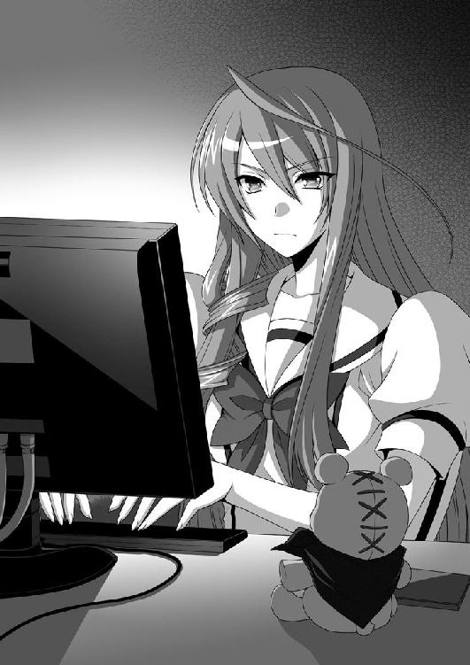
神楽井先輩は細いケーブルで、携帯とパソコンを繋いだ。
一度目を閉じ、ゆっくりと開く。開かれた瞳には気高さの色があった。
「ダイブ イン Ｂ３ワールド！ コードＫＡＧＵＲＡＩ アクセス！」
そう叫んだ後、神楽井先輩は、かくん、と首を下げた。両手はだらんと椅子の脇に下がる。脱力し切った体勢のまま、ぴくりとも動かなくなった。
意識が、どこかに飛んでしまったように。
「......っ！」
僕は反射的にドアを開いて、飛び出した。
「か、神楽井先輩っ！ 大丈夫ですか、神楽井先輩！」
大声で名前を呼び、何度も体を揺するが反応はない。
どうしよう。いきなり意識を失うなんて、なにかの病気なんじゃないのか？
ナルコレプシーっていう、日中に場所を選ばず眠ってしまう脳疾患があったと思うけど、もしかして、先輩はその病気なんじゃ......。
「と、とにかく、急いで保健室に......」
椅子に座っていた神楽井先輩を無理矢理おんぶする。お尻に手を触れてしまったり、背中に胸の感触があったりしたけど、今はそんなことを喜んでいる場合じゃない。
「あ、そうだ。携帯......」
もしかしたら、こういう症状が出たときの連絡先や、掛かりつけの医者の番号などが入ってるかもしれない。持って行った方が絶対にいいはずだ。
僕は携帯をケーブルから──外した。
「......はっ！」
直後、背中から声がした。
「な、なんだ！ どうして、回路が強制切断されたんだ！」
「先輩っ！ 意識が戻ったんですか！」
「うわあ！ な、なんだお前は、誰だ！ どうして私をおぶっているんだ！」
「あ、ちょっと、あんまり暴れないで......」
神楽井先輩は僕の助言も聞かずに暴れ続け、そのせいで盛大にすっ転んでしまった。
「イタタ......。あ、あーっ！」
スカートの上からお尻をさすりながら、僕の手元を指差して叫んだ。
「お、お前、私の携帯端末、パソコンから外したのか......」
わなわなと肩を震わせる。どうやら怒っているらしい。
「ええと、まずかったですか？」
「当たり前だ！ リンク中に端末を外すバカがどこにいる！ 危うく、現実世界に帰ってこれなくなるところだったんだぞ！」
よくわからないが『データを読み込んでいます。メモリーカードを抜かないで下さい』というゲームによくあるフレーズが頭に浮かんだ。
「やっとの思いで追い詰めたバグルスを、逃がしてしまったではないか！ この責任はどう取るつもりだ！」
「ご、ごめんなさい」
ずいずいと迫って来る剣幕に押され、つい謝ってしまった。
「ごめんで済んだら時空法はいらん！」
ああくそ、と頭を抱えて、あと一歩で宿敵を倒すことができたのに横からしゃしゃり出てきた一般人に邪魔された、みたいな顔をする神楽井先輩。
「あの、先輩は、病気じゃないんですか？ ナルコレプシーとか......」
「馬鹿にするな！ 健康体でなければ、この時代に派遣されるエージェントの選抜試験に合格できるはずがないだろう！」
「じゃあ、さっき気を失ったのは？」
「Ｂ３ワールドにリンク中だったんだから、肉体の意識はないに決まっている！」
言っていることがいろいろと意味不明だったが、僕はほっと胸を撫で下ろした。
「そうですか。病気じゃないなら、よかったです......」
本当によかった。
人間、健康が一番である。
「な、ぅ......」
すると神楽井先輩は焦ったように口をつぐみ、バツが悪そうに頭をかいた。
「その、すまない。少し言い過ぎた。きみにも、悪気はなかったのに」
「いえ、いいんですよ。でも、さっきの話はなんだったんですか？ Ｂ３ワールドとか、この時代に派遣されたとか？」
疑問に思ったことを素直に尋ねると、神楽井先輩の顔はあっという間に後悔で満たされた。激昂していらぬことを口走ったような、そんな顔。
「そ、その。え、えーっとだな......」
露骨に視線が泳ぎ始めた。ははーん、わかったぞ。
「寝ぼけてたんですね」
「そ、そうだ！ 寝ぼけていたんだ。いやーすまなかった」
「いいですよ。寝ぼけちゃうことって、誰にでもありますから」
僕も昨日、公園で寝ちゃったときに、栗栖ちゃんに迷惑をかけてしまったのだ。
「先輩って、けっこうおっちょこちょいなんですね」
「うぐ......。ま、まあな」
こうして直接話したのは初めてだったけど、神楽井先輩は思っていたよりもずっと話しやすかった。クールな見た目とは裏腹に、案外親しみやすい性格をしているのかもしれない。
「あ、そうだ」
手を借りて立ちあがった後、僕は思い切って尋ねてみる。
もしも話す機会があったなら、ぜひ訊いてみたいと思っていたことを。
「神楽井先輩の下の名前って──うぐっ！」
鳩尾に衝撃。神楽井先輩の拳が突き刺さった。
「......そんなに私の名前が面白いか？ 滑稽か？ ええ？」
「い......いえ。ただ、気になって......」
腰をくの字に折って鳩尾を抑えながら、僕は神楽井先輩のフルネームを思い出す。
神楽井もにゅ美。
......もにゅ美、である。
彼女がこの高校で有名になったのは、その美貌もさることながら、大変個性的な名前のせいでもあると思う。
もにゅ美って......ねえ？ 個人的にはギャップ萌えなんだけど......。
「くそぉ！ なんなんだ、この時代は！」
神楽井先輩が壁を殴りつける。
「私の時代では、『もにゅ美』なんて学年に三人はいるような、極めて一般的な名前だったのに......。幼少期に感じていた『私の名前、平凡でつまらないなあ』というトラウマと真逆のトラウマを、まさかこの年になって味わうとは......くそぉ」
長い髪を振り乱して地団駄を踏む。奇抜過ぎる名前のせいで、いろいろと苦労してきたらしい。まあ、もにゅ美だもんなぁ。
ようやくダメージが回復した僕が口を開こうとした、そのとき、
「ぎゃははは！ だーっから、登録名は変えろって言っただろうがよぉ」
人を小馬鹿にしたような笑い声が聞こえた。
さっき、この部屋に入る前に聞いた声だ。しかし、周りには誰もいない。
「出発前に、このガク太様はちゃーんと『その名前、これから行く時代だとかなり変だから変えた方がいいぜ』って忠告したのによぉ。もにゅ美ときたら『どんな時代だろうと、私は私だ』とかかっこいいこと言って拒否りやがったんだ。自業自得じゃねえか」
声の元にあるのは、携帯ストラップであるはずの、茶色いクマのぬいぐるみ。
「散々カッコつけてたくせに、ちょーっと人からバカにされただけで気にしちゃって。ぎゃははは！ 案外センチメンタルなとこあるじゃねえかよ」
「ば、ばかっ！ 喋るなガク太！」
神楽井先輩は素早くぬいぐるみの口を抑えた。
ただまあ、完全に手遅れだったと思う。
「ぬ......ぬいぐるみが、喋った......」
驚愕の僕。
しかし神楽井先輩は「ち、違うんだ！」と首を振る。
「これは......えーっと......。そ、そう。そうだ！ 腹話術なんだ！」
「おいおいもにゅ美。そいつはいくらなんでも無理があるんじゃねえのかぁ？」
「黙れガク太！ 頼むから話を合わせてくれ」
ぼそぼそと小声で、神楽井先輩はぬいぐるみと打ち合わせを始める。
「もうバラしちまえよ。別に一般人の小僧にバレたって、任務にゃ影響しねえだろ？」
「大ありだ。この時代の人間にこちらの情報を漏らすわけにはいかない。たとえ事件に繋がらなくとも、減給は確定してしまう......」
「別にもにゅ美の給与が減ったところで、ＡＩペットである俺様にゃあ大した問題はねえからなぁ」
「ぐ......。薄情な奴め」
「ぎゃははは！ だーから、頼み方ってもんがあるだろうよ。ええ？」
「......わかった。欲しがってた、この時代のゲーム買ってやる」
「ひゃっふう！ 話が早くて助かるぜ。レトロゲームは俺様の大好物だからな」
ようやく打ち合わせが終わったらしく、神楽井先輩はこちらを向いた。
「やあ。俺ガク太。よろしく」
急に口調が丁寧になったぬいぐるみのガク太くん。神楽井先輩がわざとらしく、手に持ったガク太くんの口をぱかぱかと動かす。
「......いや。神楽井先輩......」
僕は額に手を当てて、大きく息を吐いた。
神楽井先輩の表情は強張り、額には大量の冷や汗が浮かぶ。
たっぷりと間を空けてから、僕は言う。
「めちゃくちゃ上手いですね！」
すげー。超感動した。テレビでやってる人達よりも断然上手い。どうやったら、こんな別人みたいな声が出せるんだろう。唇とか一ミリも動いてないし。
「そそそ、そうだろう？ あははー」
乾いた、誤魔化したような笑い声を上げて、天井に視線を逃がす神楽井先輩。
なんか、最近、その「あははー」という笑い声をやたらと聞く気がする。
「マジですごいですよ。これ、ガク太くんって言うんですか？ かわいいですねー」
手を伸ばすと、ガク太くんが、パン、と僕の手を弾いた。
「こら小僧。気安く触ってんじゃねえぞ」
やくざ並みにドスの利いた声だった。ぬいぐるみのやわらかい手だったからフィジカルのダメージはなかったが、メンタルは地味に傷ついた。
「......あ。すいません、先輩。調子に乗っちゃって......」
僕は当然、神楽井先輩に謝った。
「いや、違う。今のは私が言ったんじゃなくて」
「え。先輩が言ったんじゃないんですか？」
「あ、ああ！ そうだぞー。私が言ったんだ......」
うがあ、と神楽井先輩は頭を抱えて悶える。見ていて面白い仕草だった。
いい意味で、僕の中で先輩のイメージが壊れた。思ってたよりも気さくで、感情表現の激しい人らしい。腹話術なんて、楽しい趣味も持っていることだし。
そんなことを考えながら神楽井先輩を眺めていたら、脇から鋭い声が刺さった。
「おいおい小僧。俺様のもにゅ美をいやらしい目で見てんじゃねえよ」
「す、すいません神楽井先輩！ そんなつもりじゃなかったんですけど......」
「いや、今のは私じゃなくてガク太が......」
「え。先輩が言ったんじゃないんですか？」
「私が言ったんだけどさぁ。私が言ったんだけどさぁ！」
「どうせ、もにゅ美の乳や尻が気になってんだろ？ そうだろう青少年？ だったら教えてやんよ。上から85 56 77。身長一七三の、スレンダーなモデル体型だぜ」
「ちょ、ちょっと神楽井先輩！ サービス精神旺盛過ぎじゃないですか！」
「だああ！ 違う違う違う！ 私は乳とか尻なんて卑猥な言葉は言わないし、初対面の男の子にスリーサイズを自慢したりしない！」
「え。先輩が言ったんじゃないんですか？」
「もう嫌だぁ──っ！」
神楽井先輩は絶叫し、テーブルの上にあった鞄を広げ「この中に入ってろガク太」と言って、鞄のファスナーを閉じた。
桜色の唇から、鉛のような溜息が洩れる。精神的にお疲れのようだった。
「それで、お前、名前は？」
「籠島諦です」
「アキラ？ どういう字でアキラなんだ？」
「諦めるの諦ですよ」
「なんだそれは？ 嫌な字だな」
栗栖ちゃんと違って直接的に言われた。慣れてるから平気だけど。
「神楽井先輩だってもにゅ美とか──」
「ああ？」
「......なんでもないです」
うむ、と満足そうに顎を引く。いや、マジで怖かった、今の眼。
「んんっ。それで、その、だな、籠島......」
ひとつ咳払いをした後、神楽井先輩はためらいがちな口調で言う。頬が赤らみ、両手を後ろで組んでいて、なんだかもじもじしていた。
「よ、よかったら、メールアドレスを教えてくれないか？」
「............え？」
「だから、メールアドレスを教えて欲しいと言ってるんだ！」
こ、これは夢だろうか。
安達太良高校の男子という男子の憧れである神楽井もにゅ美が、この僕にメールアドレスを尋ねている......。僕も、これを機に仲良くなれたらいいなぁ、でもいきなりメアドとか聞いたら失礼だよなぁ、とか考えていたところだったのに。
「どうして、僕なんかの......」
「これからお前のことを監視しないといけないからだ。メールアドレスがわかればどこにいようとＢ３ワールドから──ああ違う。えっと......その、個人的に、お前と仲良くしたいと思ってな」
「個人的に仲良くしたい!?」
なんて嬉しい言葉なんだ。
もうその言葉しか耳に入らなかった。
「喜んで教えますよ、神楽井先輩」
「そうか。それはよかった」
そして、先輩は赤外線通信をするために、鞄を開き、
「ぎゃははは！ おいこら小僧。調子乗って鼻の下伸ばしてんじゃねえよ！」
ガク太くんを使って、また腹話術を始めるのだった。
よっぽど腹話術が好きなんだなあ。
第二章 最近のＣＧはすごい
男には人生で三度モテ期が来るという。
その話が本当なら、僕はその三度来るモテ期が、高校二年の今、一遍に来ているのだろう。
「籠島せんぱ～い」
まずは翌日の昼休み。栗栖ちゃんが教室にやって来た。
「腕の調子はどうですか？ 私、治癒系はあんまり得意じゃないから不安で......。え、夢の話だって？ あははー。そうなんですけどね。でも用心してくださいね。あ、これ先輩にあげようと思って作ったミサンガなんですけど、よかったらつけて下さい。あ、あ、違いますぅ！ 左手じゃなくて右手につけてください！ ......はい。そうですよね。どっちにつけるかは先輩の自由なんですけど......右手につけてくれたら、私はとても嬉しいです。そのミサンガは、私の魔力が宿ってますから、怪我が完全に治癒したら勝手に切れるようになってて──は！ いやいや、漫画の話ですよ？」
とまあこんな感じで、僕に赤色のミサンガをくれた。幾何学的な、魔法陣のような紋様が描かれた、凝った造りのものだった。
栗栖ちゃんの厚意は素直に嬉しかったのだが、場所を選んで欲しい。教室の入り口でこんなことされたら、僕はクラスの連中に殺される。
予想通り次の休み時間に、嫉妬に狂った男子どもから凄まじい尋問にあった。
そして翌日の昼休みには、
「籠島という輩はいるか？」
神楽井先輩がやって来た。
「ガク太に買って来いと頼まれたゲームの──ああ、違う違う。弟に買ってやりたいゲームがあるから、今度付き合ってくれないか。私はこの時代の──じゃなくて、ここ最近のゲームには詳しくなくてな。外でガク太と話すわけには、ああ、うん。外で腹話術をやるわけにはいかないだろ？ うん、だから、色々と教えてくれたら助かる」
とまあこんな感じで、早い話がデートに誘われてしまった。
クラスの男子からは『裏切り者』というレッテルを張られてしまった。
どうしてルックスのいい女の子っていうのは、自分が周囲に注目されていることに気付かないのだろう。
そんなこんなで、世界は平和で退屈だった。
美人の先輩やかわいい後輩と知り合いになることは、世界を揺るがすような大事件ではないけれど、この退屈な僕の世界においては、十分に刺激的な出来事だと言えるだろう。
ある日の放課後。
僕と織野さんは図書室で勉強会を開いていた。と言っても、僕が一方的に教えてもらっているだけ。今年の四月に、同じ学級委員ということで仲良くなってから、僕が頼んだのである。
織野さんは学年トップクラスの頭脳の持ち主だ。遅刻、早退が多いのに委員長という役職についていられるのは、素晴らしい成績とよくできた人格のおかげだと思う。
「この線とこの弧の間の面積はね、この線の傾きを利用して......」ピンクのシャープペンをノートに走らせ、丸っこい文字を綴っていく。「で、こうなるわけよ」
「ああ、なるほどね」
織野さんの説明は簡潔でとてもわかりやすい。もしかすると、学校の教師よりも教えるのが上手いんじゃないだろうか。
「でもさ、織野さんって計算めちゃくちゃ早いよね。五桁の掛け算とか暗算でやっちゃうし。なにかコツでもあるの？」
「私、脳の演算能力を上げる訓練受けてるから、このくらいの計算ならはっきり言って楽勝──なんてことじゃもちろんなくて！ えっと......、小さいときにそろばんやってたから暗算は得意なの！」
「そろばんかぁ。僕も習っておけばよかったかな。昔、母さんに勧められたんだけど、面倒で行かなかったんだよね」
「そ、そうなんだ。あははー」
楽しく雑談しながら勉強を続ける。
やがて、話題はあの二人のことになった。
「籠島くん、最近モテモテよね」
そう言って、織野さんは小さく頬を膨らませた。
「たまたまだよ」
「たまたまってなによ。いったいどんな手を使ったの？」
「人聞き悪いなあ。ほんとにたまたまだって。偶然仲良くなっただけ」
「ふーん。あの二人、なにかあるのかな......？」訝しむように目を細めるが、諦めて息を吐く。「ま、いいわ。美人には秘密はつきものよね」
「それなら、織野さんもなにか隠しているのかな？」
ちょっとキザなセリフを吐いてみた。「私はそんなに美人じゃないわよ、もぉ」とか「褒めてもなんにも出ないわよ」とか、そんなかわいい返答を期待していたのに、
「ええっ！ あ、わ、わわわ私は、隠してることなんかなんにもないわよっ！」
すっげえ動揺していた。
明らかになにかを隠している風だったけど、本人が隠していないと言ってるのだから、隠していないのだろう。
「......あ」
ふと、織野さんが声を上げた。ポケットで、マナーモードにしている携帯が震えたかのような反応だ。そして、僕の位置からは机の陰になって見えないところで携帯の画面を開いたような素振りをする。
「ご、ごめん。ちょっとお腹痛くて......。だから、帰ってもいいかな？」
まるで上官から『大至急、来い』とメールを貰ったかのような、険しい表情だった。よっぽどお腹が痛いらしい。
「うん。わかった。じゃあ、早くトイレに行った方がいいよ」
「な！ ト、トイレになんか行かないわよ！」
「あれ。お腹が痛いんじゃないの？」
「......そうなんだけど」
「僕は、美人は大きい方をしない、なんて夢見てる子供じゃないから、大丈夫だよ。生理現象なんだから、恥ずかしいことじゃない」
「大きい方なんてしないから！」
「え。便秘なの？」
「違うわよ！ 快食快便！ 今朝だって──ああ、なんの話をしているのよ私は......」
織野さんは自己嫌悪に陥ったように頭を抱える。
「とにかく。その、しばらくかかると思うから、先帰っててよ」
「しばらくって、そんなに痛いんだ......。それなら一緒に保健室行こうか？」
「......優しさが、辛い」
本当大丈夫だから。と言って、織野さんは早歩きでいなくなった。
「......漏れそうだったのかな」
このまま勉強を続けるかどうか少し迷ってから、僕は机の上に広がっていたノートや教科書を片付け始めた。一人で勉強しても効率が悪いし、なによりつまらない。
帰ってゲームの続きでもやろ。レベル上げがだるくなってきたけど、せっかく買ったんだから最後までやりたい。僕は席を立った。
「......ん？」
織野さんが座っていた椅子のそばに、テレカのようなカードが落ちていた。
拾って、眺めてみる。
『世界統一異能研究機関
検体番号──００２７５
タイプ──特化型 ランク──Ｂ
織野栞』
真っ黒なカードに、白抜きでそう印字されていた。免許証のように顔写真も付いていて、そこには真剣な顔の織野さんが写っていた。
大切な物だといけないからすぐに返そうと思い、何度か電話をかけたのだが、電源を切っているらしく繋がらない。届けに行こうにも、僕は織野さんの住所を知らなかった。
しょうがない、明日でいいか。
潔く諦めて、いつもの通学路を一人で歩く。住宅街に入る前の横断歩道で、
唐突に──右腕が熱くなった。
見れば、手首に結んであるミサンガが、わずかに発光していた。
まるで、誰かの魔力に呼応するかのように。
「あ、なんだ。夕日のせいか」
そうに決まってる。白い文字が角度の関係でちょっと光って見えただけだ。右腕の熱も筋肉痛かなにかだろう。
「............」
しかし僕は、なんとなく寄り道をしたい気分になった。
見えないなにかに導かれるように。
糸を引かれるようにして辿り着いたのは、町の外れにある、僕が生まれる前に潰れた中学校だった。木造の寂れた校舎と雑草が伸びっぱなしになっている校庭。来月には取り壊しが決まっている、過去の建造物だ。
「......なにしに来たんだろうな、僕は」
呟きつつ、錆びた鉄製の門に手をかけた。
すると、
「──許されざる者に永劫の業火を。黒く黒くもっと黒く──」
聞き覚えのある、幼い、舌っ足らずな呪文の詠唱。
いや、覚えがあるのは夢の中での話か。
「《堕天使の黒翼》」
突如熱風が吹いて、校門がガタガタと揺れた。反射的に体を腕でガードする。山から吹き下ろす風にしては強く、そして温度が高かった。校門の向こうからは禍々しい力を感じ、全身の皮膚がざわつく。
大気が落ち着くのを待ってから、門を開いて中に入った。
校庭の中心に、白いローブを身に纏った栗栖ちゃんがいた。たった今戦闘が終わったかのように、肩で息をしている。
「栗栖──ちゃん？」
呼びかけると、小さな肩をびくりと揺らし、恐る恐る振り返った。
「籠、島......先輩......どうして、どうして、ここに......？」
幼い顔に、驚愕と悲哀を混在させていく。そして僕の右手に視線を移し「......ああ」と納得したような諦めたような声を出した。
「......そっか。今紡いだ術式とその『法帯』の術式が反応しちゃったんですね......。まいったなぁ。《堕天使の黒翼》は、まだ覚えたてだから......制御に手いっぱいで、つい、籠島先輩のこと忘れてました......」
あはは......、と栗栖ちゃんは力なく笑った。
「今の、見てましたよね？」
「......うん。ごめん。全部見ちゃった」
重々しく頷いて、僕はゆっくりと歩き出す。
栗栖ちゃんは唇を噛みしめ、小動物のように怯えていた。
無理もない。あんなところを見られたんだから。
「栗栖ちゃんのやっていたことは、全部わかったよ」
ようやく、全ての辻褄が合った。
話のところどころがおかしかったところも、夢の中の出来ごとのことも。
「漫画の必殺技、練習しちゃったんだよね」
「............はい？」
「いや。とぼけなくたって大丈夫だよ。うん。人気のない廃校で、思いっきり叫んじゃっただけなんでしょ？ 少しはわかるよ、その気持ち。僕も子供の頃『かめはめ波』とか、全力で練習したからね」
そう。全てがわかった。栗栖ちゃんはかなりの漫画オタクなんだろう。会話の最中にも専門用語が混じってしまうような、いわゆる、イタい子なんだ......。
「あの......？」
「ああ、言い訳しなくてもいいんだよ。悪いことしてるわけじゃないんだから、堂々としていればいい。町中を避けて、わざわざこんなところにまで来てるんだから、誰も迷惑はかかってないしね」
ふと、町で一般人に被害を出させないために、人気のないところで魔物と戦う心優しいヒーローのことが頭に浮かんだけど、今の状況とはなにも関係のないことだろう。
「えーっと......。籠島先輩は、見てないんですか？」
「なにを？」
「さっき戦ってた、熊みたいな魔物......」
「なるほど。そういうのがいるって設定だったんだね」
凝ってるな、と感心してしまう。
「ちょっと待って下さい......。その、いつ、私を見つけたんですか？」
「必殺技の名前を聞いてからだよ。《堕天使の黒翼》だっけ？ その後、なんか熱風が吹いて、それから、校庭の真ん中に立ってる栗栖ちゃんを見つけた」
「つまり......見られて、ない？」
よかったぁ、と呟き、とて、と地面にお尻をつく栗栖ちゃん。
見られてないって、なんのことだろう？
栗栖ちゃんのイタい姿は、たっぷりと目撃しちゃったんだけど。
「このローブとかも、アレでしょ？ コスプレって奴」
「コ、コスプレっ!?」
栗栖ちゃんはくわっと目を開いた。
「籠島先輩、言っていいことと悪いことがありますよ！ ママから譲り受けた、一族に代々伝わるこのローブを、よりにもよってコスプレだなんて！ 魔法攻撃にも物理攻撃にも絶大な防御力を誇るもので、小さな町だったら買えるくらいの価値があるんですよ！」
「え。コスプレじゃないの？」
「こ、こ、コスプレでした......。ええコスプレですとも。布買ってチョキチョキしてチクチクして、作りました......」
「へえ、自分で作ったんだ。上手いもんだなあ。ここの複雑な縫い目とかさ......」
そう言いながらローブに手を伸ばしたら、
「だ、駄目です！ 触らないでください！」
と、思いっきり手を叩かれた。
なんと、栗栖ちゃんに手を叩かれた！
どうしよ......。めちゃくちゃ凹む。こないだ、神楽井先輩にもガク太くんを使って手を払われたけど、栗栖ちゃんの場合話が変わる。
こんな大人しそうな子に手をはたかれるなんて、よっぽどだ......。
「......本当、ごめんね。今度から......気をつける、よ......」
「ち、違うんです！ そんな世界に絶望したみたいな顔で謝らないでください。このローブは戦闘用のものだから、私を除いて、触れるもの全てを拒絶する術式が組まれてるんです。だから、魔法に対して抵抗力のない人が触れると、怪我しちゃうから......」
「......へえ」
「ああ！ 急にイタい子を見るような目にならないでくださいっ！ 私、嘘ついてないです。先輩のためを思っての発言なんです！ 全部本当の話なんですよ！」
「え。本当の話なの？」
「............ごめんなさい。嘘でした。私はイタい子です。設定マニアの中二病で気持ち悪い女の子なんです......」
「そんなに自分を卑下しなくても......。誰にも迷惑かけてないんだから、イタくたっていいじゃないか」
「......あ、あははー。そうですねー。イタくたっていいですよねー」
頬をぴくぴくと引きつらせながら、快活に笑う栗栖ちゃん。目尻に涙が浮かんでいるように見えたのは、たぶん気のせいだろう。
しかし、最近女子と話すと、最終的に相手が自暴自棄になることが多い気がするな。
うーん。僕の会話運びが悪いのかな？
夕暮れに染まる校庭。その隅にあるベンチに、栗栖ちゃんと腰掛けた。
「あれ、ローブは？」
「この宝玉の中に──じゃなくて鞄にしまいました」
「いつの間に」
「私、着替えるの早いんですよ」
というやり取りがあって、栗栖ちゃんは制服姿だった。
「ねえ。栗栖ちゃん」ふと訊いてみる。「好きな漫画って、なんてタイトル？」
「え、えと、えっと......」
栗栖ちゃんは視線を右上に泳がせ、まるで今考えるようなポーズをとり、
「『クリアの大冒険』です......」
と呟いた直後、いくらなんでもこりゃねえよ、と、自分のネーミングセンスの無さにがっかりしたかのように、両手で顔を覆った。
「ちょっと聞き覚えがないな。もしかして昔の漫画？」
「そ、そうです。今じゃもう絶版になってるから、絶対に手に入りませんね。間違っても読もうなんて考えない方がいいですよ」
それは残念だ。栗栖ちゃんがここまで入れ込む漫画なら、ぜひ読んでみたいと思っていたのに。
「栗栖ちゃんは持ってるんだよね。よかったら貸して欲しいな」
「そ、それは......。こないだ、古本屋に売っちゃって......」
「その程度の気持ちなの!?」
びっくりだ。コスプレするほど好きなくせに、なんてことをするんだろう。
「絶版だったら、その漫画はもう手に入らないんじゃ......？」
「大丈夫ですよ。『クリアの大冒険』は私の心の中に残ってます」
「『クリアの大冒険』か......。そういえば、栗栖ちゃんの名前と一緒だね。もしかしてそれがきっかけで好きになったの？」
「......まあ、そんなところです」
「ふうん。じゃあさ」
僕は問う。
「その漫画、どんなお話なの？」
山から風が降りてきて、夕日に照らされた雑草が揺れる。
栗栖ちゃんは軽く息を吐いた後、視線を茜空に移して、微笑した。幼かったはずの顔立ちが、少しだけ大人びて見える。
「逃げ出した悪者をやっつけるために、隣の世界に行く女の子のお話です」
話によると、この世界の隣に、魔法が当たり前に存在するもうひとつの世界がある。主人公は火の魔法が得意な女の子で、その子が仕事で異世界に出張するらしい。
「クローレ大陸の東岸に位置する大国、ラグストリア。その王都リューレインに、主人公はママとパパの三人で住んでいます。ママは元から魔法世界に住んでいた人だったんですけど、パパは、魔法がない世界からやってきた人でした」
「主人公もハーフなんだね」
名前といい、栗栖ちゃんと接点が多い主人公である。
「ママは、リューレインでも腕利きの魔法使いでした。王家直属の戦闘部隊──教団でも一、二を争う戦闘力を持っていたんですけど『権力に縛られるのは性に合わない』とのことで、教団を辞めて、フリーでなんでも屋みたいなことをして暮らしています。パパに出会ったのも、事件の最中だったと聞いてます」
朗々と語る栗栖ちゃんの表情は、まるで自分のことを語るかのように真剣だった。
「そこで、とある事件が起きます。色々と複雑で、国家とか巡っちゃうような大事件だったんですけど......。ものすごーく平たく説明すれば、ママがなんやかんやで悪の組織をやっつけます」
「ひ、ひらてー......」
国の存亡を賭けた戦いが『なんやかんや』の一言で終わってしまった。
「てか、ママがやっつけちゃうんだ。話終わっちゃったじゃん。主人公の出番は？」
「ちゃんとありますよ。その主人公のママがやっつけた組織の残党が、こっちの世界に逃げ込んじゃったんです」
「あらら。ママは仕事がいい加減なんだね」
「返す言葉もないです......。『生きてさえいれば、何度だってやり直せる』とかカッコイイこと言ってトドメをささなかったらしいですからね。そしたら、悪い奴らは普通に逃げ出しちゃって......」
かっこいいママだ。そしてダメすぎる悪役だ。ダメな奴はなにをやってもダメという深いテーマを孕んだ作品なんだろうか。
「そこで、娘である私──じゃなかった主人公が、親の後始末を買って出るわけです」
「へえ。立派なんだね」
「いやあ、それほどでも」
「きみじゃないから」
なんだかお約束のボケとツッコミだった。栗栖ちゃんがボケるとは、意外である。
「それで、その主人公が、こちらの生物を媒介として召喚される魔物を倒すわけです」
「ふーん。なるほどね。おおまかな流れはわかったよ」
「あの、それで、どうですか？」
おずおずと、下から覗きこむようにしてくる栗栖ちゃん。潤んだ瞳で見つめられて、少しどぎまぎしてしまう。
「面白い、ですか？」
緊張した声だった。固唾を呑んで、僕の答えを待っている。
僕は少し間を空けて、正直に思ったことを言う。
「ベタでつまらないね」
「......っ！」
ずっぎゃーん、と。栗栖ちゃんは途方もないショックを受けた。黒いバックに稲妻が走ったようなエフェクトが見える。
まるで、自分の生きる世界そのものを否定されたかのようだった。
「......ベタって......。こっちはパクリでもなんでもないのに......。ていうか、私達の世界を模倣した作品が、こっちの世界でファンタジーって呼ばれてるだけなのに......」
ぶつぶつとぼやきながら、脇に『の』の字を書く。
うーん。率直な感想すぎたかな。よし。とりあえずフォローを入れよう。
「まあでも、王道ファンタジーっていうのも、たまにはいいかもしれない」
「で、ですよねぇ！」
途端に、太陽さながらに表情を輝かせた。どうしよう。単純だぞ、この子。
「主人公の女の子がいいね。一途ないい子そうで、僕の好みだよ」
「やだ先輩ったら。いきなりなにいい出すんですか、もぉっ」
「きみじゃないから」
お笑いのお約束、天丼である。栗栖ちゃん、案外お笑い好きなのかもしれない。
「あ、もしかして、このミサンガのデザインも、その漫画のなにかなの？」
「はい。今、先輩の右手には、私の魔力が溜まっている状態なんです。見た目ではわからないし、自覚症状もないと思いますけど、まだ治療中です。その『法帯』には、私の魔力を先輩の体に繋ぎ止める役割がありますから、絶対に外さないで──ってそんなエピソードが漫画にあったので、つい......。はあ」
やっぱり漫画のデザインだったのか。
なんか、急に着けているのがはずかしくなってきたなぁ。せっかく作ってもらったんだから、外しはしないけど......。
「もらってばかりじゃ悪いから、なにかお返しをしないとね。栗栖ちゃん、なにか僕にお願いとかってある？」
「ええ？ そんな、いいですよ......。元はと言えば、あの日、周囲への確認を怠った私が悪いんですから......」
「そう言わずにさ。なにか、お返しがしたいんだよ」
なぜか、栗栖ちゃんにはとんでもない借りがあるような気がするのだ。
命を救ってもらったクラスの、大きな借りが。
「......じゃあ。地理、教えてくれませんか？」
地理？ とオウム返しすると、はい......、と恥ずかしそうに頷いた。
そういえば、栗栖ちゃんって地理が苦手そうだったな。
「数学や化学はあっちの世界と通じるものがありますし、国語や英語は......その、ずるっこなんですけど、早い話が『翻訳こんにゃく』みたいな魔法があって......。歴史はあっちとこっちで平行して習うから大丈夫なんですけど、どうしても、こっちの世界の地理だけが苦手で......。あっちとごっちゃになっちゃうんです......」
「栗栖ちゃん。苦手なことを苦手だと認めるのは立派だけど、その理由を漫画のせいにするのはよくないと思うよ」
たしなめるように強く言うと、栗栖ちゃんは「す、すみません......」と、どこか納得いかなそうな様子で謝ってくれた。
なぜだろう。正しいことを言ったはずなのに、豪快に間違った気がする。
「わかった。僕でよければ教えてあげるよ」
地理は得意科目でもないけど、苦手科目でもない。去年やった内容なら、教えることはできるだろう。
「ありがとうございます。私、嬉しいです！」
栗栖ちゃんは本当に嬉しそうに微笑んだ。表情や仕草がいちいちかわいらしい。異性として好きっていうよりは、こんな妹が欲しい、という気持ちになる。
空がいよいよ暗くなってきた。そろそろ帰ろうかと思い、ベンチから立ち上がる。
「あれ。籠島先輩、なにか落ちましたよ」
そう言って栗栖ちゃんが拾ってくれたのは、織野さんのカードだった。
「あ、織野先輩だ。これ、どうしたんですか？」
「拾ったんだよ。あ、そういえば、栗栖ちゃんて織野さんとも接点があるんだよね。だったら、このカードがなにか知らない？」
「ちんぷんかんぷんですね。機関とか、検体番号とか......」
「それは残念。できることならすぐに届けてあげたいんだけどさ、織野さん、今、携帯の電源切ってるみたいで」
そうなんですか......、と呟き、しばし逡巡した後、よし、と頷く栗栖ちゃん。
落ちていた木の棒を拾うと、地面になにかを書き始めた。円と星でできた、魔法陣のような図形。その中心に織野さんのカードを置く。
「なにしてるの、栗栖ちゃん？」
「ええと......お、お絵かきです！」
「......なぜこのタイミングで？」
「ああ！ 籠島先輩！ あんなところに水着の美女が！」
「なにぃっ！」
音速で栗栖ちゃんが指した方を向いた。
どこだ、どこだ。水着の美女はどこだ！
後ろから「こんなベタな手に引っかかる人にベタって言われたのかぁ......」という呆れた声が聞こえたり、まるで探知魔法でも使ったかのような光を感じたりしたが、そんなことを気にしてる場合じゃない。
水着の美女はどこだ！
目を極限まで凝らして周りを見渡すが、人っ子一人見当たらない。
「くそ、それなら......とうっ！」
少しでも遠くまで見ようと、僕はさっきまで座っていたベンチに飛び乗った。
しかし、さすがは古いベンチ。ジャンプの衝撃を受けて、ミシミシ、と悲鳴を上げる。嫌な予感──が走る間もなく、ベンチは真っ二つに折れてしまった。
「うぎゃああっ！」
背中から地面に落下。結構なダメージを受けた。
「......一人でなにをやってるんですか、籠島先輩」
そんな感じで仰向けになった僕を、栗栖ちゃんが見下ろす。いや、見下しているのかもしれない。その瞳には、哀れみの感情がたっぷりとこもっていた。
「あの......、ハッスルしてるところ申し訳ないんですけど、どうやら水着の美女は私の見間違いだったみたいです。すいません」
「......なんだよぉ」
落胆の色を隠せないまま、僕はふらふらと立ち上がった。
あーあ。背中痛いし、ベンチ壊しちゃったし、美女はいないし、踏んだり蹴ったりだ。
ていうか、ベンチ壊しちゃったのってまずいよな。来月に取り壊しが決まっているとはいえ、一応まだ公共のものだし。
壊れたベンチをどうやって誤魔化そうか画策し始めた僕に、栗栖ちゃんがカードを渡しながら言う。
「見間違いのお詫びに、織野先輩の居場所を教えて上げますよ」
未舗装の山道で自転車を走らせる。夜の帳はすっかり下りて、ざわざわと音を立てる黒い森が不気味だった。
「......本当に織野さんがこんなところにいるのかな？」
栗栖ちゃんに教えてもらった場所は、町の端にある山の中腹だった。徒歩で行くには少しばかり距離があったので、一旦家に帰り自転車を持ちだした。
ちなみに僕が壊してしまったベンチは、栗栖ちゃんにも手伝ってもらってなんとか修復した。二人で座っても大丈夫だったし、乱暴に扱わなければ問題ないだろう。
ギアを一番軽くしても山道はやはりキツイ。
これで違ってたら恨むぞ栗栖ちゃん。
太ももが悲鳴を上げるほどに自転車をこいで、ようやく開けたところに出た。
古びた工場が見える。辺りに廃車が十数台転がっていることから、自動車の廃棄工場だとわかった。
四方を山々に囲まれた空間で、当然ながら人の気配はな──あった。
漠然とした人の気配がある。
なんだろう、この嫌な感覚は？
自転車から降りて、進むか戻るか数瞬迷った後、僕は進むことを決めた。
好奇心に後押しされて、工場へ向かう。一歩、二歩、踏み出し──
工場が爆発した。
「え？」
爆音が鼓膜を揺すぶる。森の木々が盛大に騒ぎ出す。
「う、うわぁ──っ！」
爆風が体に直撃した。三十センチくらい体が浮き、思いっきり尻を打った。
薄い屋根やガラス片が宙を舞い、地面に落ちる。鉄骨だけが残った工場では、煌々と炎が燃え盛り、辺りの森を照らしていた。
「ちいぃ────っくしょうがっ！」
数メートル先、叫びと共に人が降ってきた。着地なんて生易しいものではなく、それは地面との激突。しかしその人物は、何事もなかったように立ち上がる。
奇妙な格好をした女性だった。
体にぴったりと張り付いた、ライダースーツのような格好。左手には機械的なパーツが付いている。二の腕は素肌が見えていて、ノースリーブの服に手袋を合わせたような感じだった。
「粉塵爆発とはなぁ......。テロリスト共も考えやがったな」
ハスキーな声で呟き、舌打ちする。髪は茶色のショートカット。眼鏡をかけていて、その奥の眼光はナイフのように鋭い。年は二十代前半くらいだろうか。
引き締まった肉体だが筋肉質というほどではない。密着した服のせいで、体のラインがはっきりとわかった。
「織野ぉお──っ！」
「はい！」
女性の叫びに対し、上空から返事があった。それは、聞き覚えのある声だった。
直後、眼鏡の女性の隣に、同じようなスーツ姿の人間が着地する。
まさか、と思いつつも、僕は目を凝らした。
「......やっぱり」
織野さんだ。少し遠いけどわかる。炎に照らされた横顔には、普段からは想像できないほどの真剣さが見えた。
「逃げてった敵の位置を感知する。指示すっから、その方向にお前のサイコキネシスで私をぶん投げろ！」
眼鏡の女性は、意識を自分の内面に向けるように目を閉じた。
「......奴ら、バラバラに逃げやがったな。さすがに考えてやがる。一番近い奴をとっ捕まえて、情報を聞き出すしかねえな。織野！ 二時の方向、角度42度だ！」
「わかりました！ 行きますよ、久我山さん！」
眼鏡の女性の名前は、久我山と言うらしい。
織野さんが天に向けて手を突き出す。その動きに合わせ、久我山さんがロケットのように空中に放たれた。夜空の黒さに紛れ、僕の視力では先を追うことができなかった。
銃声。打撃音。悲鳴。様々な音が、空から落ちてくる。
音が止んだかと思うと、今度は男が落ちてきた。無様に地面と衝突し、苦鳴を漏らしながら、しんどそうに起き上がる。
「くそが......。機関の犬どもめ」
男は森に向かって走り出す。
「逃がさないっ！」
織野さんが手を上げる。すると、一台の廃車が宙に浮いた。
手を振り降ろすと、廃車が男の逃げ道をふさぐように、地面に突き刺さった。
逃げ場を失くした男の元に、夜空から大地へ、一筋の線が描かれる。
凄まじい勢いで、隕石が衝突した。
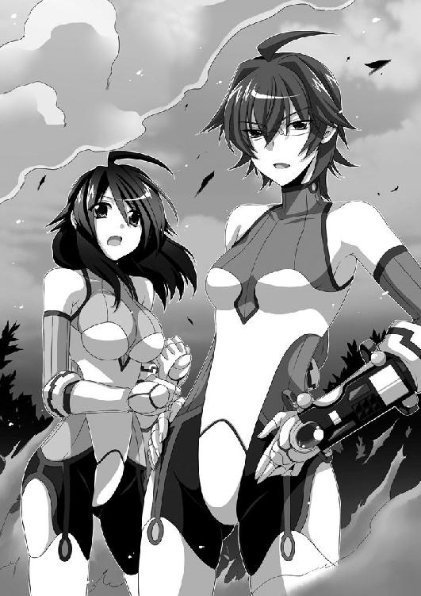
「うし。一丁上がり」
隕石の正体は久我山さんだった。落下の勢いを利用した一撃を喰らった男は、白目を剥いて気を失った。
「Ａ班、この男を連れてけ。Ｂ班はこの場の証拠隠滅と消火。Ｃ班は逃げてった奴らの捜索を続けろ」
久我山さんが淡々と指示を出すと、その直後、森の中から多くの黒尽くめの人達が現れた。無駄のない動きで、各々の役割を果たしてゆく。
「お疲れ様です。久我山さん」
切り株に腰を下ろし、煙草をくわえて一服する久我山さんに、織野さんが近寄る。
「あの男、素直に仲間の潜伏場所を素直に吐きますかね？」
「吐かなかったら尋問が拷問に変わるだけだ」
「......柾木さんは、どうしてこんなことを......」
「余計なこと考えんなよ。あいつは裏切り者だ。......そう嫌な顔すんなよ、織野。仕事なんだから、しょうがねえだろ？」
「......はい」
「捕まえた男が対精神干渉訓練を受けてないことを願うんだな。そうしたら、斎条の能力を使って、全ての情報を引き出せる」
「斎条くんか......。そうですね。テレパシーの特化型である彼なら、そのくらいは朝飯前ですから」
「まあ、捕まえた男のことなんかより、心配すべき厄介事があるようだぜ」
ふーっと煙を吐き出した後、久我山さんは鷹の如く鋭い眼光を──僕に向けた。
「私には『視』えてんだよ。そこの木の陰で腰抜かしてる小僧。出て来い」
「......マジ、か」
どうやら、全てお見通しらしい。無視して逃げ出そうかとも考えたが、すぐに捕まりそうな気がするので、諦めて出て行くことにした。
「......な、あ、籠島、くん......」
僕が大木の陰から出ると、織野さんは愕然とした。
「織野。知り合いか？」
「は、はい。高校のクラスメイトです......」
戸惑いを隠せない様子の織野さんと、あからさまに機嫌が悪そうな久我山さん。
「......籠島くん。どうして、こんなところに？」
「織野さんに、これを返そうと思って......」
ポケットからカードを取り出し、織野さんに渡した。
「これ、私のＩＤカード......。そうか。籠島くんが持ってたのね」
「織野。お前、失くしてたのか？」
「え、あ、その......はい、すいません」
「そのせいで、一般人がこんなところまでやってきちまって......ったく」
久我山さんが値踏みするような目で僕を睨んだ。目つきが悪くて、正直怖い。ヤンキーにカツ上げされている気分だ。
しばらくして、ふぅ、とつまらなそうに息を吐いた。
「斎条んとこ連れてくぞ。記憶を操作する」
「く、久我山さん！ 待ってください。いくらなんでも横暴です」
「横暴でも、規則は規則だ。人の口に戸は立てられねえんだから、記憶を消すのが一番手っ取り早い。口封じされるよりはマシだろ」
「だからって......」
織野さんの顔に苦渋が滲む。
「大丈夫だ。斎条なら都合の悪いとこだけ、上手く消してくれる」
「でも、テレパシーの応用で記憶を消去するとしたら、今日の事件を中心にして消去することになりますよね。そうしたら、籠島くんの記憶から、私との思い出とかが──」
「消えるだろうな」淡々と言う。「消えないにしても、なんらかの悪影響が出る」
「それは──嫌です」
「甘えんなよ。織野」女性のものとは思えない、獣が唸るような低い声。「公私混同するな。命を奪うわけじゃねえんだから、納得しろ」
「嫌なものは、嫌です」
「......おい。私が優しいうちに言うこと聞いた方がいいぞ」
ゆらり、と久我山さんが立ち上が──消えた。
直後、まるで瞬間移動でもしたかのように、織野さんの後ろに現れた。
なんだ、今の動き？ 僕がまばたきしてる間に動いたのか？
「わかったな」久我山さんは織野さんの両肩に手を置き、ぎり、と力を込めた。
「わかりません」しかし織野さんは引かない。珍しく頑固だった。
久我山さんは舌打ちし、そして「おいお前」と僕の方を見た。唐突に話を振られて焦るが「なんですか？」と声を絞り出した。
「お前、いつから見てた？」
「工場が、爆発したくらいから......」
「だったら、だいたい察しはつくだろ？」
僕は頷く。断片的な情報しか頭に入らなかったが、全体像くらいは掴めた。
カードに書かれていた『研究機関』という文字。
サイコキネシス、テレパシーという、飛び交う超能力用語。
織野さんは──そういう裏組織の一員だったんだ。
「お前は見ちゃならないものを見た。だから記憶を消す。いいな？」
「え、いや......その、いくらなんでもいきなり過ぎませんかね。僕にも心の準備というものが必要で、できたら、もう少し時間を......」
「織野がこの調子だ。お前のことをこれ以上庇えば、織野の立場が悪くなる。それでもいいのか？」
「あ、ならいいです」
即答した。
「僕の記憶なんか、さっさと消して下さい」
久我山さんと織野さんが、驚いたように目を丸くした。
あれ。そんなに変なこと言ったかな？
「......久我山さん。やっぱり、私は反対します」
「んなこと言っても──」
「籠島くん！」
唐突に、織野さんが僕の方を向いた。その瞳は真剣そのもの。
「な、なに？」
「落ち着いて聞いてね」
大きく深呼吸してから、織野さんはやんわりと微笑んで、言う。
「これは映画なのよ」
「............」
「ちょうど今、映画の撮影をやってたの。それで、ちょっと籠島くんをからかってみようと思っただけ。記憶消すとか脅かしてね」
「......おい織野。お前、いくらなんでもそれは......」
「なんだ。映画だったのか」
僕は信じた。なんの迷いもなく信じた。
僕の頭には、織野さんを疑う機能は備わっていないのである。
「騙されたでしょ。うふふ」
「騙されたなあ。あははは」
そっかぁ、映画かぁ。それなら全部納得だ。
爆発のシーンなんて映画じゃよくあること。
空を飛んでたりしたのは全部ワイヤーアクション。
織野さんが落としたあのカードは小道具。
他にもよくわからないところが多々あったけど、まあそれはＣＧかなんかだろう。最近のＣＧはすごいと聞くし。
「私が混ぜてもらってる大学の映画サークルでね、自主制作映画を作ってるのよ」
「自主制作映画で爆破シーンがあるの!?」
どんだけ金持ちな仲間がいるんだろう。許可とかちゃんと取ってるのか？
「......おい、なんなんだこの馬鹿は？」
「人を信じる素晴らしさを知っている男です」
「怪しい壺とか一発で買いそうだな」
ひそひそと僕の話をする二人。たぶん褒められてると思う。思っておこう。
やがて、久我山さんが僕に視線を移す。
「おいお前、ちょっと頭出せ」
「え、嫌ですよ」
絶対に殴られると思ったので、断固拒否する。
「ああ面倒くせえな。殴らないから、頭だせ。早く」
そう言われ、仕方なく頭を出した。久我山さんが僕の額に手を当てる。
「......適当に話合わせてるだけかと思ったら、本気で映画だと思ってるみてえだな。こいつ、相当おめでたい頭してやがる」
僕の心を読んだかのようなセリフを述べ、切り株に座り直す。
「あれ、そういえば織野さん、撮影中にも織野ってよばれてなかった？ 映画なら役名で呼ばれるんじゃないの？」
「え？ あー......」
織野さんは、そんな細かいところを突っ込まれるとは思ってなかったわ、とでも言いたそうな、困った顔になった。
「劇中じゃ、織野は苗字じゃなくて名前なのよ。オリノ、ね。たまたま一緒だったのよね。本当、すごい偶然だわー」
「すごい偶然だね。じゃあ久我山さんは？ 名前が合致する人間が二人もいるなんて偶然は、さすがにないと思うけど......」
「えーっと......。ほ、ほら久我山さん。本名をどうぞ」
「知るか」と呆れてものも言えない様子の久我山さん（役名）。
うぅー、と唸りながら、織野さんは助けを求めるように空を見上げた。そしてなにかを閃いたのか、ぽん、と手を叩き、視線を僕に戻す。
「星空キラ子さん！」
「......へえ」
絶滅したアイドルみたいな名前だった。神楽井もにゅ美先輩といい、かわいそうな本名の人ってけっこういるんだな。僕の諦なんて、全然マシな方だ。
「織野っ！ ふざけてんのか、てめぇ！ いくらなんでもそれはねえだろ！」
「ご、ごめんなさいぃ。咄嗟に思いつかなくてえ」
「そんな気にすることないですよキラ子さん！」僕は慌ててフォローに回る。「個性的でいい名前だと思います！」
久我山──じゃなくてキラ子さんは、苦虫を噛みつぶしたような表情になる。心底不愉快そうに舌打ちしてから、僕らに背を向けた。
「私はもう知らん。織野。その男、お前が責任持ってなんとかしろ」
そう言い残し、大股で歩き出す。向かった先には映画のスタッフさんがいて、その人達と言葉を交わしながら、頑丈そうなトラックに乗りこむ。おそらくあの中に、カメラやライトなどの撮影機材が入っているのだろう。
「......ずいぶんと役に入り込んでるんだね、キラ子さん。本当に織野さんの上官みたい」
そう言うと、織野さんが小さく「ごめんなさい、久我山さん......」と呟いた。
キラ子さんと他の映画スタッフさんがいなくなってから十分ほど経って、
「ていうか置いてかれたーっ！ 着替え、着替えがぁーっ！」
と、織野さんは自身の危機的状況を自覚した。着替えはトラックの中に置いてあるらしい。今さら呼び戻すのはさすがに悪い、とのことで、一緒に徒歩で下山することになった。
自転車を押しながら、並んで砂利道を下って行く。
僕から映画の話を振った。織野さんはその映画にずいぶんと精力的に取り組んでいるようだったので、この話題なら盛り上がるんじゃないか、と思ったのだ。
しかし織野さんは、なんとも言えない微妙な笑顔になった。こちらの世界にはあまり関わって欲しくない、という強さと優しさを兼ね備えたような笑顔だった。
「あらすじだけ言うと......」
超能力の研究を極秘で進めていた、とある研究機関。その規模は世界を股にかけ、本部はアメリカにある。その研究成果によれば、超能力とは、先天的に素養を持っている人間が、なんらかのきっかけで目覚めるものである。
研究機関は、才能あるものを選別するシステムと、その眠っている能力を目覚めさせる育成方法を解明。ただし育成方法とは名ばかりで、実際にはただの人体改造。
育成方法には、特化型と万能型の２パターンがある。
「なんだか、育成ゲームのパラメータみたいだね。パワー型にするか、スピード型にするか、それともバランス型にするか、みたいな」
「ゲームか......。そうね。研究員なんて、みんなゲーム感覚なのかも」
織野さんは表情を暗くし、自嘲っぽく笑った。
「私は、サイコキネシスの特化型。他の能力は一切使えない。動かせるものの重量は五六三・二キロまで。能力が通用する範囲は半径百三・四メートルまで──という役」
ずいぶんと細かい数値設定だな。映画本編に関係あるのか、それ。
「久我山さ──じゃなくてキラ子さんは万能型。サイコキネシス、テレパシー、テレポート、透視、など。ほとんどの能力をまんべんなく使えるわ。ひとつひとつの出力はそんなに強くないけど、応用力があって隙がない。私の上官みたいな人──って役」
二人は上司と部下の関係──という設定らしい。
しかし僕には、そんな細かい設定よりも気になることがあった。
「......今作ってる映画って、もしかして十五禁だったりする？」
「ん？ どうしてよ？」
「いや......、だってそのスーツ......」
指摘すると、織野さんは顔を真っ赤にして、両手で体を隠した。
「こ、この『ドライブスーツ』は先端科学の結晶なのよ！ 極限まで動きやすいフォルムを追求していて、随所に組みこまれたマイクロコンピュータが装着者の脳波を測定してくれて、個人個人の能力に合わせたサポートが──って設定のスーツなのよ......」
映画なんだから、もっと融通利かせればいいのに。きっと製作者が男なんだろうな。
それにしても織野さん、思ってたより胸が大きい。破壊力抜群のふくらみが、ドライブスーツとやらで強調されているではないか。
制服のときはわからなかったけど、これがいわゆる隠れ巨乳という奴なのか。
素晴らしいな。
「うぅ......。戦闘中──じゃなくて撮影中はアドレナリン出てて気付かないんだけど......冷静になって考えてみると、やっぱりこのスーツ、相当恥ずかしいわよね......」
「に、似合ってると思うよ」
「......うれしくない」
女心は難しい。
その後のあらすじは、話半分に聞いたからあまり頭に残っていない。
研究機関から逃げ出した超能力者が仲間を集めてテロリストになり、そいつらを狩るために、超能力者が実戦に投入されたとか、ざっくばらんに言うとそんな感じ。
ぶっちゃけ、僕の好きなタイプの映画じゃなかった。
「僕はアクションよりも、ミステリーとかラブロマンスの方が好きなんだよねえ」
「......あそう」
織野さんが、怒りをこらえるように拳を握りしめたのはなぜだろう。
第三章 アングルの下手なアニメ
日曜日の昼下がり、僕は駅前の人混みを縫うように歩いていた。
隣にいるのは、神楽井先輩。先日の、弟さんのためのゲームを一緒に買う、という約束を果たすのが、今日となったわけだ。
これは、いわゆるデートではないだろうか。
美人の先輩とデート。この状況を喜ばない男子がいるはずがない。テンション鰻昇り。いや、もう鯉が滝を昇って竜になる勢いだ。
神楽井先輩の格好は、青いタンクトップに細身のジーンズとシンプルなものだったが、シンプルイズザベストとはまさにこのこと。スタイルが抜群によいので見事に様になっている。そのままファッション雑誌の表紙を飾れそうだ。
「神楽井先輩の弟って、いくつなんですか？」
「ん？ 私に弟はいないぞ。兄なら──」
「あれ。今日は弟にゲームを買うはずじゃ......」
「あーいたいた！ 実はいた。うん。存在感が薄い奴だからすっかり忘れていたな」
「ひどいお姉さんですね」
言葉を交わしながら向かったのは、駅前にある大型のオタク文化専門店。アニメ、漫画、ライトノベル、ゲーム、同人誌など、幅広いオタク文化を網羅した店だ。ここに来れば、オタクっぽいものは大概手に入る。
正直、ここには連れてきたくなかった。しかし先輩が欲しいと言ったゲームが、最近のもの、一昔前のもの、メジャーなもの、マイナーなもの、と種類が見事にバラバラだったのだ。それら全て手に入れられる店は、この町ではここしかない。
「......えっと、ゲームは三階ですね」
入口の付近の案内板を眺める。普段利用しない店だから、どうも勝手がわからない。
一階はアニメのエリアで、店内のあちらこちらに二次元の美少女がいた。流れている曲もアニソンである。
やっぱりデートで来るところじゃないな、と後悔しながら神楽井先輩を見ると、
「おおお......」
切れ長の目は爛々と輝いていた。
そのままピューっと、風のような動きで店内に滑り込む。
「これが、初回限定版......。すごい、フィギュアが付いているぞ！ ああ！ こっちはボックスだ！ なに、原作者の書き下ろし小説が付いてるだと！ 素晴らしいっ！」
壁一面に並ぶアニメのＤＶＤをうっとりした表情で眺める。
......神楽井先輩ってオタクだったのか。かなり意外だな。
ただ、その態度が気になった。美少女キャラに萌えるオタクというよりは、もっと高尚な、例えるなら、新しいミイラを発見した考古学者のような雰囲気だ。
「まさか、この街にこんな素晴らしいところがあったとはな......。迂闊だった」
「......神楽井先輩って、こういうの好きなんですか？」
「ああ。私は古典芸能、特に平成文学には目がないんだ」
古典芸能？ 平成文学？
疑問に思う僕を放置して、神楽井先輩は歴史の教科書を読みあげるように語る。
「平成の時代に、オタクと呼ばれる人間の間で流行った、アニメ、フィギュア、ライトノベル、漫画などの平成文学。通称オタク文化。『萌え』と呼ばれる、人間のロマンを追求した、古きよき日本の文化だ」
「............」
「うちの家族はみんな平成文学マニアでな。家には何冊も文献があった。私は、ツンデレを取り扱った作品が特に好きだな。去年の夏休みには、『ツンデレの変遷』というテーマで研究して、見事に金賞を取ったぞ」
「......先輩、ツンデレとか知ってるんですね」
「何を言う。ツンデレなんて、古文で一番初めに習うことじゃないか。ツンデレ、ヤンデレ、クーデレ。デレの三段活用。うむ。女性の魅力を表す見事な言葉だな」
源氏物語の素晴らしさを語る古文の先生のような口調である。
「どうしても原本でライトノベルを読みたかったから、この時代の言語や言葉使いは猛勉強したんだ。どうだ籠島。私の言葉使い、なにか問題はあるか？」
「......え？ いや、なにも問題はないですけど」
「そうだろう。まあ、元々古典は得意だったから、勉強していて楽しかったがな」
ふっふっふ。と得意そうに微笑んでから、
「──ってああ！」
しまった、調子に乗ってベラベラと余計なことを話してしまった、という感じで、神楽井先輩は慌てて首を振る。
「あー、うん。まあ、もしも未来人がこの時代にやってきたら、こんな反応をするだろうな、という話だ」
「なんだ、そういうことですか。なにかと思いましたよ」
ほんと、神楽井先輩はユーモアがあるよなぁ。
でも、今の話は案外面白い。
後千年も時が過ぎれば、今のオタク文化を古典の授業で習うような時代が来るのかもしれない。僕らが習う源氏物語や枕草子だって、言ってしまえばただの小説。内容云々よりも、古い時代のものだから、ということで評価されているのだ。
神楽井先輩は、ＤＶＤやブルーレイをどんどん籠に詰めていく。
うっとりとした恍惚の表情で、実に楽しそうに店内を散策し続ける。僕はややげんなりしながらも黙ってついて行く。
「って先輩！ そっちは十八禁コーナーですよ。何平然と入ろうとしてんですか！」
エロアニメやエロゲーが陳列されているであろうエリアに侵入しようとする神楽井先輩を、僕は必死に引き止めた。そうしたら、
「愚か者！」
と、怒鳴られた。
「古きよき日本の文化をなんだと思っている！ そんなイヤらしい目で芸術を見ることが、一番イヤらしいんだ！」
ヴィーナスの裸婦画を「ただのヌードじゃん」とか、源氏物語を「ただのエロ小説じゃん」とか。そんな風に馬鹿にされたかのような憤りがあった。
いや、話はわからなくもないけど......。
戸惑う僕を置いて、先輩は威風堂々と十八禁コーナーに入っていった。直後、ざわざわとどよめきが走り、焦った顔の男達が逃げるように出てきた。
いきなりあんな美人が入ってきたら驚くよね。気持ちはわかりますよ、みなさん。
「......弟さんのゲームはいいのかな？」
神楽井先輩がなかなか出て来ないので、ぶらぶらと店内を散策する。
超能力モノのアニメを見て、なんとなく織野さんの事を思い出したり、魔法使いモノのアニメを見て、なんとなく栗栖ちゃんのことを思い出したり。
現実にはありえないテーマを扱った、フィクション作品達。
ふと、昔を思い出した。
まだ僕が、サンタクロースの存在も、秘密結社の存在も、正体を隠して世界を救う正義の味方の存在も信じていた、小学生のころ。
正義の味方になりたかった、あのころ。
あのときのそよ風公園での出来事が、今の僕の人格を形成したと思う。
どうしてあのとき──
ジリリリリっ！
耳障りな非常ベルが、僕の意識を現実に引き戻した。
「な、なんだ？」
すぐに店内放送が響いた。
『お客様にご連絡致します。ただいま、当店の六階にて火災が発生致しました。従業員の指示に従って、速やかに退避して下さい』
放送の直後、店内が一気にざわめく。我先にと逃げ出そうとする客達を、店員が必死に誘導し始めた。
「なにごとだ！」
緊迫感溢れる声と共に、神楽井先輩が十八禁ゾーンから出てきた。......しかし両手いっぱいにエロゲーの大きな箱を抱えている姿には、微塵も緊迫感がなかった。
「上の階で火災が起きたらしいですよ。早く逃げましょう」
「なに？」神楽井先輩の表情が途端に険しくなる。「......まさか」
「まさか、じゃないですよ。早く逃げないと」
二人で入り口へと向かう。店員のそばを通り過ぎたとき、
「スプリンクラーが発動しないって、どういうことだ？」
「わかりません。電子関係のトラブルみたいです......。今、詳しい人が原因を調べてくれているんですけど、上手くいってないみたいで......」
「......いったい、なにが起きてるんだ」
と、不穏な会話が耳に入った。神楽井先輩の表情がさらに険しさを増す。
「おい、ガク太」
「ああ。間違いなく『リローダー』の仕業だろうなあ」
鞄から携帯を取り出し、いきなり腹話術を始めた。
「つっても、目的性が感じ取れねえ。おおかた、奴らの不始末で漏れだしたバグルスが、勝手に暴れてるだけだろな」
「ハタ迷惑な奴らだ。バグルスの管理ぐらいしっかりしてほしいものだな」
重苦しい雰囲気で腹話術を続ける神楽井先輩に、僕は言う。
「ちょっと神楽井先輩！ 腹話術で遊んでる場合じゃないですよ！」
「ああもう！ わかってるから、ちょっと黙っててくれ！」
僕を押しのけ、ガク太くんとの会議を再開する。
だ、ダメだ......。
神楽井先輩、パニックになってる......。
ガク太くんと話して現実逃避している。
意外とピンチに弱い人だったんだ。くそ。僕がなんとかしなきゃ。
「神楽井先輩、落ち着いてください！ こんなときは冷静に『おはし』を思い出して下さい！ 『押さない』『話さない』『しゃべらない』です！ ......あれ？ 『話さない』と『しゃべらない』って意味が一緒だな......。えっと......あ、そうだ。思い出し──」
「籠島！」
怒鳴られて頭が空っぽになった。あとちょっとで思い出せそうだったのに！
「きみは先に逃げろ！ 私はやることができた！」
「そんな！ 神楽井先輩を置いて逃げられるはずがないじゃないですか！」
「......男らしさが、ウザい」
顔をしかめた神楽井先輩は「パソコン売り場は、地下一階か」と案内板を確認し、いきなり走り出した。エスカレーターを三段飛ばしで降りて行く。
当然、僕は追いかけた。パニックに陥っている神楽井先輩を一人にするのは危険だ。
正義感が僕の原動力だ！
......それなのに、余計なことばかりをしている気がする。不思議だなぁ。
「なんでついて来るんだ籠島！」
「神楽井先輩が逃げるからですよ！」
「邪魔だ！ 帰れ！」
「帰りません。神楽井先輩にいくら嫌われようとも、僕はあなたを守ります！」
「......ややカッコイイのが、むかつく」
最新機種から中古まで、フロア全体に様々なパソコンが置いてある地下一階。神楽井先輩はぐるりと周囲を見渡す。
「ガク太。Ｂ３ワールドに繋ぐことができるパソコンを探せ」
「あいよ。────────。はいはい。けっこうあるな。一番相性がいいのは、特売やってるそこの奴だ。つっても、改造しまくってる学校のパソとは比べもんになんねーけどな。シンクロ率は70パーぐれえに落ちる。けけけ。大丈夫かぁ？」
「問題ない。被害を見る限り、そこまで大した敵じゃなさそうだ」
言い切り、そして特売のパソコンの前に立つ。
「神楽井先輩っ！ だから腹話術してる場合じゃありませんって！」
「............ちっ」
面倒くせえなこいつ、という目で睨まれた。え、なんで？
「ふぁーあ、眠いなー」
唐突に、神楽井先輩はわざとらしく欠伸をした。
「うわー、超眠いぞ。一週間寝てないんだよなー」
「本当ですか!? それにしてはお肌ツヤツヤですね！」
「ちょっと寝る。十分くらい寝る。絶対起こすなよ」
「ええ！ この状況で寝るんですか!? 上、火事起きてるんですよ！」
「寝るったら寝る。起こしたら殺す。あと、パソコンと繋いだ携帯を外しても殺す。わかったな？」
大熊のような威圧感に圧倒され、僕は頷くしかなかった。先輩は満足そうな笑顔を浮かべて、パソコンに向き直る。ガク太くんのついた携帯を、パソコンに繋げた。
「ダイブ イン Ｂ３ワールド！ コードＫＡＧＵＲＡＩ アクセス！」
そう叫ぶと、がくん、といつぞやと同じように意識を失った。慌てて手を伸ばし、その体を支えてあげる。
「......うわ。本当に寝やがった、この先輩」
マイペースにも程があるぞ。
起こしたら殺すって言われたけど、どう考えても起こした方がいいよな。ここは地下だから火の手は伸びて来ないだろうけど、逃げた方がいいに決まってる。
「ちょっと、神楽井先輩。起きてくださいよ」
体を揺らすが、効果はない。すやすやと、まるで意識が別の世界に転送されたように、全くの無反応だった。
わずかに揺れるまつ毛と、吐息の漏れる唇。僕に全てをゆだねている肉体。
「......起きないと、セクハラしますよ」
反応はない。
「............」
絶対に無言になっちゃいけないところで無言になる僕。
ごくり、と生唾を飲み込む。
『変なことをしたら殺す』
「......っ！」
パソコンのスピーカーから声がした。神楽井先輩の声とよく似ていたが、先輩は寝たままなのでそんなはずはない。見れば、画面では３Ｄアニメが流れていた。
なぁんだ、今のはアニメの音声か。あー、びっくりした。
目を覚ますのをただ待っているのも暇なので、僕はたまたま流れていた３Ｄアニメを見ることにした。
青白い電子的な空間のあちこちに、半透明の三角錐や四角柱が浮いていた。時折、ゲームがバグったときのようなノイズが走る。
その無機質なフィールドを、縦横無尽に跳びまわる一つの影。
長い髪が天の川のように煌めいている。頭部では熊のように丸い耳がピョコピョコと動いていて、背中からは六枚、菱形の羽が生えていた。
スタイルや髪型が神楽井先輩とよく似ていたが、ただの偶然だろう。
その戦士は、右手に持っている未来的なデザインの剣を銃やブーメランに変化させて、次々と雑魚キャラっぽい昆虫達を消し去っていった。
しっかしこのアニメ、アングルが下手だな。
戦っている女性の顔が全く見えないじゃないか。まるで、僕に顔を見られないように努力しているみたいだ。
女戦士は雑魚を蹴散らしながらどんどん先に進み、とうとうボスっぽい奴のところに辿り着いた。
かくかくとしたポリゴンの巨大ムカデ。手足が文字通り百本くらいあって、ややグロテスク。口には鋏のような牙があり、それが動くたびに耳障りな音がした。
『ケケケ。予想通りだな』
女戦士の熊耳が動くと、それに合わせて男の声がした。ガク太くんの声、すなわち腹話術をするときの神楽井先輩の声とよく似ていた。
『ありゃなんの指示も受けてないバグルスだ。適当に暴れまわってるだけだな。図体ばっかしデカイ雑魚。あーあ。つまんねえ敵で残念だね』
『早く終わらせよう。被害は、最小限に抑えたい』
『へいへい』
女戦士がムカデに向かって飛び出した。
『リル・ソーディア──モードチェンジ──カテゴリ４──ロストキャノン』
右手の剣が、がしゃんがしゃん、と機械的な動きを経て、馬鹿デカい大砲へと変貌した。明らかに質量保存の法則を無視している、奇妙な変形だった。
女戦士は、自身の体長の倍はありそうな大砲を右腕にセットし、ムカデの攻撃を俊敏な動作で躱しながら、徐々に距離を詰めて行く。
『エネルギー充足率──98──99──フルチャージ。いつでもいけるぜえ』
数本の触手を合わせた、巨大な槍の一撃を紙一重で躱し、敵の体勢が崩れた一瞬の隙をついて、女戦士は空間を疾走した。
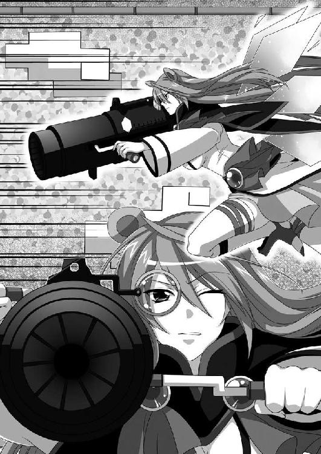
ムカデの額に、大砲の口を押し付ける。それと同時に六枚の羽が大きく広がり、神々しいまでの光が宿る。
『ワールドオーバーだ』
女戦士が引き金を引いた瞬間、画面が白い閃光に包まれた。
「......まあ、なかなか完成度が高いアニメだったな」
アニメは終わり、画面が暗くなる。エンディングがないのは、きっとこれがプロモーションムービーだからだろう。
アニメの終わりとタイミングを合わせたかのように、神楽井先輩が目を覚ました。
「あ、やっと起きましたね。まったく......」
「......ああ、おはよう」
神楽井先輩の顔には、わずかな疲労感があった。中途半端に眠ったせいで、余計に疲れてしまったのだろう。自業自得である。
「ほら。早く逃げましょうよ」
「いや、そう焦る必要はない。スプリンクラーは作動させてきたから、そろそろ火は収まってるはずだ。監視カメラの映像も見てきたが、逃げ遅れている人もいなかった」
「はいはい。いつまで寝ぼけてるんですか」
「............」
睨まれた。なぜだろう。寝起きが悪いタイプなのかな？
その後、のんびりしている神楽井先輩を急かしながら、僕らは店の外に出た。
消防車と救急車が来ていて、野次馬も多かった。人ごみで飛び交う会話を聞く限り、死傷者はゼロらしい。
六階にあったパソコンが不自然な熱を発したことが、火災の原因だそうだ。スプリンクラーの作動が後数分遅れていたらまずかった、とも聞いた。
つまり、事故による火災だったわけだ。
「......弟さんのゲーム、買えませんでしたね」
ツイてないな。そう思いながら、横に立つ神楽井先輩を窺った。
「いいさ。ゲームなんていつでも買える」
その横顔は、なぜか晴れやかだった。
第四章 勉強会
火災事故から三日後。家で今月号のコロコロを読んでいたら、神楽井先輩から電話があった。その用件は『古典を教えてくれないか？』だった。
「古典、ですか？」
『ああ。今週末に補習があるんだが、なにをどう勉強したらいいかさっぱりわからないんだ......』
堂々とした先輩にしては珍しく、気落ちした声だった。
「古典は得意だって言ってませんでしたっけ？」
『その......私にとって古典、つまりこの時代の文化なら詳しいんだが、平安時代の文献とかはもうさっぱりだ。私達の高校じゃ、源氏物語なんて名前がちょろっと出てくるだけだったから......』
神楽井先輩が帰国子女だということを思い出した。日本に戻ってきていきなり三年の古典の授業を受けたら、そりゃ、わけがわからなくなるだろう。
「いいですよ。僕でよければ」
『すまない。助かる』
電話を切った後、僕はソファに深く座り、腕を組んで考え込む。
そういえば、栗栖ちゃんにも勉強を教えるって約束をしたんだった。
安請け合いし過ぎたかな......。
そもそも、僕だってそんなに勉強ができるわけじゃない。織野さんに勉強を教わっている立場なんだから......。
「......あ、いいこと思いついた」
「というわけで、四人で勉強会を開けばいいのだと気づきました」
翌日の放課後。僕、織野さん、栗栖ちゃん、神楽井先輩、の四人は、校舎の最上階にあるコン部の部室に集まった。
机の上を陣取っていたパソコンを隅へと押しやれば、四人で勉強できるくらいのスペースは悠々と確保できた。勉強会を開くに当たって、これほど適した場所もない。
「四人で協力し合って、苦手なところを失くして行きましょう。人に教えることで勉強になることもあるでしょうからね」
「ええ」「わかりました」「うむ」
僕の言葉に、三人の美女が頷く。
いやしかし、僕はこんなハーレムを味わっていていいのだろうか？
そのうち罰が当たりそうである。
勉強会が始まると、三人はそれほど親しくはなかったはずなのに、すぐに打ち解けてくれた。同じ悩みを共有するかのように、急速に。
僕はまず、栗栖ちゃんに地理を教えることにした。
「それじゃあ、栗栖ちゃん。世界で一番高い山は？」
「簡単です。クローレ大陸の南にある、アザリエ山脈です」
「うん。エベレストだね」
「違うんですよ、籠島先輩。アザリエ山脈の方がエベレストよりも三百メートルばかり高いから......いえ、なんでもないです」
「じゃ、世界で一番長い川は？」
「聖バルナ公国を東西に二分するトローネ川です」
「うん。ナイル川だね」
「だから、ナイル川よりも......いや、すいません間違えました」
「次は、アメリカの首都は？」
「あ、これならごっちゃにならないです。えっと......確か、ドムク平野に出現する、怪鳥みたいな名前だったはず......。うんと......。わ、ワシントン、ですか？」
「うん。大正解」
「やったぁ！」
「よくできたね」
「はい！ 勉強した甲斐がありました」
満面笑顔の栗栖ちゃんに愛想笑いで返しつつ、僕は冷や汗を抑えるのに必死だった。
やべえな、この子。
高校に入学できたのが不思議なほどの一般常識のなさだ。
魔法でも使って入学したんじゃないだろうか。
どっと疲れたが、今度は神楽井先輩に古典を教える。
「古典は、古語を覚えないと話になりませんから。『いとおかし』が『大変面白い』で、『あたらし』が『もったいない』。こういうのを覚えていきましょう」
「『メイド服』とか『メガネっ娘』とかはいいのか？」
「それは古語じゃなくてオタク用語ですね」
「私の高校じゃそういう単語を覚えるところから始まったのに......」
「あと、作者と作品をセットで覚えた方がいいですね。源氏物語が紫式部。枕草子は清少納言。竹取物語は作者不明です」
「あ、竹取物語の作者なら、最近の研究で判明したぞ」
「いいえ。嘘をつかないで下さい。竹取物語は作者不明です」
「それは平成の話だろう」
「今は平成ですから」
なんとか笑顔で返したが、やはりどっと疲れた。
この人も現代の常識がないな。
未来的超科学を使ってこの高校に編入したんじゃないだろうか。
織野さんと一緒に悪戦苦闘しながら、なんとか二人に勉強を教えた。
ああ──でも楽しいな。のんびり感が心地いい。
この、世界は平和だなぁ、って実感できる瞬間。
こんな時間がずっと続けばいいのに──なんて考えていたら、全然続かなかった。
まずは栗栖ちゃん。
「......こ、この魔力は」
と、いきなり中二病的発言をして席を立ち、
「すいません。今日は帰ります。あの、ありがとうございました！」
僕らが唖然としている中、慌ただしく部室から出て行った。
「く、栗栖ちゃん！」
僕も続いて廊下に出た。が、そこにはもう栗栖ちゃんの姿はなかった。
意外と足が速いらしい。目の前の窓が開いていることが気になったが、ここは最上階である。窓から飛び出していけるのは、鳥か魔法使いくらいだろう。
「どうしたんだろうな、栗栖は？」
神楽井先輩の問いに「さあ」とだけ返して、また勉強を再開した。
次は織野さん。
「......お、お腹が！」
と、腹部を抑えてうずくまる。
「だ、大丈夫、織野さん？」
「うん。ちょっと、席外すわ......」
「えっと、ここから一番近いトイレは......生物準備室の横だったかな。この階って、あんまり利用しないから場所わかんないでしょ？ 僕が連れてってあげるよ」
「......気持ちは嬉しいんだけど、そこのトイレには行かないっていうか......」
「あ、もしかして織野さんって、洋式じゃないとダメな人？」
「ち、違うわよ！ 別に和式だってできる──って何を言ってるのよ、私......」
ああもう知らない！ とキレ気味に叫び、ものすごい勢いでドアを閉めた。
「お、織野さん！」
怒らせてしまったようだから謝ろうと思い、僕は追いかけた。
しかしドアを開いても、織野さんはいなかった。
そして、なぜかまた窓が開いていた。さっき閉めたはずなのに、どうして？
まあ、ただの偶然だろう。こんなところから出ていけるのは、鳥か魔法使いか......あとは超能力者くらいだ。深く考えずに窓を閉め、僕は部室に戻った。
最後は神楽井先輩。
「ぎゃはははっ！ おい、もにゅ美。仕事だぜ。あいつがとうとう現れやがった」
「本当か、ガク太？」
「ああ。俺様の探知システムに狂いはねえ。つーか、こりゃ誘ってやがんな。自分からわざと見つかってるような気配だ」
「ほう。舐められたものだな。まあいい。今度こそ決着をつけてやる」
いきなり腹話術の練習を始めた神楽井先輩を、僕はしらーっと眺める。
情緒不安定なのかな、この人？
もしかしたら、なにか心の病にかかっているのかもしれない。
そんな僕の白い視線に気づいた神楽井先輩は、わざとらしく欠伸をした。
「いやー、眠いなー。もう一週間寝てないんだよなー」
「あなたは夜になにをやってるんですか!?」
「あー駄目だー。とても家まで我慢できそうにないぞー。これはもう、この場で寝るしかないなー。よし。寝るぞー。だから籠島、帰れ」
「いえ。区切りいいとこまでやってきますよ」
空気読めよ、という視線を向けられたが、きっと気のせいだ。
「......まあいい。とにかく起こすなよ。携帯に触るなよ。区切りのいいとこまで終わったら勝手に帰れよ」
神楽井先輩はパソコンの前に座り、ダイブなんとか、って叫んだ後、死んだように眠り始めた。あの叫びは、よく眠れるおまじないかなにかなのだろうか。
その後、三十分くらい勉強したが、神楽井先輩は起きなかった。
『先に帰りますね』と書き置きし、ついでに額に『もにゅもにゅもにゅ美』と落書きしてから部室を出た。
織野さんが心配だったので、学校中を探してみたのだが、どこにもいなかった。真っ直ぐ帰ったようである。
家に着いてから、三人に電話をかけたのだが、誰も繋がらない。
「......くすん」
僕って、嫌われてるのかな......。
真剣に心配になった、十七歳の夜だった。
幸いなことに、本当に幸いなことに、僕は嫌われているわけではなかったようだ。
翌日になれば全員がメールを返してくれたし、電話にも出てくれた（神楽井先輩にはこっぴどく叱られた）。みんな、なかなか忙しい人らしい。
特にたいした事件も起きないまま──
と言っても、
織野さんが腹痛で早退したり、
栗栖ちゃんがコスプレしてるところを見かけたり、
神楽井先輩がいきなり眠り出したり、
そんな些細な出来事はあったが、それは事件と呼ぶほどのことでもない。
とにかくたいした事件も起きないまま、僕らの日々は過ぎていく。
第五章 腹話術
ある日の放課後、僕はコン部の部室を目指して階段を登っていた。
神楽井先輩から「ガク太がお前とゲームをやりたいと言っているんだ。私では力不足らしい。私はどうも、コントローラーを使うタイプのレトロゲームは苦手でな」と誘われたのだ。つまり先輩と対戦すればいいのだと思う。そのゲームはちょうど今やっているゲームだったから、僕としてもやってみたかった。
なにより、先輩と二人でゲームが出来るなんて、嬉しい限りだ。
自分で誘うのが恥ずかしいからって、ガク太くんを利用するところが、またいじらしいですね、神楽井先輩。
嬉しくって、つい時間よりも早く来てしまった。
「───ブレイン────ワールドが、Ｂ３ワールドと──」
部室から声が聞こえた。また腹話術の練習をしているらしい。
どんな話をしているのか気になり、僕はその場にしゃがんで、聞き耳を立てた。
「奴らがこの時代にバラまいたバグルスも、だいぶ片付いたな」
「つっても、しばらくはこの時代に残ることになるだろうよ。いろいろと後始末も残っていることだしな」
「わかってるよガク太。まあ、この時代は気に入っているから構わないさ。平成文学はいくら触れていても飽きない。『萌え』は本当に素晴らしい」
「もにゅ美は文学少女だからなあ。全然少女ってルックスしてねえけどよ」
「ガク太だってレトロゲーム好きなんだから、人のこと言えないだろ？」
「ぎゃはははっ！ 違いねえ」
「......なあ。ガク太。私達のやっていることは、本当に正しいのだろうか？」
「............あん？」
「我々の時代では、コンピュータによって人間が支配され始めている。ほとんどの人間が一日の半分以上の時間を仮想世界──Ｂ３ワールドで過ごす。ネット依存症でない方が異常と判断される時代だ。極端な例を挙げれば、仮想世界で出会い、仮想世界で結婚し、仮想世界で生活し、仮想世界で死別するという、現実世界で一度も対面しない夫婦すらいる。......そんなのが人として、生物として、正しいはずがないだろう......」
「そう考えて、んでもってそれを行動に移したのが『リローダー』──つまり、俺らの敵ってわけだな」
「奴らの目的は単純でわかりやすい。インフォメーションテクノロジーの撲滅だ。そのために奴らはネットが普及した時代を狙って、過去に跳んでいる」
「歴史の改竄が目的。そーんなの、許すわけにはいかねーってのが、鉄板の正義の味方なんじゃねーの？」
「そんな、大昔の映画みたいな話だったらいいんだけどな。なあ、ガク太。もう、私も気づいているんだよ。上の連中がなにを隠しているか......」
「............」
「人類は、このままだと滅ぶのだろう？」
「......ああ。そうだよ」
「やっぱりか」
「近い未来......つっても、何百年も先の話だが、いずれ機械が人類を完全に超えるときがやってくる。Ｂ３ワールドは、もはや人の手には負えねえ。人工知能にしたって、今は生身の人間との割合は二対八だが、これもいずれ逆転すんだろうな」
「ゆっくりと、ゆっくりと、人類は滅亡するんだな」
「そーぅだよ。ぎゃははは！ それを、なんとかしようと頑張ってる正義の味方ちゃん達が『リローダー』ってわけさ。末端の連中には隠してることだったんだけどな」
「皮肉なものだ。私の同僚はみんな、人類のために頑張ってると信じているぞ」
「教えたらモチベーションに影響すんだろ？ だっから、黙って騙してこき使ってんだよ。ぎゃははっ。んで、もにゅ美よ。お前はどうすんだい？ 職務放棄でもするか？ それとも『リローダー』の仲間にでも入れてもらうか？」
「......変わらないよ。私は今まで通りに生きていこう」
「へぇえ」
「人類は、滅ぶべきなんだろう」
「............」
「さんざん好き勝手やってこの星を食い物にしてきたんだ。滅んでしかるべきだよ。時間跳躍が可能になったところで、それが過去を改変していい理由にはならない。それに、あいつらのやり方はいささか強引過ぎる。私には、ただ悪あがきをして世を混乱させているようにしか見えない」
「言うねえ。まあ、上の連中もお前とだいたい同じ意見だ。もっとも、いろいろと人類が生き残る道を探しているらしいがな」
「無駄さ。人類は滅ぶよ。人類が滅んだら、また別のなにかがこの星を支配する。そいつらが滅んだら、また次。そうやって世代交代を繰り返しているうちに、いつかは地球も滅びる。そして新しい星が生まれる。それだけの話だ。たいしたことじゃない」
「あららー。ずいぶんとクールだねえ。もにゅ美ちゃんよぉ」
「誰かによって無理矢理滅ぼされるのなら、私だって納得できない。でも、これは人類の寿命のようなものだ」
「上手いこと言うねえ。人類が不治の病にかかってる状況が『今』ってわけか。その人類を必死こいて生かそうと無理な延命治療を続けるのが『リローダー』で、安楽死を勧めるのが、俺らってわけだな」
「私は、安楽死を勧めようと思う。その方が、きっと人類のためさ」
「けっ。そうかよ。んま、人工知能である俺様にゃあ、どうでもいい話だがな。『リローダー』による革命が成功しようと失敗しようと、関係ねえ」
「......関係、なくはないだろう」
「関係ねーよ」
「関係あるに決まってる。なんたって、家族なんだからな」
「............」
「そうだろ。兄さん」
「......なぁんのことかなー。『リローダー』に体を燃やされた馬鹿なスパイのことなんざ、俺は知らねえよ」
「............」
「俺はかわいいかわいいマスコットキャラだよ。毒舌がサイコーにキュートなガク太くんだ。ぎゃははっ！ あとはお前がＢ３ワールドにダイブしたときに戦闘面でサポートするくらいしか能のねえ、ただのＡＩペットだ」
「......そうだったな」
「だーよ。ま、お前のいい加減な兄貴なら、こういうときはこう言うと思うぜ。『せいぜいがんばりな』ってな」
「ガク太......」
しんみりとした、それでいてどこか温かい空気が、部室から漏れ出していた。
僕は、泣いていた。
あまりの切なさとあまりの悲しさに、涙を流さずにはいられなかった。
ガク太くんは、ただのぬいぐるみじゃなかった。
神楽井先輩の趣味は、腹話術なんかじゃなかった。
彼女は──寂しがり屋なんだ。
「......ぅう」
あんな風に強がっているけど、本当は友達が欲しくてしょうがないんだ。だけど素直に『友達になってください』なんて恥ずかしくて言えない。だから、ガク太くんを使っていつも話す練習をしていた。
腹話術は趣味ではなく、おしゃべりの練習をしていたら偶然身に着いてしまった、悲しい特技なんだろう。
自分の泣き声がうるさくて話の内容はほとんど頭に入ってないけど、事情は全部わかった。わかってないと思うけどわかったことにする。
神楽井先輩は、本当は優しくて繊細な女の子なんだ。
男勝りな態度は、柔らかい心を守るための鎧だったんだ。
僕は涙をぬぐい、勢いよくドアを開いた。
「神楽井先輩！」
「か、籠島!? ノックくらいしてくれ。驚くだろう......」
僕は猛スピードで距離をつめ、彼女の両手を強く握った。
「僕は、神楽井先輩の友達ですからね！」
「そ、そうか。嬉しいぞ......」
若干引き気味の神楽井先輩。ものすごい温度差を感じたが、僕は止まらない。
「だからもう、ぬいぐるみ相手にしゃべる練習をするのは止めてください！」
「あー......」
またこいつは愉快な勘違いをしているな、という感じの呆れた苦笑。
......おかしい。ここは感動して、僕の胸に飛び込んでくるシーンのはずなのに。
「ガク太くんは封印しましょう。この子がいる限り、先輩の心は閉ざされたままです！」
「こら小僧！ 黙って聞いてりゃいい気になりやがって。この俺様が──」
す、と。
怒鳴り出したガク太くんの口を、神楽井先輩が塞いだ。
「ありがとう籠島。けどな、ガク太も私の大切な友達だ。共に戦う仲間なんだよ」
「......けっ」とガク太くん。
ぬいぐるみである彼の顔が、なぜか赤くなったように見えた。
納得いかない僕だったが、なんとなく上手くまとまった気がしたので、深く考えないことにした。二人とも（？）嬉しそうだし、もうなんでもいいや。
「さ。ゲームを始めようじゃないか。今日はそのためにお前を呼んだんだからな」
神楽井先輩は椅子から立ち上がり、テレビとゲーム機の電源を入れた。
「せいぜいガク太を楽しませてくれよ」
「えっと。それって結局は神楽井先輩と戦うってことですよね？ ガク太くんはぬいぐるみなんだから......」
「そうだ。つまり、私がガク太を操作し、ガク太がゲームを操作する」
よく見ると、ガク太くんの形状が今までと変わっていた。
お尻のあたりに穴が空いていて、手が入れられるようになっている。以前よりもずっと腹話術の人形っぽくなっていた。
「まあ、つまりはハンデだよ」神楽井先輩がにやりと笑う。「お前の相手など、手にぬいぐるみをつけた私で十分ということだ」
「くっ。僕も舐められたものですね」
『なんでこんな面倒くさいことすんだよ、もにゅ美？』
『仕方ないだろう。こうしなきゃ誤魔化せない。ゲームさせてやるんだから我慢しろ』
『俺様の自慢のヒップに穴あけやがって。切れ痔どころの話じゃねえぞ、これ』
『黙れ』
というアイコンタクトがあったように見えたが、目の錯覚だろう。
「よし。いざ尋常に勝負だ」
神楽井先輩がガク太くんを左手に装着する。
そこで、事件が起きた。
「んっっっああああああああぁ────────っ！」
突如ガク太くんが、つまり神楽井先輩が奇声を発した。
「ど、どうしたんですか、神楽井先輩!?」
「ち、違っ！ 私じゃない。ガク太が......」
「え。先輩じゃないんですか？」
「......ああ、私だよ。私が奇声を発したんだ。ふふふ。気持ち悪いなあ、私......」虚ろな目で自暴自棄になる神楽井先輩。「......おい、ガク太。いったいどうしたんだ？」
「ケツぅっ！ ケツケツ──っ！ ケツん中にものすげえ異物感がある！ んあ！」
絶叫しながら、ガク太くんはグネグネと体をくねらせる。中から神楽井先輩が動かしてるんだろうけど、それにしたってリアリティのある気持ち悪い動きだった。いったいどういう指の関節をしてるんだろう。
「抜いて抜いて！ マジで抜いて！ 早く抜けもにゅ美ぃ！」
「わ、わかった！ ん、あれ？ 抜けな──」
「んあぁ──っ！ 動かすなぁっ！ 気持ち悪い気持ち悪い──っ！」
「う、動かすなって......じゃあどうしたら」
「ぎゃああああっ！ 妹に掘られるぅ！ 妹に俺のアナルヴァージンがぁ！」
「だだだ、黙れガク太っ！ よりにもよってこんなときに妹だって認めるな！」
「ノーモアフィストファァ──ックっ！ ノーモア近親相姦っ！」
「く、くそぉ......抜けないぃ......」
「まずいまずいぃっ！ なにがまずいって若干気持ちよくなってきたのがまずいぃ！」
「いやぁあ────っ！」
神楽井先輩は実に女の子らしい悲鳴を上げながら、百七十キロの剛速球でも投げそうなオーバースローを見せた。左手のガク太くんは、すっぽーん、と抜けて「ひでぶっ！」と向かいの壁に激突。「もうお嫁にいけない......」と呟きつつ、ずるずると落下した。
やや恍惚とした顔のガク太くん。
顔を真っ赤にして息が荒い神楽井先輩。
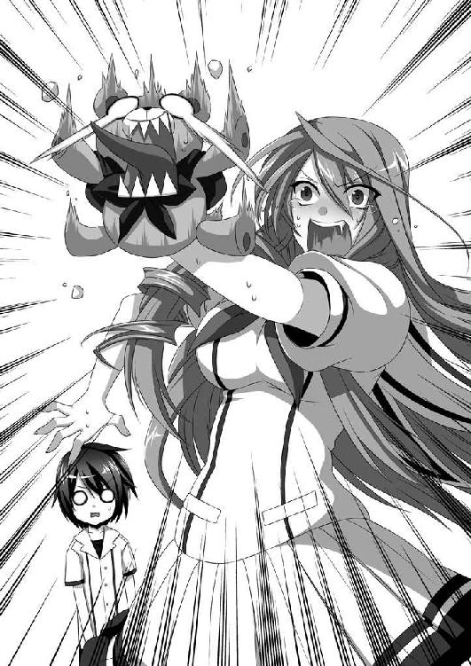
「............うわ」
僕はドン引きした。
ガク太くんはもちろんただのぬいぐるみだから、今起こった一連の出来事は全て、神楽井先輩の腹話術による一人コントとなる。
こんな酷い下ネタをやる人だと思わなかった......。
「ま、待ってくれ籠島。そっと部屋から出て行こうとしないでくれ！」
「......あの、さっき、僕は神楽井先輩の友達だって言いましたけど、やっぱりあれ、メル友にしておいてください」
「やんわりと距離を置かれた！」
「神楽井先輩のことは嫌いじゃないんですけど......。僕、品行方正に欠ける人とは付き合わない方がいいって、お母さんから言われてますんで......」
「ああ！ 違うんだ、違うんだよ籠島！ さっきのは不慮の事故なんだ。私は後輩に下ネタを見せつけて喜ぶような女じゃない！ むしろ下ネタは苦手だし......その......。だから、卑猥な言葉を連呼して喜ぶような変態じゃないんだ！」
「え。違うんですか？」
「............ふ、ふふふ。ふはははははっ！ ああそうさ。私は卑猥な言葉を連呼して喜ぶ痴女だぁっ！ ふははははは──っ！」
心に深刻なダメージを負って、狂ったように笑い出した神楽井先輩を見つめながら、僕はそっと部室のドアを閉めた。
今日のことは、なかったことにしてあげよう。
第六章 クリアの大冒険
土曜の午後、僕と織野さんは、駅前にあるイタリアンレストランのテラスにいた。
今日は二人で映画を見に来ていて、今はその帰り。
昨日、織野さんが『映画サークルのコネで前売り券が手に入ったんだけど、よかったらどう？』と誘ってくれたのである。
僕に対して、自分が映画サークルの人間だと強くアピールするためにわざわざチケットを用意したみたいだったけど、それは考え過ぎというものだろう。織野さんも純粋に楽しんでいるようだったから、そんなはずがない。
料理を全て片付け、コップの水を呑みほしてから、僕は問う。
「これからどうしようか。帰るには、まだ早いと思うけど」
「そうねえ」
顎に手を添えて考え込む。女の子っぽい、かわいらしい仕草だった。笑みを隠しきれない口元を見ていると、こっちの気分も暖かくなってくる。
そこに──無粋な、携帯の振動音が鳴り響いた。
「......あ」
一瞬にして、織野さんの表情が曇った。
バイブレーションのパターンで、全てを察したかのように。
「出ないの？」
「......出る。ごめん......」
席を立ち、少し離れた場所で電話に出る。わずかに言葉を交わした後、申し訳なさそうな顔になって戻って来た。
「ごめん......。その、急用ができて、帰らないといけないの」
「え、本当？ ......そっか。それならしょうがないね」
「ごめんね......」
「いいって。急用なら、しょうがないよ」
本当に辛そうな表情で謝って来るので、こっちの方が申し訳なくなってしまう。
「......疑わないの？」
ぽつり、と。
織野さんの口から、言葉がこぼれた。
「疑うって、どういうこと？」
僕には、質問の意味がわからなかった。
「私が嘘ついてるかもしれないじゃない。急用とか、お腹痛いとか......」
心が漏れ出しているような細い声に、僕はさらに首を傾げた。
「どうして、織野さんが僕に嘘をつくの？」
「......なんでもないわ。変なこと聞いて、ごめん」
それじゃ、と織野さんが駆け足で去って行く。
その背中がとても頼りなく見えて、
世界の命運は預けられないほどに儚く見えて、
「織野さん！」
つい、呼び止めてしまった。
「待ってるから」
え、と織野さんが振り返る。
「待ってる。用事が終わるまで、この辺で待ってるよ。今日はもう少し、織野さんと遊びたい気分なんだ」
「......うん。ありがとう！」
曇天だった顔をわずかに晴らして、織野さんは走り出した。
さっきより、少しばかり軽い足取りで。
「用事ってなんだろうな......」
ちょっと考えて、でもすぐに、僕は考えることを止めた。
ゲームセンターに行ったりデパートに行ったりして、僕は時間を潰した。
途中、神楽井先輩から電話が掛かって来た。
なにかと思ったら、実家に帰るという報告だった。
『というわけで、しばらく電話が繋がらないが、気にしないで欲しい』
「実家、圏外なんですか？ もしかしてすごい田舎だとか......」
『いや、そういうわけじゃないんだが......。まあ繋がらないものは繋がらないんだ。けっこう遠いところだから』
「どこなんですか？」
『この時代で言うと確か......渋谷辺り、だったと思う』
「けっこう近いじゃないですか」
『空間的には近いんだが、時間的には......、ああ、いいや。なんでもない』
神楽井先輩の声には、以前にはなかった迫力と余裕があった。死闘を乗り越え格段に成長した戦士のように、凄みが増している。
なんでも、実家に戻るのは仕事にケリがついたから、らしい。
......なぜだろう。山場を見逃した気がする。新必殺技とか、ラスボスとの掛け合いとか、兄妹愛のドラマとか、そういうのを全部見逃してしまったような。
『まあ、一週間くらいしたら、戻ってくるよ』
そう言って、神楽井先輩は電話を切った。
あの人、学校サボってまで実家に帰って、なにするんだろう。
そんなことを考えながら、さらに時間を潰す。
織野さんが戻って来たのは、午後六時を過ぎたころだった。
「籠島くん！」
駅前広場のベンチに座った僕が、読んでいたコロコロから顔を上げると、織野さんが小走りでやってくるところだった。
「......本当、ごめんね。待ったでしょ」
「大丈夫だよ。前にも言ったけど、退屈は嫌いじゃないから」
読んでいたコロコロを鞄に詰め......あれ、入らない......。やっぱりコロコロはでかいな。でも入らないじゃ、済まされないんだよ！ ふん。ふん。ふん！
ビリっ！
「......鞄、買いに行く？」
「............うん」
すっかり暗くなった住宅街を織野さんと歩く。
本当は家まで送ってあげたかったのだけど「私の家は、一般人には教えられないの......。つ、つまり、お父さんがすごく厳しいから、男連れはちょっと」というので、大変心苦しいが、普通とは逆に僕が送ってもらうことになった。
「こんなところに、公園あったんだ」
そよ風公園の近くを通りかかったとき、織野さんが言った。
「最近じゃ遊ぶ子供も少なくなってきた、寂れた公園だけどね。潰して駐車場にしようっていう話も出てるみたいだよ」
「そう。なんとなく悲しいわね。そういうのは」
「僕も悲しいよ。ここは、思い出の場所だから」
「思い出？」
「うん。小学生のころ、ここで素敵な人に出会ったんだ」
ちくり、と。マチ針で刺したような切ない痛みを胸に感じながら、僕は無人の公園を通り過ぎようとした。
そのとき、右腕のミサンガが薄く発光した。が、すぐに消える。
「......ん？ なんだ、これ？」
『そよ風公園』と書かれた石碑の脇に、チョークで落書きがされていた。円と四角を組み合わせた、複雑な図形。
「なにかしら、これ？ なんだか、魔法陣みたい」
「きっと子供のイタズラだよ」
まったく、公共物になんてことをするんだ。公園はみんなのものだっていうのに。
公共福祉の精神がみなぎってきた僕は、織野さんからポケットティッシュを借りて、白い落書きの消去を試みる。
軽く拭いて、落書きの一部が欠けた瞬間、
バキンっ！
と、ガラスが砕けたような音がした。
「な、なんだ!?」
驚いて、きょろきょろと辺りを見渡す。
すると、そよ風公園の中に、さっきまでは誰もいなかったはずなのに、栗栖ちゃんが倒れていた。
「栗栖ちゃんっ!?」
僕と織野さんは、公園の中央に走った。
「......あ、籠島先輩......。それに、織野先輩も......。あ、そっか。『結界』、壊してくれたんですね......。よかったぁ。内側からじゃどうしようもなくて、困ってたん、です」
栗栖ちゃんはか細い声で返した。体はぐったりとしていて、呼吸は浅く短い。顔も青ざめている。
「うわ。すごい熱だ......。織野さん、救急車を！」
「わ、わかった」
「......大丈夫、です」
栗栖ちゃんが織野さんの携帯に手を伸ばし、１１９番への通報を防いだ。
「ちょっと、魔力使い過ぎただけですから......。結界をなんとか破壊しようとして、だいぶ魔法を無駄打ちしちゃって......。こっちの医術じゃどうにもならないですから......。本当に、大丈夫です。しばらく休めば......」
うわごとのように呟いて、栗栖ちゃんは目を閉じた。
一瞬焦ったけれど、唇から寝息が洩れていることに気づき、ほっとした。
「どうしよ......。病院はダメだって言ってたから、とりあえず僕の家に......」
織野さんの方を向くと、
「......魔力......結界......。それに、魔法......？」
彼女は、僕が聞き流した全ての事を、気に留めているようだった。
僕の家は二階建ての一軒家。両親が海外で働いているので、一人で生活している。両親がいなくて助かったと、今日初めて思った。衰弱した女の子を連れ込むなんて、親がいたらどんな騒ぎになっていたことか。
「栗栖ちゃんの様子はどう？」
救急箱やタオルを持って階段を登り終えると、ちょうど織野さんが僕の部屋から出てきたところだった。
「ん。まだ辛そうだけど、さっきよりは落ち着いてるわ」
「そっか......」
少し迷ったけれど、栗栖ちゃんには僕のベッドで寝てもらった。母さんのベッドという選択肢もあったけれど（父さんのベッドという選択肢はない）、長い間使ってないから布団が押入れに入れっぱなしなのだ。ベッドメイキングの間、病人を待たせるのは忍びない。
「......あれ？ 織野さん、なんで鞄持ってきたの？」
手に握られている鞄に気づき、僕は言った。わざわざ持ってこなくても、僕の部屋に置いておけばいいのに。
ん？ そもそも、なんで部屋の外に出てきたんだろう？
もしかして、もう帰るのかな？ まあ時間が時間だし、しょうがないけれど。
「......なんで鞄持ってきたかって？」
織野さんが低い声で言い、ぽんぽん、と自分の鞄を叩く。
よく見ると、心なしか鞄がさっきよりも膨らんでいる気がした。
「部屋にこんなもの置いとくからでしょ！」
顔を真っ赤にして怒鳴りながら、勢い良く鞄を開けた。
そこに入っているのは......うん、まあ、いわゆるエロ本だった。卑猥な表紙の本が五、六冊、鞄にびっちりと詰まっている。
「織野さん......。なんでそんなの持ち歩いてるの......？」
級友の意外な一面を知ってしまい、僕は恐れおののいた。
「あ、でも......うん。僕なら、大丈夫だよ。うん。そうだよね。女子も、そういうのって興味あるよね......」
「なっ！ ち、違うわよっ！ ほら、これをよく見なさいって！」
「よく見なさい!? え、その本を!? どうしちゃったの織野さん!?」
「ああ、もうっ！ いいからよく見なさいってばっ！」
頭を鷲掴みにされて、エロ本が詰まった鞄に突っ込まれた。
恥ずかしかったけれど、仕方なく言われた通りよく見てみる。
............あれ。
なんだか、全部見覚えがあるような......。
「ていうか、僕のじゃん！」
し、しまったあっ！
エロ本片付けるの忘れてた！
うわーっ！ 「ここが僕の部屋だから先に入ってて。僕、タオルとか氷とか取ってくるから」なんて言ってる場合じゃなかったんだ！
同級生（異性）にエロ本を片付けられてしまった。
お母さんにも片付けられたことないのに！
「ベッドの下とかならまだしも、部屋の中に普通に転がってるんだもの......」
いや、だってさ。
男子がエロ本を隠すのは家族に見つかるのを防ぐためであって、だから一人暮らしをしている僕は隠す必要がないし、ていうか男子高校生が一人暮らしをしたら十中八九こうなるから！
と、言い訳したいのだが、織野さんが怒りや乙女の恥じらいで顔を紅潮させたまま睨んでくるので、なにも言えなかった。
「あのね、籠島くん。こういうのを見ることが悪いっては言わないわよ。でも、部屋に女の子を入れるんだったら、ちゃんと見えないところにしまってもらわないと、こっちとしても困るから......」
「やめて！ 優しくだけはしないで！」
お姉さん口調でたしなめられるのは本当に辛い。
ほっぺたをひっぱたかれた方がまだマシである。
「まったく......。まあ、栗栖ちゃんには見られてないから安心して。一瞬で片付けといたから」
「......それはどうも。......でも、一瞬で片付けるなんてすごいね。結構散らかってたと思うけど、いったいどうやったの？」
尋ねると、織野さんは悔しそうに拳を握りしめ、
「............よくもこんなくだらないものに、能力を......」
と、小さい声で恨みがましく呟いた。よく聞き取れなかったけど『またつまらぬものを斬ってしまった』的なことを言っていたような気がする。
はあ、と織野さんは大きくため息をつく。
「ま、ちょっとは安心したけど」
そして、にんまりと意地悪く微笑んだ。
「籠島くんも、ちゃんと男の子してるんだね」
「う、うぅ」
からかわれてしまい、口ごもる。
そりゃ、僕は未だにコロコロ読んでるし、少年マガジンを立ち読みするときに表紙がグラビアだと躊躇してしまうようなチキンだけど、それでも立派な男ですから！
「ふーん。こういうのが好きなんだー」
「ストップストップ！ もう止めて織野さん！ 本当にごめんね！」
一つ一つ検証し始めようとした織野さんに、思いっきり頭を下げた。もういっぱいいっぱいである。
織野さんはやれやれと肩をすくめる。
「それじゃあ、これ、ちゃんと隠してきなさい」
そう言って、僕にエロ本を渡した。僕はすぐさま父親の部屋にそれを持って行き、オーソドックスかなと思いながらも、ベッドの下に隠し、自分の部屋に戻った。
「それで、籠島くん」
ドアの前で、織野さんが言う。
打って変わって真面目な口調で。
「栗栖ちゃんの体を拭いてあげたいから、しばらく部屋に入らないでもらっていい？」
「ああ、そっか。栗栖ちゃん、けっこう汗かいてたもんね。うん、わかったよ」
僕は頷き、持ってきたタオル等の看病グッズを全て織野さんに渡した。
「覗いたりしたらダメだからね」
「わかってるよ」
「どうかなー？ 籠島くん、あーんなエッチな本いっぱい持ってたし」
うぐ。まだ引っ張るのか、それ。
このままここにいるとからかわれ続けそうな気がしたので、僕はそそくさと階段を降りた。後ろからは、パタン、とドアを閉める音がした。
「さて、と。これで籠島くんはしばらく入ってこないと思うわよ、栗栖ちゃん」
「ありがとうございます。すいません、いろいろと手伝わせちゃって......」
「気にしないで。それにしても、魔法、か......。未だに信じられないわね」
「そんなこというなら、織野先輩だって......。びっくりしましたよ。まあ、神楽井先輩ほどじゃあないですけど」
「神楽井先輩はあくまで私の予想だけどね。予想っていうか、予感っていうか。まあどっちにしても、私達はそのくらいがちょうどいいのよね。お互い、事情もあるだろうし」
「......やっぱり、風格みたいなものが出てきちゃいますよね、私達」
「そうね。わかる人には、わかっちゃうのかも......」
「本当、うっすらとですけど......あ、すいません、織野先輩。そこのカード、少し位置がズレてます」
僕の部屋で二人がなにかを話しているような気がしたけれども、それは階段を踏みならす自分の足音で、ほとんど聞こえなかった。
さて。お粥でも作ってあげようかな。
「栗栖ちゃん。卵と梅、どっちのお粥がいい？」
「きゃあ──っ！」
「なに入ってきてるのよ、籠島くん！」
「ご、ごめんっ！」
「うぅー。籠島先輩のエッチっ！」
「体拭くって言ったでしょ！」
「だって、もう拭き終わったと思って......」
「今拭き始めたところよ！」
「じゃあ今まで何してたの？」
「それは......ああもう！ いいから出ていきなさい、この変態！」
「わ、わかったよ......本当にごめんね栗栖ちゃん」
「うぅ......私はなにも入ってないシンプルなお粥が好きです」
「......了解」
というわけで、ただいまお粥作成中。
卵や梅で誤魔化さない、ただ米の味のみを追求した、お粥。
ふっ。腕の見せ所だな。
自称、料理ができる男の僕としては、負けられない戦いだ。
えっと......あ、塩切れてる。んじゃ砂糖でいっか。見た目似てるからなんとかなるだろ。お米はいつものように洗剤でしっかりと洗ってと、あ、ジョイが切れてる。んじゃシャンプーで代用しよう。そして全てをフライパンに詰め込んで、油とオレンジジュース、後は隠し味でいろいろと入れて、ごとごと煮込んだら、きっとお粥になるんじゃね？
「......なにこの匂い？」
振りかえると、織野さんが階段から降りてきたところだった。
顔をしかめ、異臭に耐えるように鼻を抑えていた。
「あ、栗栖ちゃんの様子はどう？」
「気持ち良さそうに寝てるけど......。それより籠島くん、いったいなにをしてるの？」
「お粥作ってるんだよ」
「............」
無言のまま、僕の持っていたフライパンを奪い取り、中身を全てゴミ箱に捨てた。
「なんてことするんだ！ 僕のお粥が！」
「こんな紫色をしたお粥は存在しないわよ......。ちょっとどいて。私が作るから」
織野さんは僕からエプロンまでも奪い取った。慣れた動作でエプロンを装着し、ヘアゴムで髪をひとつにまとめた。
その一連の動作を見て、僕はこっそりと拳を握りしめた。
イエスっ。なんというか、ぐっと来た。
ザ・料理のできる女だ。無性に結婚したくなった。
「ねえ。炊飯器はどこ？」
「すいはんき？ なにそれ？」
首を傾げると、凄まじい瞳で睨まれた。
「なんで炊飯器がないのに米があるのよ！ 普段どうやって食べてるの!?」
「普通だよ。スナック感覚でそのまま食べたり、牛乳に入れてシリアルっぽく食べたり」
「............」
「もちろん、ちゃんと洗ってから食べてるよ。洗剤使ってね」
「......料理ができない女キャラが萌えるっていうのは少しわかるけど、料理ができない男っていうのは、なんの魅力もない......」
料理ができない男？ 誰だろうそれは。
眉間にしわを寄せたまま、織野さんはてきぱきと料理を始めた。
「ねえ。鍋ならある？」
「そこの戸棚に。こないだ、通販で最新式の圧力鍋買ったんだよねー」
「......宝の持ち腐れ」
織野さんは米を水だけでさらっと洗い、戸棚の奥から発見した土鍋（お粥は土鍋の方がおいしくできるらしい）に米を入れ、ことことと煮込む。
「籠島くんの普段の食生活、いったいどうなっているの？ 確か、自炊してるって言ってなかったっけ？」
「毎日が創作料理さ！ 筋書きのないドラマならぬレシピのない調理。なにができるか、僕にもわからない。これぞまさしく味のびっくり箱や！」
「......うざ」
「まあ、だいたいおいしいのができるんだけどね」
「味音痴って初めて見たわ」
「失敬な。何食べてもおいしいだけだよ」
「それを世間では味音痴って言うのよ」
「むう」
いつになく織野さんが毒舌だった。毒舌じゃなくて正しいことを言われてる気がしたけど、それは僕の被害妄想だろう。
台所で料理をする織野さんの姿は、家庭的で温かみがあって、見ているだけで心が癒されるような光景だった。
そのまま、土鍋で煮込むこと数十分。途中織野さんが何度か味見をし、塩や薬味で味を調え、最後に刻んだ細ねぎを加え、お粥は完成した。
ありがたいことに、僕の分まで用意してあった。栗栖ちゃんの分は病人用で僕のは普通用、と織野さんが説明してくれたが、僕には違いがさっぱりわからなかった。
テーブルに向かい合って座り、輝くような米粒達にレンゲを入れ、口に運ぶ。
「うわ。すごくおいしいね」
「ありがと。ま、何食べてもおいしい人に褒められてもうれしくないけどね」
「キツいなあ」器と口の間でレンゲを往復させながら、苦笑した。「でも、僕はそっちの方が幸せなんじゃないか、って思うけどね」
「どういうこと？」
「たとえばさ、グルメで舌が肥えていて、超高級品じゃなければおいしいと思えない人と、味音痴でなに食べてもおいしいと感じる人、どっちが幸せかって聞かれたら、それは後者だと思わない？」
「なるほどね。言いたいことはわかるわ」
でも、と織野さんの眉が下がる。
「......それは、馬鹿の方が幸せってこと？ 世界の本質も醜さも、そういう一切合財に無頓着で無知な人間の方が、幸せだって言いたいの？」
「嫌な言い方をすれば、そうなるかも、だけど......」
織野さんの口調に妙な迫力があって、僕は気押される。
「知らぬが仏って、言いたいのね......」
じわり、と。織野さんの顔に悲痛な色が現れた。悲しみをぐっとこらえるように、唇を噛んでいる。
「織野......さん？」
「......そろそろ、帰るわ」
手早く帰り仕度を始めた織野さんを、僕は見ていることしかできなかった。
結局、栗栖ちゃんは泊まって行くことになった。男子高校生としてはテンションが上がらなければならない状況なのかもしれないが、まだ少し熱が残っている栗栖ちゃんを見ていると、そういう変な気持ちは微塵も起きなかった。
一緒の部屋で寝るわけにもいかなかったので、僕は、僕の部屋の隣にある父さんの部屋で寝ることにした。
「......ん？」
夜中、隣の部屋から聞こえてきた声で、目が覚めた。
『ま、頑張ってるみたいでなによりだわ、クリア』
「うん。なんとかやってるよ、ママ」
『本当、苦労かけるわね。私が敵を逃がしちゃったばっかりに』
「大丈夫だよ。学校は留学扱いにしてもらえたし、それに、こっちの世界には前々から来てみたいと思ってたから」
『ならよかった。それで、どう？ パパが生まれ育った世界は？』
「......春ごろ、来たばっかりのころは戸惑うことが多かったけど、もうだいぶ慣れたよ。こっちの世界もそっちの世界も、本質的にはあんまり変わらないから」
『ふーん。ていうと？』
「いい人もいれば悪い人もいる。魔法があってもなくても──世界が変わっても、人間は変わらないんだね」
『あらまあ。私の娘のくせに、ずいぶんと悟ったようなこと言うのね。私があんたくらいのときなんて、なんにも考えずに暴れまわってたわよ』
「ママを反面教師にしたからね」
『言うじゃない。......そうねー。本当、あんたは私には似てないわよね。素直でおしとやかで。やっぱりパパに似たのかもね』
「......こないだ、パパのお墓に行ってきたよ」
『そう。それじゃあ、やっとパパとの初対面を果たしたってわけね』
「うん......」
『......あんたのパパはねえ。けっこうなヘタレだったのよ。弱気で慎重で、奥手で。私はいっつもイライラしてたわ』
「でも、いざとなると頼りがいがあって、熱い男だったんでしょ？ 何回も聞いたよ。ママって本当にパパが大好きなんだねー」
『うっさいわ。ま、そのカッコいいパパも、あのトガラグールの激戦で、私を守って──いいや、私とお腹のクリアを守って、死んじゃったんだけど』
「......その事件のせいで、パパは命を失って、ママは教団を追放されたんだよね。本当なら英雄と呼ばれてもおかしくないのに、下っ端の、汚れ仕事ばっかり任されてる」
『いいのよ。地位とか名誉とか、そんなものはいらないの。私もパパも、守りたいものだけを守りたかった。ただ──それだけ』
「......うん」
『さーて。んじゃ、そろそろ本題に入りますか』
「え、本題あるの？ ママのことだから、暇潰しに念話してきただけだと思ってた」
『クリア──帰って来なさい』
「......え？」
『あんたが今追ってる敵──『赤き烏』を、教団の上層部が目の敵にしててね。あんな小さい盗賊団にいつまでもてこずってるって、世間に思われたくないみたいなのよ。だから、討伐隊を組んで、一気にそっちの世界に派遣するつもりみたい』
「そんな......」
『早い話が、学生であるクリアの仕事はもうないってこと。だからさっさと帰って来なさい。......悪かったわね、私の尻ぬぐいさせて。私がそっちに行ければいいんだけど、教団を追放されたときに、そっちの世界に行く資格も剥奪されたから』
「で、でも......。私、教団の人達には任せたくないよ。あの人達は、こっちの世界を、全然大事にしてないじゃない。トガラグールの激戦のときだって......。教団の決定が気にくわなかったから、ママはパパと一緒に戦ったんじゃないの......」
『......クリアが、そっちの世界を大事に思うのは、あんたがハーフだからよ。こっちじゃほとんどの人間が、そっちの世界を毛嫌いしている。中世の時代、「魔女狩り」が生んだ禍根は、今も根強く残ってるわ』
「それは、わかってるけど......」
『教団の討伐隊に任せれば『赤き烏』なんてすぐに捕まるわ。まあ、その犠牲として町のひとつくらいはなくなるかもしれないけど、それはいわゆる尊い犠牲』
「............」
『帰ってきなさいよ、クリア。あんたが私達みたいになる必要はないのよ。あんたは、もっと上手く生きなさい』
「い、嫌だ！」
『......クリア』
「私は、こっちの世界もそっちの世界も同じくらい大切......。学校でね、すごく優しい先輩達に会ったんだよ。今日も助けてもらったの。それで、こっちの世界もあったかいんだなあって思った。ねえ、ママは、パパと一緒に戦ったことを後悔してるの？ してないよね。わかるよ、私、ママの娘だから」
『............』
「世界が変わったって人間は変わらない。だから、私はどっちも守りたい。片方を犠牲にして片方が平和になっても、全然嬉しくないよ。私は、パパとママの娘だから。世間で認められてなくても、パパとママは、いつだって私の誇りなんだよ！」
『......ふふふふ』
「え、ママ......？」
『あっはははははは！ そうこなくっちゃね。さすがは私の娘だわ』
「へ？」
『そう言うだろうと思ってたわよ。だから、教団に手を回して討伐隊の件はなしにしてもらったわ。ふふふ。これでも、まだ人脈はけっこう残ってるのよねー。教団内にも話のわかる奴はいるってこと』
「もぉ、ママ！ 私を試したの！」
『そうよ。子供を試していいのは親だけなんだからね』
「うぅ......」
『やっぱり、あんたはパパに似てるかもね。いざとなると熱いところがそっくり。ふふ。男見つけるときは、私みたいにワイルドな奴にした方が相性いいんじゃない？』
「そうかなぁ......。んー。先輩は、どっちかっていったら、温和なような......」
『ん、なに？』
「う、ううんっ、なんでもないっ！」
『そう......。クリア。あんたの好きなように生きなさい。私の後を追うもよし。違う道を行くもよし。ママは──そしてパパも、いつだってあんたの味方なんだから。頑張りなさいよ。クリエスティア・クリムゾン・クリードエンデ・クリストゥフーア・栗栖』
「うん！」
一枚の壁を隔てて、流れてくる言葉の響き。
僕は布団を頭までかぶって、嘆息した。
「......栗栖ちゃん、寝言すげえな」
ほとんど聞きとれなかったけど、母と娘の壮大なドラマがあったように思う。
まあ、かわいいから許してあげよう。むしろチャームポイントになるかもしれない。
寝言女子......いや、やっぱりないな。ちょっとキツい。
でも、それでも、心が温まるような気分になったのは、なぜだろう。
第七章 わからない
翌朝、栗栖ちゃんは僕より先に目を覚ましていた。
「あ、おはようございます。籠島先輩」
階段を降りた僕に、明るい笑顔を見せる。キッチンに立ち、エプロンをして、なにかを調理していた。
「おはよう。もう体は大丈夫なの？」
「はい。おかげさまで。本当にありがとうございました」
「お礼なら織野さんに言ってよ。お粥作ったのも織野さんだしね」
「そうですね。学校に着いたら真っ先にお礼しときます。それはそうと、今日の朝食は私が作りますから、籠島先輩はのんびりとしていてください」
「本当に？ それじゃ、お言葉に甘えようかな」
「決して、籠島先輩の料理の凄まじさを織野先輩から聞いたからじゃありませんから」
「......そこは念を押さなくていいと思うよ」
織野さんも手厳しい。
ていうか、僕の料理ってひどかったんだな。今まで誰かと比べる機会がなかったから知らなかった。これはきっと、人は他人と比較することでしか自分の価値を測ることができない、みたいな哲学的な問題なんだろう。
「母さんに習ったはずなんだけどなぁ......」
テーブルに座って、栗栖ちゃんを見守る。織野さんと比べるとちょっとたどたどしいところがあったけど、そこがまたかわいらしくもあった。慣れないことを一生懸命頑張ってる、という感じがすごくいい。
マジでこんな妹が欲しくなってきたなあ。
両親に子作り頼んでみようかなあ。あの二人、未だにめちゃめちゃ仲いいし。父さん、六十五歳なのに現役だって言ってたし。
「できました。ご飯とお味噌汁。おかずは卵焼きと鮭の切り身です。こっちの料理も、ちゃんと勉強してるんですよ」
ご飯が出てきたということは、織野さんはご飯を炊いてから帰ってくれたようだ。ふむふむ。すると、あそこにある丸っこいマシーンが炊飯器とかいう代物なのか。今の今まで知らなかったな。
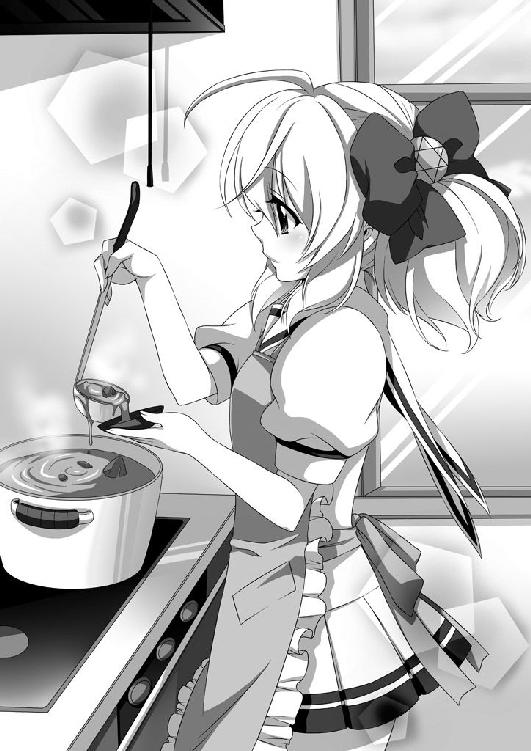
「いただきまーす」
「いただきます。......ん？ 栗栖ちゃん。この卵焼き、色が黄色いんだけど大丈夫？」
「......籠島先輩はいつも何色の卵焼きを食べてるんですか？」
「あ。この鮭おいしいね。栗栖ちゃんは知ってる？ 鮭って、身はこんなに赤いけど白身魚なんだよ。身が赤いのはエサとして食べる甲殻類に含まれてる色素のせいなんだ。イクラが赤いのも、その色素のせいなんだよ」
「......知識と技術は別物だということを、私は今、もぉーれつに実感しています。蘊蓄じゃおいしい料理は作れないのですね......」
楽しくほのぼのと朝食を続けていると、インターホンが鳴った。
来客は、織野さんだった。
「どうしたの、こんな朝早くに？」
「ごはん作りに来たのよ。栗栖ちゃんに、籠島くんの料理は食べさせるわけにはいかないからね」
そう言って両手に持った袋を上げてみせる。信用がない、というか、心配の種とされている僕だった。
「あ、栗栖ちゃん、もうよくなってたのね」
「織野先輩のおかげです。本当にありがとうございました」
「いいのよ。それよりも、これ。栗栖ちゃんが作ったの？」
「......はい。織野先輩が、籠島先輩の料理の凄まじさを教えてくれたので」
「わかってくれてなによりだわ」
「......マジでやばいですよね」
「......ええ。マジでやばいのよ」
僕に聞こえないようにひそひそ話をする二人。ちょっと疎外感。
「でも、せっかく材料買ってきたのに、無駄になっちゃったわね」
「それなら、一緒に作りましょうよ。私、織野先輩に料理教わりたいです。あのお粥、すっごく美味しかったですから」
「いいわね。そうしましょ」
「あ、じゃあ僕も......」
は？ という顔をされた。チンパンジーに英会話を教えるように頼まれた人は、きっとこんな顔になるのだろう。
どうやって相手を傷つけないように断ろうかと話し合ってる二人の優しさが辛くて、僕はこっそりとキッチンを出て、リビングで朝のニュースを見始めた。
お、やったぞ。牡牛座、今日は二位だ。
パスタやオムライスまで出てきた朝食を、男のプライドでなんとか詰め込んだ。
制服に着替えてから、三人で登校する。
いや、なんだこの両手に花状態は。ここに神楽井先輩がいれば完璧だな。
織野さんと栗栖ちゃんは僕の一歩前を歩き、会話に花を咲かせていた。昨日の夜から、この二人の距離がぐっと縮まった気がする。そんな二人を見ていると、僕としても幸せな気持ちになる。
けれど、どうしてだろう。
昨晩から、織野さんの表情がかすかに暗い。笑っていても、どこか悲しそうだ。
栗栖ちゃんや神楽井先輩は、自分の進むべき道を見つけたかのように晴れやかな表情をしているのに、織野さんだけ、まだ迷っているように見える。
僕らしい『気のせい』だといいんだけど。
そのとき、楽しそうに話していた栗栖ちゃんの顔に緊張が走った。
「......え。この魔力は......。昨日、私を結界に閉じ込めた人の......」
いつも通り意味不明なことを呟き、
「す、すいません。私、先に行きます！」
申し訳なさそうに頭を下げ、猛スピードで駆けていった。
「......いったい、どうしたんだろうね」
疑問のままに首を傾げ、横を向いた。
「本当にわからないんだね」
織野さんは、侮蔑するような目で僕を見ていた。
呆れ果て、そして諦めたように。
「あ、え......。どういう意味？」
「......ごめん。先に行く」
顔を伏せ、足早に歩き出した。僕は地面に足が縫い付けられたように動けない。
一歩が──踏み出せなかった。
本当にわからないんだね。
何度も何度も、織野さんの言葉が頭を駆け巡る。
わからない？ わからないのか、僕は？ なにが？ なにがわからない？
どうして僕は、なにもわからないんだろう。
まるで呪いにでもかかったみたいに、気づかない。
だって、だって、だって──あるはずない。いるはずない。
だってあの人が──
なにかが、僕の脳内に絡みついている。鎖となって僕の思考の発展を妨げている。
受け入れることを──拒否している。
あれ？
「......いや。いやいや。アホくさ」
正義の味方なんて、いるはずがないじゃん。
自分で言うのもなんだけど、僕はだいぶ楽観的な性格をしていると思う。物事は深く考えないようにしているし、わからないことをわからないままに放っておいても大して気にはならない。
対人関係においても、相手の嫌がることはしないように気をつけている。相手の秘密は無理に探ろうとも思わない。
そういう男がかっこいいと、あの人に教えてもらったから。
「神楽井先輩......。いませんよね。失礼しまぁす」
昼休み、一人になりたくてコン部の部室を訪れた。
織野さんはずっと近寄り難いオーラを発していて、話しかけることはできなかった。
怒らせてしまったというか、呆れられてしまったというか。
それだけならまだいい。問題なのは、僕が、織野さんがなにを考えているか全くわからないことだ。
鈍い、じゃ片付けられないような気がする。
頭の中の常識という名のフィルターが、異常なほどに強固になっている。
「......あれ？ ガク太くんだ」
テーブルの上に、ガク太くんが置いてあった。神楽井先輩が忘れていったらしい。お気に入りのようだったから、てっきり実家に持って帰ると思っていたのに。
僕はガク太くんを手に取り、その顔をよく見る。
なにか、いつもと違うような。
まるで人格のデータを抜き取られたかのように、生気のない顔つきをしている。いや、ぬいぐるみなんだから生気がなくて当たり前か。
手に装着してみる。もちろん、神楽井先輩のように酷い下ネタはやらない。
『やあ。僕、ガク太！』
高い声を無理に出してみたが、やはり難しい。神楽井先輩のすごさを改めて実感した。
『諦くん。そんな暗い顔をして、いったいどうしたの？』
「ちょっと、辛いことがあってね。聞いてくれるかい、ガク太くん」
『もちろんだよ。僕はいつだって諦くんの友達だからね』
......かなり恥ずかしいぞこれ。あの先輩はよくこんな寂しいことができるな。
まあでも、せっかくだからもうちょっとやってみよう。少しは心のわだかまりが解けてくれるかもしれない。
「実は、友達と喧嘩しちゃったんだよ。......喧嘩っていうほどのものじゃないのかな。すれ違いっていうか......。いっそ喧嘩にでもなった方がまだいいのかもしれない」
『喧嘩するほど仲がいいってこと？』
「その逆だね。喧嘩するほどは、仲良くない関係だったみたいだよ。喧嘩にならないことが問題のような気がするんだ」
『諦くんの言ってること、難しくてよくわからないよ』
「はは。いいよそれで。僕自身も、よくわかってないで言ってるから。でもね。なんとなくなんだけど、僕と織野さんは喧嘩できないと思うんだよ」
『どうして？』
「僕はともかく、織野さんには、絶対に僕に言ってはならないことがあると思う」
『それはなに？』
「......わからない」
『なんだそりゃあ』
「わからないものはしょうがないよ。でも、わかっちゃいけない気もするから、これでいいのかもしれない。たぶん織野さんは──あと、栗栖ちゃんと神楽井先輩も、僕になにか隠してることがある、のかも......」
『ええ！ 鈍いことで定評がある諦くんがそんなこと言うなんて、びっくりだよ』
「僕だって驚いてるよ。でも、どうしてもダメなんだ。どうしても、思考が発展しない。話が進まない。これ以上、なにも気づいてはいけない気がする。なにか、呪いのようなものが、僕を縛りつけるんだ」
『気のせいじゃない？ 諦くん、気のせいで済ますの得意だったはずなのに、いったいどうしちゃったの？』
「......そうだよね。きっと、気のせいだ。気にしない気づかないきっと気のせい。僕はそういう風に生きて行こうって、決めたんだった」
『あの日に、だよね』
「そう。あの日に......。って意味深っぽく言っても、たいしたことがあったわけじゃないんだけどね」
『初恋と初失恋の日だよねー』
「あ、言うなよ。いじわるだな、ガク太くんは」
『ごめんごめん』
「いいや、許さないぞぉ」
『うわあ。諦くんが怒ったあ。逃げろー』
「待て待てー。逃がさないぞー」
『きゃー。助けてー』
「あはは。待てよぉ、こいつぅ」
ドアのところに織野さんが立っていた。
い、今の見られた!?
手につけたぬいぐるみと一人で戯れているところを見られた！
人として終わった！
「......もう見ていられない......」
織野さんボロ泣き。床に手をついて、ぼたぼたと涙を流す。
「ごめんなさい......。私、ちょっとイライラしてただけなの......。それで籠島くんに八つ当たりしただけなのに......。それが、きみの心をここまで壊しちゃうなんて......」
「うわあ！ 謝らないでよ織野さん！ 違うんだよ。これはただ神楽井先輩の真似して腹話術の練習してただけだから」
神楽井先輩の気持ちがよくわかった。
これは、辛い！
「あの人は腹話術じゃなくて......なんでもない。ああ......涙が止まらない......」
「やめて、そんなかわいそうな人を見る目で見ないで！ 貰い泣きしそうだよ！」
「全部私が悪かったわ。ごめんなさい。だから、元気を出して、お願い」
「仲直りできたのに嬉しくない！」
まあ。
もちろん、こんなコメディなやり取りで仲直りできるはずもなく、一週間経っても、僕と織野さんの関係は気まずいままだった。
挨拶は交わすし、雑談もするけど、以前のように楽しくない。
距離を置かれているのとは、また違う。
むしろ逆。
織野さんが、僕との距離を詰めようとしている──気がする。
今まであった心地のいいラインを踏み越えて、もう一歩、僕の方に踏み込む。あるいは、僕を織野さんの側に引きずり込む。そんなことを考えている風に見えた。
戸惑いや迷いが、体から滲み出している。
どうしたらいいのかわからない、という表情を見せられて、僕としてもどうしたらいいのかわからなかった。
テンションの上がらない一週間だった。
織野さんとは微妙な感じだし、神楽井先輩はまだ実家から帰ってこないし、栗栖ちゃんは二人っきりでわざわざ会うような仲でもないから、たまにしか会えないし。
ここ最近、あの三人と一緒にいるのが楽し過ぎたから、以前の自分がどうやって生活していたのか、全く思い出せない。
この退屈な世界を彩ってくれた彼女達が、今はひどく恋しい。
「......退屈は嫌いじゃなかったはずなんだけどなあ」
学校を終え、紅に染まる住宅街をひとりで歩く。
織野さんは、今日も『お腹が痛い』と言って早退した。メールを送ろうかと思ったが、なんとなく送れなかった。
人間関係というのは、やはり面倒くさい側面がある。
出会い別れて孤独を味わうくらいなら、最初から孤独の方がいいのかもしれない。最初から孤独なら、孤独ということに気づかないまま終わることができる。
もう手遅れだけど。
孤独じゃない楽しさを、僕は知ってしまった。
だから、今の状況がつまらない。
コスプレした栗栖ちゃんでもいないかなぁ、と考えながら、寄り道しまくって帰る。通ったことない道を通ったり、入ったことない店に入ったり、こないだ壊しちゃったベンチの様子を見に廃校に行ったり、無意味に右手のミサンガをこすってみたり。
そんな風にのんびりと下校していると、
「......え？」
そよ風公園の前で、足が止まった。
入口に『近日取り壊し決定 立ち入り禁止』という看板が立ててあった。
「マジすか......」
かなり凹む。辛いことって重なるんだな。
ここは、思い出の場所なのに。
いてもたってもいられなくなり、僕は看板を無視して公園の中に侵入した。
ブランコにもジャングルジムにもシーソーにも、使用禁止のテープが張ってあった。もう、遊ぶことはできない。
無性に悔しかった。全てのテープを引きちぎりたい衝動にかられたけど、なんとか自重した。そんなことをしても、罪悪感が募るだけだろう。
「............」
こんな悲しい気分のときでも、人は催すものである。僕は公園のトイレに立ち寄り、用を足した。
トイレから出ると、ジャングルジムの前に織野さんがいた。
いつぞや見かけた映画の衣装、どこかエロティカルなスーツ姿だった。
ぼーっとして上の空な織野さんに、少し迷ったけれど、僕は努めて明るく声をかけた。
「やあ、偶然だね」
「え？」
織野さんは呆気にとられた顔をした。僕から呼びかけられることを全く予想してなかったような反応だ。
「......ああ、そっか」一人で納得し、独白のように続ける。「この公園は、斎条くんのテリトリーの外か......。まいったな。テレパシーの応用で、一般人からは見えないようにしてもらってたから、安心してサイコキネシス使いながら帰ってたのに......」
「......え、サイコキネシス？」
「空飛んでたのよ。ビューン、てね。たまに吹っ飛ばすと気持ちいいんだ。それでこの公園見つけて、寄り道してみたの。籠島くんが、思い出の公園だって言ってたから......」
「......えっと、映画の話、だよね？」
「そう」
織野さんは俯き、自嘲気味に口元を歪めて、言う。
「映画の話よ」
座りましょっか、と近くのベンチに僕を誘う。
三十センチほど距離をあけて、隣に座った。
「お腹はもう大丈夫？」
「うん。平気」
「よかった。あ、そういえばお婆ちゃんは元気？ やっぱり、お爺ちゃんお婆ちゃんには長生きして欲しいよね」
「......そうね」
どうしてだろう。僕が話すたびに、織野さんが辛そうな顔をする。苛立ちを抑えるように、太もも部分のスーツを握り締めていた。
「ねえ。今でも、世界は退屈？」
唐突に、そんな質問を投げかけられた。僕は戸惑うも、なんとか答える。
「うん。まあ......」
そう。世界は退屈だった。僕は、ずっとそう思って生きて来た。
ありきたりなことしか起きない、劇的ではない世界。
だって、昔、あの人がそう言ってたから。
「退屈......か」
織野さんの口が笑みを作る。しかし笑っているのは口だけで、目は全く笑っていない。激しい自虐の笑顔だった。
「なんにも起きない世界が退屈なら、正義の味方がやることって、なんなのかな？ 他の人の楽しみを奪ってるってこと？ 人知れず、勝手に悪い奴らやっつけてさ。けっこう一生懸命やってるつもりなんだけど......、間違ってるのかな？」
「お、織野さん......？」
「日常がつまらないとか非日常に惹かれるとか......なにそれ？ はっきり言って侮辱よね、それは。世界の裏側で頑張ってる人達に対する冒涜。どれほどの犠牲の上に自分が立ってるか気づいていない......」
「............」
「できるだけ普通の女子高生になりたくて、無理して、委員長だってやってるのに......」
下唇を噛み締めながら、織野さんは肩を震わせる。怒りや悲しみが、細い体から溢れ出していた。
「私達は、世界を退屈にするために頑張ってるんじゃない！」
それは、涙交じりの、絶叫だった。
「私は......私達は、みんな......、守りたい物があって頑張ってるのに......」
「......えっと。なんの話？」
僕は、織野さんがどうして熱くなっているか、全くわからなかった。
わからなかった。
「どうしてわからないのよ......」
織野さんの顔に絶望が浮かんだ。『助けて』と叫んでいるような、儚い表情。
激しい罪悪感が込み上げてくるも、なにをどうしたらいいか全くわからない。
僕の心の深い部分が、理解することを拒絶している。
なんだよこれ。
どうして──どうして僕はなにもわからないんだ。
「もういいっ」
ベンチから立ち上がり、織野さんは走り出した。その目元には涙が浮かんでいて、僕は思わず追いかけた。なにをどうしたらいいかわからなかったが、追いかけた。
「織野さん、待って、待ってよ！」
「ついてこないで！」
腕を掴もうとした瞬間、織野さんは振り返り、僕に手のひらを向けた。
ぐしゃり。
見えない巨大な手に押しつぶされたかのように、僕は地面に崩れた。
指ひとつ動かせない。不可視の力が、僕を押さえつけている。
「あ、ごめ......っ」
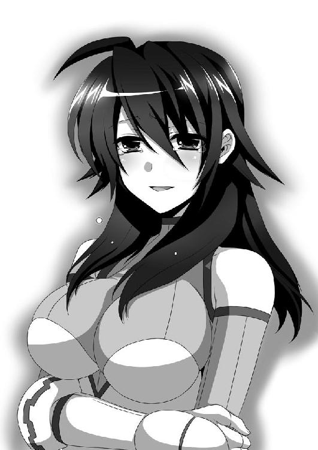
織野さんは謝罪を口にするが、途中で僕に背を向けた。
妙な圧力から解放された僕は、立ち上がって織野さんを追う。......なんだったんだ今のは？ 足がもつれたのか、立ちくらみか。いや、そんなことより織野さんだ。
織野さんはかなりのスピードで走っていた。とても追いつけそうにないが、それでも必死に大地を蹴る。
少し先にある角を織野さんが曲がると、
「きゃあ！ どうして角を曲がったら急に神楽井先輩が！」
「うわあ！ 未来から帰ってきたら、いきなり織野が！」
という二つの悲鳴が聞こえた。神楽井先輩とぶつかったらしい。あの人、いつの間に実家から帰って来たんだろ。まあいい。チャンスだ。急げ。
「あ、あれ、神楽井先輩。その、手の奴、なんか騒いでますよ」
「ん？ ......ぎゃああああ！ 私のＴ４Ｄカードがぁ！」
「え、え？ なんですか、それ？」
「タイムトラベ──ああ、そんなことを説明してる暇はない......。まずい。今、この時代に来たばかりだから、まだ時間軸が安定していない。今の衝撃でＴ４Ｄカードが......」
「えええ！ ど、どうなるんですか！」
「私に掴まれ織野！ あと二、三秒でどこかに跳ぶ。もう止められない！」
「な、な」
「はぐれるなよ。時空の狭間に置き去りになるぞ！」
「いやいやいやいや」
「行くぞ！」
「なんでよぉーっ！」
織野さんが叫んだ直後、僕はようやく角を曲がった。
しかし、そこには織野さんも神楽井先輩もいなかった。
目の前に、まるで時空でも歪んだかのような青黒いモヤがあったが、目をこすってからもう一度見ると、それはなくなっていた。目の錯覚だったらしい。
「どこ行ったんだよ......」
途方に暮れ、ただ、その場に立ち尽くした。
第八章 初めてのプロポーズ
それから三日、織野さんも神楽井先輩も行方不明のままだった。
何度も電話してもずっと圏外。二人がいそうな場所を探しても、どこにもいない。
キラ子さんから電話がかかって来たのは、家のソファに寝転がってコロコロを読んでいるときだった。もちろん、内容は織野さんについてだ。
『本当に知らねえのか、織野の居場所』
「だから、知りませんって。僕だって探してはみたんですよ」
『電話に出ないだけならまだいいんだが......発信器に反応がねえってのは、いったいどういうことなんだよ......』
発信器。携帯に備わっているＧＰＳのことだろうか。
「電波の届かないところにいるんじゃないですか？」
『あほか！ 私らの使ってる発信器にゃ圏外なんかねーよ。世界中どこにいたって反応する代物だ』
「だったら、携帯が壊れちゃったとか」
『発信器は埋め込み式だよ。脳の中に直接チップ入れてんだ。だから、壊れるのは織野が死ぬときだけだ』
「えっと。映画の話ですか、キラ子さん？」
『......ああ、そうだよ。全部映画の設定で私の名前はキラ子なんて昭和のアイドルチックな名前だよ』
みしぃ、と携帯電話が悲鳴を上げたような音が聞こえた。
『......ったく。織野の奴はこんな馬鹿のどこがいいんだか......』
「え？ なにか言いました？」
『なんでもねえよ』
投げやりに言って、ちっ、と不機嫌そうに舌打ちをする。
『本当に、どこ行きやがったんだ、織野の奴......』
キラ子さんは、さっきからずっとイライラしているようだった。ただ、それは焦りの裏返しなのかもしれない、と思った。だから、
「きっと大丈夫ですよ。織野さん、僕と違ってしっかりしてますから」
と、僕は努めて明るい口調で言った。キラ子さんへの気遣いという意味合いもあったけれど、なによりも僕自身が、大丈夫だと思い込みたかったのだ。
『しっかりしてる、ね......。どうだかな』
しかし、キラ子さんは皮肉げに言う。
『あいつ、しっかりしてるように見えて、案外抜けてっからな。大人びてるくせに子どもっぽいっつーか......。とにかく一人で抱え込むタイプなんだよな』
それは、なんとなくわかった。
本当になんとなく、だけれど。
『能力は申し分ねえのに、メンタルがどうにも不安定で......』
「なるほど。リハーサルでは上手く出来ているのに、撮影本番になると緊張して実力を発揮できなくなるってことですね」
『......お前って馬鹿だな』
あまりにもストレートに馬鹿にされた。あ、あれ？ キラ子さんの言葉を鋭く分析したつもりだったのに、なぜ？
「もうちょっとやんわりと言ってくださいよ、キラ子さん」
みしみしぃっ、とまたもや電話の悲鳴。
『......その名前で私を呼ぶな』
「え。本名で呼ぶなって、いったいどうしたら......。あ、もしかしてあだ名で呼べってことですか？ いやー、なんだか急にフレンドリーになっちゃいますね。えーっと......。じゃあ、キラリンとかって、どうで──」
ミシミシミシミシィィィイイイっ！
と、携帯電話が使用不可能の一歩手前まで破壊されたような音が聞こえた。
「ど、どうしたんですか、キラリン！」
『......てめえ、今度会ったとき覚えとけよ』
殺意のオーラが受話器越しでも伝わってきた。なんだか知らないけど怒らせてしまったようである。
『とにかく、なんかわかったらすぐに連絡よこせ。わかったな』
「はい。わかりました」
僕が「わか──」まで言ったぐらいで、電話は一方的に切られた。
ふうむ。キラ子さんもよくわからない人だ。嫌われているのかと思ったら、急にあだ名で呼べとか言ってくるし、そのくせあだ名で呼んだらキレるし。
「......映画のスケジュールが押してるせいで、切羽詰まってるんだろうな」
深く考えずにそう結論づけて、それから、僕は栗栖ちゃんに連絡した。以前、カードを届けようと織野さんを探していたときに、栗栖ちゃんが織野さんの居場所を教えてくれたことを思い出したのだ。
藁にでもすがりたい気持ちだった。栗栖ちゃんに魔術的な占いができるわけでもないのだから、そこまで期待はしていない。
電話をかけると『任せてください』と元気のいい返事をもらい、一時間後にそよ風公園の前で待ち合わせとなった。
しかし、その結果は芳しくなかった。
以前と同じく、魔法陣のような図形を地面に描き、その中心に織野さんから借りているという料理本を置いて「あ、あんなとこに水着の美女が！」と言われ、僕はまたもや余所見をした。
「え、どうして......」
僕が視線を戻すと、栗栖ちゃんは納得いかないという風に腕を組んでいた。
「......そんな、おかしい。織野先輩が、この世界に存在していない。まさか私達の世界の方に......」しかし、すぐになにかを閃く。「あ、そういえば、神楽井先輩も一緒にいなくなってるんですよね。だったら、大丈夫なのかな。きっと違う時代に......」
「え。どういうこと？」
「う......。すいません。私の口からは言えないです。けど、そのうち戻って来ると思いますから。待ってるしかないですよ」
「そうか。でも、織野さんが参加してる映画サークルが困ってるみたいなんだよね。撮影が滞ってるんだと思うけど......大丈夫かな？」
そう言うと、栗栖ちゃんが表情を固くした。「織野先輩の映画サークルって......それじゃあ、まさか」と漏らした後、苦い笑顔を見せる。
「......それでも、待ってるしかないです。私がなんとかできたらいいんですけど、あちらさんも、私の話なんか信用しないでしょうから、どうすることもできません」
「そうだよね。待ってるしか、ないか」
栗栖ちゃんと別れ、真っ直ぐ家に帰った。
自分の部屋で、ベッドに倒れ込む。
たいして眠くもないが、全部投げ出して寝たい気分だ。
もやもやとした晴れない気持ちがあっても、目を閉じていれば眠くなる。
夢を見た。昔の夢。
僕の思い出の場所──そよ風公園。
小学一年生の僕が経験した、初恋と初失恋。
お父さんもお母さんも帰って来るのが遅いから、僕はいつも、近所のそよ風公園で遊んでいた。だいきくんやよしこちゃんと一緒に遊んだりもするけど、最近、あの二人はテレビゲームにハマっていて、一緒に遊んでくれない。
その日、僕は「そろばん習いなさい」としつこく勧誘してくるお母さんから逃げ出して、そよ風公園に向かった。
公園の中心に立ち、目を閉じ、精神を統一する。
そして目を開き、叫ぶ！
「かめはめ波ぁ──っ！」
手から気が出て行く様子をイメージし、両手をそれっぽい形にして前に突き出す。
でも、手からエネルギーは発射されなかった。
うーん。なにがいけないんだろう。まだ修行が足りないのかな。
「かめはめ波ぁ──！ かめはめ波ぁ──っ！ 波ぁ──っ」
何度やっても出ない。おかしい。もしかして、僕には才能がないんだろうか。いや、そんなはずはない。きっとできるはずだ。元気玉やビッグバンアタックは無理でも、かめはめ波ならできるはずだ。
だってヤムチャにできたんだもん。
ヤムチャにできたんなら、僕にできないはずがない。
だって......ヤムチャだよ？
「手の角度が悪いのかな......？」
しこうさくごを繰り返しながら、何度も何度も練習する。
僕は毎日毎日、一生懸命修行していた。
大きくなったら、正義の味方になりたかったから。
『小学一年生にもなってそんなこと言うなよ』とだいきくんはからかってくるけど、僕は真剣に正義の味方になりたかった。
絶対にいるはずだ。
みんながその存在を知らないのは、正義の味方は、みんなに正体を隠して戦っているからだ。理由はわからないけど、正義の味方は正体を隠している。
僕も正義の味方になって、世界の平和を守りたい。
そのためには、かめはめ波くらい出来なきゃだめだ。
さあ、頑張るんだ。僕ならできるはずだ。
だってヤムチャにできたんだから。
そうだ。きっとさっきまでのは溜めが足らなかったんだ。今度はもっと溜めてみよう。もっと巻き舌気味に言うんだ。
「くぁ～～～むぇ～～～～」
お。いい感じだ。手の中に体中の気が集まってる──気がする。
「ふぅぁ～～～むぅえ～～～～」
いける！
今までとは、なにかが違う！
「波ぁぁああああああっ！」
爆音が轟いた！
「うわあああっ！」
めっちゃビックリした。思いっきり尻餅をついてしまった。
目の前の砂場で爆発が起こったらしく、周囲で砂が舞い、視界が塞がっていく。
と、とうとう僕はやってしまったのか......！
僕が歓喜に震えていると、段々と砂埃が消え、視界がクリアになっていく。
「ぺっ。ぺっ。もう、なによこれえ」
見ると、砂場の中心に、変なスーツを着たお姉さんがいた。
「か、かか......」
驚きのあまり叫んでしまう。
「かめはめ波出したらお姉さんが出てきたぁ──っ！」
なんだこの新技は！
すっげーっ！ こんなの悟空にだって出来ないぞ！
「ここ、砂場？ いったいなにがどうなったの......？ 神楽井先輩も、途中でいなくなっちゃうし......」
お尻についた砂を払いながら、お姉さんは腰をぬかしている僕に近づいて来た。
「あの、ごめんね。驚かせて。大丈夫？」
すごくきれいなお姉さんで（年上お姉さん補整がかかってる気がしないでもないけど）、ちょっと恥ずかしかったけれど、僕はお姉さんの手をとった。
そのままお姉さんに手を引かれて、近くのベンチに座った。
「......いったいなにがどうなったんだろ。そよ風公園に戻って来たみたいだけど、どの遊具もテープ張ってないし、妙に新しいし......」
「お姉さんは、僕の必殺技で異世界からショウカンされたんだよね？」
意気よーよーと尋ねると、お姉さんはすごく困った顔になった。
「えーっと、ぼくはなにを言ってるのかなぁ？」
「僕が気を発射したから、お姉さんはこの公園にショウカンされたんだよ、違うの？」
「うーん。残念ながら違うわ。私は、たまたまこの砂場に落ちてきただけなの」
なんだぁ、と僕はがっかりした。やっぱり、まだまだ修行が足りないようだ。
「ねえ。ぼく、名前は？」
「諦だよ。籠島諦」
僕が名乗ると、お姉さんは目を丸くした。
「え......あ、じゃあ、アキラって、どういう字、なの......？」
「帝王の言葉って書いて諦！」
かっこいいことを言う僕。
帝王とか、すごくかっこいい。
「......ああ。そっか、そういうことか......」お姉さんは全てを悟ったかのような、柔らかい笑顔を浮かべた。「神楽井先輩に連れられて、とんでもないところに来ちゃったのね。......うん。確かに、目元とか面影があるかも......」
お姉さんがなにを言っているか、僕にはさっぱりわからなかった。
「ねえ。諦くんは、公園でひとりでなにをしてたの？」
「修行」
えへん、と胸を張って言った。お姉さんは「へ？」と首を傾げてから「......うわあ、かわいい。籠島くんにもこんな時代があったんだ......」と悶える。
「僕は本気なんだよ。それなのに、お母さんもお父さんもだいきくんもよしこちゃんも、そんな馬鹿なことやめろって言うんだ」
「諦くんは、なんのために修行しているの？」
「正義の味方になるためさ。大きくなったら、僕は正義の味方になって、世界の平和を守るために戦うんだ」
「そうなんだ。それじゃあ、頑張らないとね」
お姉さんはにっこりとほほ笑んで、僕の頭を撫でてくれた。少しくすぐったい。
みんなと違って、お姉さんは僕の話を馬鹿にしなかった。
僕は、それがすごく嬉しかった。
「諦くんは、正義の味方とかいると思ってるの？」
「うん。絶対いるよ。みんな知らないだけで、本当はいっぱいいるんだ。宇宙人とか魔物とかを隠れてやっつけてるんだよ」
「ふふ。今とは大違いだなぁ......」
「でもお姉さん。僕は不思議なんだけど、どうして正義の味方って、正体を隠してるのかな？ テレビとか見てても、みんなそうだよ。途中でバレちゃったりすることもあるけど、だいたい隠したまんまなんだよ」
ウルトラマンや仮面ライダーがそうだ。戦隊モノは......うーん。あれは隠しているって言っていいのかな。みんな、ちょっと自己主張が強すぎる気がする。
「お母さんは『社会の混乱を防ぐため』って言ってたけど、本当なのかな？」
「そうね。それも、一理あるわ」お姉さんは、知った風に笑う。「でも、一番の理由はそれじゃないのよ」
「じゃあ、なに？」
「それはね、心配をかけないためなの」
お姉さんは優しく、しかし力強く笑った。
「正義の味方にも、家族とか友達とか──好きな人とか、大切な人間がいっぱいいるのよ。その人達に余計な心配をかけたくないから、みんなに正体を隠しているの」
「でも、それじゃ正義の味方は、ピンチになったらいなくなる変な奴だって思われるだけじゃん。それでもいいの？」
「いいのよ。それでいいの。報われなくても、いいの」
妙に重みのある言葉だった。ずん、と胸に突き刺さった気がした。
「正義の味方は、感謝とかお礼とか、そういうものが欲しいんじゃない。ただ、日常を守りたいだけ。事件が起きたら解決するんじゃなくて、事件が起きたことをみんなに知られる前に、片付けるのがベスト」
だんだんと話が難しくなってきた。僕は集中して耳を傾ける。
「みんなから応援されたり励まされたりしたら、すごく嬉しいんだけど、それは理想じゃない。理想は、戦ってることを気づかれないこと。恩とか、感じて欲しくないのよね......。みんなには、なにも知らずに笑っていて欲しい」
お姉さんは、もう僕に向けてではなく、自分に言い聞かせるように話していた。
「隠してることが、辛かったり寂しかったりするけど......。そうよね、なにをイライラしてたんだろ、私......。こんなこと、ずっと前にふっ切ってたつもりだったのに。......あのね、諦くん」
「なあに？」
「正義の味方は、報われないことが──報われることなんだよ」
よくわからなかった。
いろいろと聞き返したかったけど、お姉さんが一人で納得したような笑顔になっているから、なんとなく聞けなかった。
「だからね、みんなが世界の危機とか地球のピンチとか、そういうことを知らずに平和に生きてくれることが、一番嬉しいのよ」
「えっと。つまり、労働環境が悪いくせに報酬が安い、低賃金労働者なんだね」
僕がそう言うと、お姉さんはがっくりと肩を落とした。
「どこで覚えたの、そんな言葉......」
「お父さんが、毎日お酒飲みながら、ぐちぐち言ってるんだ。最近仕事がうまくいってないみたい。不景気って怖いんだよね」
「......嫌なこと聞いちゃったわ」
「だから、僕は大きくなったら正義の味方になって、お父さんのために不景気って怪物をやっつけてあげるんだ」
「なんていい子なのかしら！ ヤバイ、超かわいい！」
「って言ったら、こないだ変身ベルト買ってもらえた。計算通り」
「前言撤回！」
頭を抱えたお姉さんを眺めながら、僕は自分の将来について思い直す。
「やっぱり、正義の味方になるの止めよっかな。思ったより大変そうだし。お母さんが言ってたみたいに、こーむいんになって安定した生活をした方がよさそうだよ」
「現実的なお母さんなのね......。まあでも、その方がいいと思うわ。だいたい、諦くんは絶対正義の味方になれないから」
僕はむっとした。「どうして？」と聞き返す。
するとお姉さんは、にっこりとほほ笑んだ。こないだドラマで見た『子供のためを思って優しい嘘をつく大人』みたいな笑顔だった。
「正義の味方なんて、この世界にいないからよ」
「そうなの？」
「うん。ていうか、まず悪の組織がないからね。だから、正義の味方なんていないの。世界を裏から守っている人達なんて、絶対にいない。超能力者も、魔法使いも、電脳戦士も、この世界にはいない」
「やっぱり、そうなのかなぁ......」
お母さんには反抗したけど、なぜか、このお姉さんには反抗する気が起きなかった。
「まあ、万が一いたとしても、諦くんは生涯見つけられないで終わるだろうね。そういう人達って、正体を隠すのがすごく上手いから」
嘘つけ、と突っ込みたくなった。なんでだろう。
でも僕は、正直もう、正義の味方とかどうでもよくなっていた。
他のことで、頭がいっぱいだったのだ。
それは──恋だ。
「お姉さん」
「うん。なに？」
「僕と結婚してください」
ずっこけられた。
バナナの皮を使ってもこうはいくまい、という見事な転倒だった。
「え......。えええ？ あ、あの、本気、ですか？」
「本気です」
こんなことを冗談で言うはずがない。
「えっと......。あははー。いや、嬉しいんだけど、すっごく嬉しいんだけど......できたら後十年くらいしてから、言って欲しいっていうか、いや、何言ってんのよ私......」
混乱するお姉さん。僕のいきなりのプロポーズに戸惑っているようだ。
よし。ここでいっきに畳み込むんだ。お父さんも「母さんはな、押し倒したらなんとかなったんだぜ」と言ってたから、きっとここからが肝心だ。
お父さんに習った甘い言葉をささやくんだ！
「きみの瞳に、河童いっぱい☆」
「怖っ！」
「僕は知りましぇーんっ！」
「無知なのね！」
「つけるから！ ちゃんとゴムつけるから！」
「!?」
......酔っぱらったお父さんの話は信用しない方がいいかもしれない。
「諦くん」
お姉さんは姿勢を正し、真面目な顔で言う。
「ごめんなさい。私はきみとは結婚できません」
フラれた。
......フラれた。
............フラれた。
「......うぅ......ひっぐ。うわあああああん！」
「マジ泣きなの!?」
予想外の悲しみが胸に込み上げてくる。恋とは、こんなにも切なくて苦しいものだったのか。泣いちゃダメだってわかってるのに、涙が止まらない......。
「ああ......、ごめんねえ。ダメなものはダメなのよ。だから泣かないで......」
「うぅ......ひぐぅ......。ねえ。どうして、ダメなのぉ？」
「そんなチワワみたいな目で見ないでよ......。えっと、ほら、年の差でね。いや、同い年なんだけど、とにかく今は無理なのよ......」
「愛があれば年の差なんて」
「言うと思ったけど......」
「うちのお父さんとお母さんは三十歳差だよ」
「すごいね！」
「『お父さんは今年で五十五だけど、まだまだ現役なのよ』ってお母さんが言ってた。ねえ、現役ってなに？」
「し、知らない......」
ほっぺたをトマトみたいに赤くして、お姉さんは俯いてしまった。そして赤い顔をしたまま、胸の前で両手の人差し指をくっつけたり離したりする。
「......で、でも、まだ私達、会ったばっかりよね。私はきみの未来っていうか、まあ少しは知ってるんだけど、諦くんは私のこと全然知らなかったわけだから......。えっと......その、私のどこらへんを好きになってくれたの、かなぁ？」
ちら、ちら、と横目で僕の反応を窺う。言葉はカミカミで、ひどく緊張している様子だった。
僕は、正直に答える。
「おっぱいが大きいとこ」
グーで殴られた。
頭に拳骨が降ってきた。
「そんなことを言う男とは結婚できません」
むうぅ。テコでも動かなそうな雰囲気だ。
「もしかして、他に好きな人でもいるの？」
僕が何気なく尋ねると、お姉さんは表情を強張らせた。でもすぐに、ふっ、と穏やかに微笑む。
「うん。いるよ」
「どんな人？」
「すっごく鈍感な馬鹿」
大きく息を吐いて、お姉さんは軽く口を尖らせた。
「とにかく、なんにも気づかない男ね。どんだけわかりやすいヒントがあっても、全部見落とすって感じ。探偵とか絶対無理そう」
「ふーん。でも、お姉さんはそのダメ男がいいの？」
「......うん。そうよ」
目を細めて、少しだけ恥ずかしそうにはにかむ。
「私、クラスで委員をやってるんだけど、いろいろと用事があって、仕事ができないことが多いのよ。それなのに、その男は嫌な顔ひとつせずに、私の言い訳を全部信用して、私の分まで仕事をやってくれるの」
素敵な笑顔のまま、お姉さんは語り続ける。
「なんか、すごい暖かい男なのよねえ。全てが終わったら、この男のところに帰ってきたいなあ、って思うような、変な包容力を持ってる。癒し系なのかな」
「じゃあ、その男と結婚するの？ それなら、僕もすっぱり諦めるよ」
そう言うとお姉さんは「うっ」と言葉に詰まった。「子供の無邪気さってやっぱり怖いわね」と、軽く溜息をつく。
「どうかなぁ。あの鈍感男は、私の気持ちなんてさっぱり気づいてないと思うから。それに、さっき、ちょっと喧嘩しちゃったし」
「喧嘩？」
「うん。でも、私が全部悪いの。彼は、彼の領分をきちんと守って踏み越えないでいてくれるのに、私がムキになって彼の方に踏み込んじゃった。なんで私ばっかりが苦労しなきゃなんないんだろう、って嫌になって、全部彼にぶつけちゃったの」
お姉さんは、自分を責めるように目を閉じた。
「でも、諦くんと話してて、ようやく思い出した。お姉さんが彼に甘え過ぎてたみたい。私は、同情して欲しいわけでも苦しみを共有して欲しいわけでもない。ただ、私の帰るべき日常が、彼であって欲しいの」
そこで、ぽん、と僕の頭に手を乗せた。
「ごめんね」
「？ どうして僕に謝るの？」
「なんとなくよ。そうね。あと十年くらいしたら、今の『ごめんね』を思い出して」
変なの、と思いながらも、僕はその言葉を胸の内にとどめておくことにした。
そして、ふと気になったことを尋ねてみる。
「その男は、正義の味方って信じてた？」
「全然。ちっとも信じてなかったわ」
「そうなんだ。あ、でも、その方が正義の味方にとってはありがたいって、お姉さん言ってたよね」
「うん。そう。そうなのよ......。だから、彼にはあのままでいて欲しいの」
そう言うお姉さんの表情は、いわゆる恋する乙女そのものだった。完全にその男に惚れているらしい。仕方がない。ここは、涙を飲んで身を引くとしよう。
「幸せになってね、お姉さん」
「ありがとう。諦くんも頑張りなさいよ。十年後くらいに」
そのとき後ろから、うにょーん、とまるで時空が歪むような音がした。
振り返ると、背が高くてスタイルのいい美女がいた。おしゃれなのかどうなのかよくわからない、未来っぽい格好をしている。
「こんなところにいたのか、織野」
「あ、神楽井先輩。よかったぁ」
「ずいぶんと探したんだぞ。ん？ なんだ、その小生意気な目をした子供は？」
「僕は籠島諦。帝王の言葉と書いて、諦だよ」
かっこよく自己紹介すると、モデルみたいな方のお姉さんはぎょっとした。
「おい。もしかしてそういうことか。織野？」
「はい。どうやらそういうことです。神楽井先輩」
背が高いお姉さんはもの珍しそうな目で、僕をじろじろ眺めた。ちょっと照れる。
「はあー。この子供が、あの、のほほんとした奴に育つのか」
まるで、未来の僕の姿を知っているかのようなセリフだった。
「まあいい。帰るぞ、織野」
その言葉に、さっきからいるお姉さんは静かに頷いた。
「え、帰っちゃうの？」
僕はすごく寂しくなった。このお姉さん達には、もう二度と会えない気がしたから。
「大丈夫だよ。絶対にまた会えるから」
二人のお姉さんは、僕に背を向けて歩いて行く。僕は、このままお別れするのがどうしても嫌で、追いかけた。
でも、そこで突風が吹いて、葉っぱや砂が宙を舞い、お姉さん達を隠してしまう。
超能力で操ったみたいな、不自然な突風だった。
「忘れないでね。諦くん」
お姉さんの、声だけが聞こえた。
「この世界には、正義の味方なんていない。これから先、もしもそれっぽい人達が現れても、絶対に気づかないであげてね。非日常の全てを『気のせい』の一言で済ませられるような、器の大きな男になるのよ」
風が止んで、視界が晴れる。
そこにはもう、誰もいなかった。
「......きれいなお姉さん達だったなぁ」
不思議なことに、思ったより寂しくならなかった。
絶対に会えないと思うのに、また会えるような気がする。
こういうのを、矛盾っていうんだろうか。
その日から、僕は修行をするのを止めた。
お母さんがゲームを買ってくれたことも原因のひとつだが、一番の理由はお姉さんとの出会いだった。
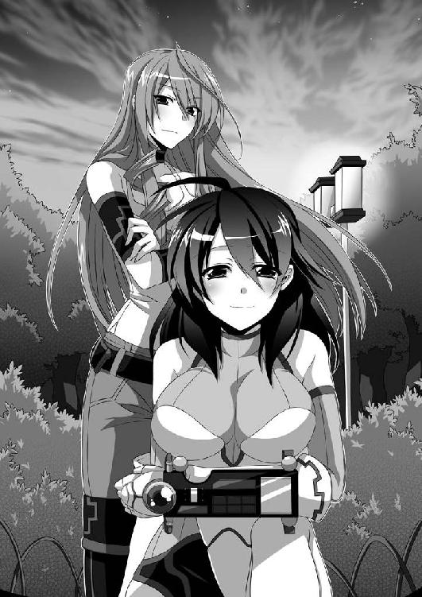
正義の味方なんてこの世界にはいない。漫画やゲームのような大事件なんておきない、退屈な日常こそが、この世界。
成長するとともにそういうことを学んで、大人になっていった。
お姉さんとの会話が、鎖のように絡みつき『気づいてはいけない』という呪いとなって僕の精神を支配していた。
といっても、全然不愉快じゃない呪いなんだけど。
とにかく、正義の味方なんていないということを、僕は知った。
そして、お姉さんに好かれるような男のようになりたいと思った。
あたたかくて包容力のある鈍感な男に。
なにが起こっても「気のせい」の一言で済ませられるような男に。
僕はそのとき、本当にお姉さんが好きだったから。
ようやく夢から覚めて、ベッドの上、僕は体を起こした。
「......すげえ子供だったんだな、僕って」
羞恥心で身が震える。初対面の人間にプロポーズとかありえないだろ。
「あのお姉さん、今なにしてるんだろう」
正直、もう顔はうろ覚えだ。だけど、交わした言葉の数々はどれも鮮明に覚えていて、その全てが、僕の人格を作り上げている。
僕は、お姉さんが好きになるような男になれたのだろうか。
「......なんか、なれた気がするぞ」
無性にそんな気がする。まあ、気のせいだろうけど。
机の上で、携帯電話が震えた。織野さんからのメールの着信だった。
今すぐ、そよ風公園に来て欲しいと言う。
僕は、こないだ買った鞄を肩からかけて、すぐに家を飛び出した。
赤くなり始めた空の下。織野さんは公園の入口に立っていた。映画の衣装であるスーツを着たままで、三日前に会ったときから、なにも変わってないように感じた。
「久しぶりだね」
「あ、そうか。久しぶりなのね」
私はあんまり久しぶりって感じがしないんだけど、と織野さんは微笑んだ。
すごく優しい、僕の好きな笑顔だった。
不思議と、気まずさがなくなっていた。なにがあったわけでもないはずなのに、全てが解決してしまったような、爽快感があった。
ごめんね──十年前の、お姉さんの謝罪が頭をよぎった。
「あのさ」
僕は、ただ確認をする。
「僕はこのままでいいんだよね？」
「うん。きみはそのままでいいよ」
その瞬間、なぜかわからないけど、全てが通じ合った気がした。
二人で笑う。僕らの間に流れる空気が、とても穏やかなものとなった。
「あ、そうだ」僕は鞄の中に手を入れる。「実は──」
「探したぞ、織野」
背後からハスキーな声が響き、緩やかだった時の流れが、急激に加速した。
「く、久我山さん」
織野さんが声を上げた。振り返ると、僕の真後ろにキラ子さんがいた。
「あの、本当にすいませんでした。私......」
「いいわけは後でいい。奴らのアジトの場所がわかった。近くにある潰れた中学だ。けっこうまずいことになってる。だから早く掴まれ。私のテレポートなら、五回で着く」
「は、はい」
キラ子さんの手を握る織野さん。その反対の手を、僕は咄嗟に掴んだ。
「待って下さい、キラ子さん。もうちょっとだけ。僕、織野さんに──」
「悪いが──」
瞬間、キラ子さんの右手が、ブレた。
そして、首が切り落とされたような感覚、が......。
「──今はお前の冗談に付き合ってる暇はねえ」
「き、キラ子さん......」
「......ああ。私は星空キラ子だよ。だから目の前で星を散らせてやったのさ」
それ、たいして上手いこと言えてませんよ、なんて思っている内に、意識が、ゆっくりと闇に落ちていった。
第九章 クライマックスシーン
目を覚ますと、僕はそよ風公園のベンチの上に寝ていた。
体を起こして、首を振る。延髄にそっと触れてみるが、思ったよりも痛くない。上手く意識だけを刈り取るための手刀だったのだと実感した。
「よっぽど映画の撮影が滞ってるんだな......」
呟きながら顔を上げると、夕日が沈みかけていた。携帯で時間を確認する。どうやら僕は、三十分くらい気を失っていたらしい。
織野さんは今、映画の撮影をしていることだろう。
「......行かなくちゃ」
場所は確か、あの廃校。
校門に身を隠しながら中を覗くと、そこは撮影の真っ最中だった。
校庭の中心に立つ織野さんは、ロン毛の男と向き合っていた。不健康そうに痩せているが眼光はぎらぎらと鋭い。ワイルドな感じの男だった。
周りには大勢の人間が倒れている。黒尽くめの人も私服の人も、みんな、衣服がところどころ破けていたり、体に生々しい傷があったりした。
その中には、キラ子さんの姿もあった。修羅の形相で、必死に立ち上がろうと力を振り絞っているが、体が言うことを聞かない、という様子だった。
事態を推測するに──
織野さんの組織とテロリスト一派が激突。あと一歩というところまで敵を追い詰めはしたが、真打ちのロン毛が登場。キラ子さんも仲間も敗れ、残るは織野さん一人。
──というシーンか。いわゆる佳境という奴だ。
撮影の邪魔をするわけにもいかないので、門の陰から見学することにした。
「くっそがぁ......。動きやがれ、よ......」
「無駄だ、久我山。両肩と股関節を外したんだ。精神力でどうにかなる問題じゃない。お前の体は今、物理的に動けない状態だ」
ロン毛が平坦な声で告げた。冷静沈着という言葉がぴったりの佇まいだ。
「久我山さん！」
「来るんじゃねえ！ 目の前に集中してろ！ あいつに、隙を見せるな！」
「は、はい」
悔しそうに歯を食いしばり、織野さんは前方の敵を見据える。
直後、ロン毛が右手を突き出し、それと合わせるように織野さんが両手を前に出す。二人の距離はおよそ五メートル。徒手空拳が当たる距離ではない。
空間の圧力が増し、大気が震え上がる。
「っあ......、ああ！」
「......ぬああ！」
織野さんとロン毛、それぞれの咆哮。
まるで、片方のサイコキネシスをもう片方のサイコキネシスが抑え込んでいるような、不可視の力同士がぶつかり合っているような、不気味な圧迫感があった。
数秒経過した後、互いに手を下ろし、大きく息を吐いた。が、すぐに臨戦態勢に戻る。
「見事だ織野」
呼吸を整えつつ、ロン毛が言う。
「俺のサイコキネシスの範囲を完璧に見切り、それを覆う形で、真逆のサイコキネシスをぶつけるとはな。微細なコントロールが求められる高度な技だ。俺は今、全力でお前をつぶしにかかった。しかし、それが防がれたということは、サイコキネシスの範囲、出力、そしてコントロール。全てにおいてお前に敗北したということか」
一旦言葉を切り、細い目をさらに細めた。
「成長したな、織野」
弟子の成長を認める師匠のような言葉だった。純粋な称賛だったように思う。
それなのに、織野さんの表情は晴れない。
完全に相手の能力を上回ったというのに、どうして？
「嫌みにしか、聞こえませんよ......。柾木さん......」
ロン毛の役名は、柾木らしい。
「そうか。それは残念だ。まあ、確かに──」
柾木さんは、わずかに口の端を歪め、笑う。
「俺はお前のような特化型ではなく──万能型だからな」
織野さんから聞いた、映画の設定を思い出した。
一つの能力を専門的に伸ばした特化型と、多彩な能力を使える万能型。
つまり、織野さんが集中して鍛えていたたった一つの能力が、男の複数ある能力の一つと同レベルだったということ。
絶望的な状況だ。
......すごいな。勝ち目ないじゃん。いったいどうやって倒すんだろ。
ここが、脚本家の腕の見せどころというわけだな。
「俺はお前のサイコキネシスを自分のサイコキネシスで減衰させつつ、別な能力を使うことができる。お前に勝ち目があると思うか？」
「......っ」
「もういいだろう、織野。俺達の仲間になれ」
柾木さんの顔に苦みが浮かぶ。
「俺だって、お前達を傷つけたいわけじゃない。久我山を殺さずに、動きを止めるだけにしておいたのは、これからは俺の下で働いてほしいからだ。お前らは、いったいいつまで機関のペットでいるつもりだ？」
「どうしてですか柾木さん！」
質問を無視して、織野さんは叫んだ。
必死に、そして辛そうに。
「あなただって、昔は、私達と一緒に戦っていたのに。私に、サイコキネシスの使い方を教えてくれたのだって、柾木さんだった......」
「気づいただけだ。機関も国のお偉いさんも、俺達超能力者を実験動物としか思っていない。おかしいだろう？ 俺達の方が優れた人種であるはずなのに、どうして一般人のために身を削って尽くさなければならないんだ？」
口調は変わらないが、言葉が次第に重みを増していく。
「超能力者にだって、普通の生活があっていいはずだ。これ以上、俺達のような被害者を生み出さないために、機関を潰す。それが俺の目的だ」
「だからって、あなたのやり方は強引過ぎます！ 無関係な人間を巻き込んでいいはずがない！」
「そこだよ織野。無関係とはなんだ？ 同じ世界の人間なのに、関係ある者と関係のない者がいるなんて、そもそもおかしいんじゃないのか？ なぜ、能力者だけが平和のために尽力しなければならない。なぜ裏方に徹しなければならない」
「それは......」
「正義の味方の役を押しつけられるのはごめんだ。俺達を道化にした機関は、絶対に許さない。お前だって、少なからず感じているはずだ、織野」
吐き出された問いに、織野さんは口ごもる。即答できないということは、多少なりとも柾木さんの気持ちがわかるということだ。機関というのは、和気あいあいとした仲良しの組織ではないらしい。
織野さんはぎゅっと唇を噛み、それから切ない口調で言う。
「やっぱり、妹さんのせいなんですか......」
柾木さんの眉間にしわが刻まれた。動揺を押し殺したように。
「......勘違いするな。妹の復讐なんて、ちゃちな理由じゃない。あいつのことは、ただのきっかけに過ぎん。遅かれ早かれ、俺はこの道を選んでいた」
一歩、柾木さんが前に出る。
「もう一度言うぞ、織野。俺の元に来い。一緒に超能力者を解放してやろう。お前だってもう、正義の味方はこりごりだろう？」
わずかな沈黙。張り詰めたような緊張感が、二人の間に流れる。
けれど。
僕は、少しも不安を感じていなかった。
もちろん、映画だからハッピーエンドになるだろうという予測はあるけど。
そんなことじゃなくて。
もしこれが現実だったとしても、織野さんがどんな返事をするか、わかっていたから。
「いいえ」
やっぱり。
僕は門の陰で、こっそりと笑った。
「私はこれからも裏方で戦い続けたいと思ってますよ、柾木さん」
「......なぜだ？ どうしてわからない。機関が正しい存在だとでも思っているのか」
「機関なんて関係ありません。......私だって最初は自分の運命呪ったりしましたよ。全てを投げ出して、普通の女の子になりたいって、何度思ったことか......。でもっ！」
織野さんは、力強く一歩を踏み出す。
「むしろ今は感謝してますよ。私に戦う力をくれたことに、ね」
自分の掌を見つめ、ゆっくりと握りしめる。
「いいじゃないですか。世界の犠牲とか、すごくかっこいいですよ。能力は、先天的な才能がなければ使えないんだから、私達は神様に選ばれたということです。せっかく選ばれたんだから、頑張りましょう。生贄でも犠牲でも」
「......諦めろと言うのか！」
冷静だった柾木さんが、初めて感情をむき出しにした。
「全て受け入れろと......悲劇も絶望も、そういう運命だと諦めろと言うのか！」
「はいそうです」
織野さんは、場違いなほどにあっさりと言い切った。
「とにかく、あなたのやっていることは子供の八つ当たりと一緒なんですよ！」
「......織野。お前はそれでいいのか？ 俺達がどんな苦痛を味わおうとも、世間の奴らはなにも知らず笑っているんだぞ。妹が死んだときだって......」
「それが、どうしたって言うんですか！」
織野さんは瞳に闘志をみなぎらせて──吠える！
「みんなに、なにも知らずに笑ってもらうために命かけるのが、正義の味方ってもんでしょうっ！」
僕は、胸が苦しくなるほどに、嬉しかった。
たとえ映画だとしても、織野さんの言葉が、心に深く響いた。
僕はこのままでいて、彼女はあのままでいて。
それが、僕らにとって一番いいのだと、実感できた。
「......見解の相違だな」
柾木さんは不愉快そうに吐き捨てた。ごきり、と首を鳴らす。
「俺は、もう戻れないところまで来ている」
織野さんが即座に構えを取る。そこに、弾丸のようなスピードで柾木さんが突撃。
拳と拳で戦う、乱打戦が始まった。
僕は、安心しながらそれを眺めていた。
だって、これは映画なんだから。
今のセリフで、織野さんの見せ場のようなシーンは終わったから、後は柾木さんを倒して終わりだろう。途方もない能力差があったはずだけど、まあその辺は適当に、眠っていた力が覚醒したとか、スーパー織野さんになるとかで、なんとかなるはずだ。
だって、これは映画なんだから。
しかし。
「きゃぁああっ！」
織野さんが地面を転がった。柾木さんは身の丈ほどある火の玉を手から出現させる。おそらく、パイロキネシスという能力だ。さすが万能型。なんでもできる。
放たれた火球を、織野さんは体を転がして、紙一重で避ける。
体勢を立て直し、近くにある枯れた花壇に目をやった。花壇の周りに敷き詰められていたレンガがほんの数センチだけ浮かぶ。が、すぐに落下した。
「くそ......」
「無駄だ。お前のサイコキネシスは、もう意味がない」
サイコキネシスだけなら、僅差で、柾木さんよりも織野さんの方が強い。
しかし、織野さんの能力が百に対して柾木さんが九十五だと仮定すると、織野さんが能力を百の力で使おうとしたとき、柾木さんから九十五の妨害が入る。すると、織野さんは五の力しか使えなくなってしまう。
簡単に言えば、そういう話なんだと思う。
能力のほとんどを封じられた織野さんは、地を駆け、柾木さんの火球を回避し続ける。
完全には避け切れず、腕、背中、とダメージを喰らっていた。
その光景を見ていて、僕の胸に不安が募った。
いったい、いつまで引っ張るんだろう。そろそろ、織野さんに都合のいい力が目覚めていい頃なんじゃないのか。
だって、これは映画なんだから。
織野さんが身を屈め、自身の体にサイコキネシスをかけてタックルをし──ようとした瞬間、頭上に柾木さんが、テレポートでもしたかのように出現した。そのまま、織野さんを大地に叩き伏せる。
柾木さんが手を上げる。それに呼応して、校庭の隅にあった古びた鉄棒が四つ、宙に浮く。それらが、一斉に織野さんに襲いかかる！
織野さんは逆向きのサイコキネシスを使い、ギリギリで動きを止めた。純粋なサイコキネシスの力なら、織野さんの方が強いのだ。
ただし、柾木さんの能力は、ひとつではない。
鉄棒の陰に隠すように放たれていた火球が──織野さんに直撃した。
「くっ、ああああああ！」
甲高い悲鳴。演技だとわかっていても、聞きたくない。
演技？
ちょっと待てよ。これ、本当に演技なのか......。
いくらなんでも、いくら映画だからっていっても、おかしくないか......。
「ドライブスーツのおかげで、致命傷には至らなかったようだな」
柾木さんは淡々と言う。
「まだ続けるのか、織野」
「......もち、ろん」
「そうか......。なら、仕方がない」
柾木さんがポケットに手を入れ、リモコンのような機械を取り出した。それを校舎に向けて、ボタンを押す。
「痛ぅうぅうぅぅううっ！」
耳を塞ぎたくなるような悲鳴が上がった。織野さんは頭を抑えて、グラウンドにうずくまる。
「あ、頭、が......痛、い......。な、なに、を」
「特化型の脳波にのみ干渉する電磁波だ。機関から持ちだした技術を発展させ、俺が装置を作った。敵のアジトに踏み込むならば、こういうものも警戒しておくべきだったな」
「......そんな、ことが......」
「特化型と万能型では、脳の回路がそもそも違う。特化型が直列つなぎで、万能型が並列つなぎだと言えばわかりやすいだろう。今流している電磁波は、直列つなぎの回路にだけ影響を及ぼす。この状態では、お前が能力を使うことは、超能力者の構造的に不可能だ」
「......う、あ。痛っ、うぅ......」
能力どころか、痛みで動くことすらできそうにない。
いや、これじゃ逆だろう。敵側が新兵器出してどうするんだよ。ただでさえなかった勝ち目が、さらになくなったじゃないか。
映画なんだから、そろそろ、都合のいい新しい力を......。
あれ──もしかして──映画──じゃ──ない？
「織野、諦めろ」
「い、嫌......で、す」
その返事に柾木さんは眉をひそめ、そして、織野さんに近づく。
「あの！」
気がついたら、僕は門の陰から飛び出していた。
「や、止めてください......」
......なにやってんだ、僕は。
これは映画なのに、今撮影中なのに、なんで邪魔してるんだよ。
ただ、これ以上、織野さんの辛そうな顔を見ていられなくて──
「なんだお前は？」
招かれざる客に対して、柾木さんは不機嫌そうな態度で返した。そりゃそうだ、だって今、撮影中だったんだから。
「あ、えっと。撮影の邪魔してすいません、僕は織野さんのクラスメイトで──」
世界が反転した。
いつの間にか、僕は大地に押し付けられていた。「ごはっ！」背中から叩きつけられ、肺の中の空気が全部外に出た。
柾木さんが僕の首を掴み、地面に抑えつけていた。いつの間にここまで走ってきたんだろう。
「いや、あの。撮影の邪魔したのは悪いと思ってますけど......、そこまで怒らなくても」
「おい、織野。こいつはなんだ？」
僕を無視して、柾木さんは頭を抑えたままの織野さんに尋ねた。
「止めてください！ 籠島くんは、なにも関係ないんです！」
「そうか」
静かに頷き、そして、ぞっとするほど冷たい目で僕を睨みつけた。
「だが、さっきも言ったが、関係のない人間などいない。この男は始末する」
うお！ まさかの撮影続行だ！
お子さん参加型の、遊園地のヒーローショウみたいな感じなのか。
あ、そうか。
きっと友達のピンチに、織野さんの眠っていた力が目覚めるという設定なんだな。
そう思って織野さんを眺めたら──
「止めて、くだ、さ......痛ぅっ！」
彼女は震える膝で、何度も何度も立ち上がろうとしていた。しかしそのたびに頭を抑えて膝をつく。終いには、とうとう地面に倒れ込んでしまった。
まだ。
まだ、引っ張るのか。
いったい、いつまで──
「無駄な抵抗はよせ、織野。無理をすれば障害が残るぞ」
それは、織野さんの体を気遣うような言葉だった。柾木さんはできることなら無傷のまま、利用価値のある織野さんを手に入れたいらしい。
そして、利用価値のない人間の扱いは、
「やれやれ。織野がかわいそうだな。早いところお前を片付けるか」
と、あまりにも無機質だった。
僕は、ぞっとした。
無数の戦いを経験した戦士にしか出せないような殺気が、瞳の奥に見て取れる。本能的な恐怖を感じて、僕は逃げようとした。
しかし、僕の首を抑える力はあまりに強く、いくら暴れてもちっとも外れない。
それでも諦めない。生物としての危機感が、僕の体を動かす。
僕の抵抗に苛立ったのか、柾木さんは首に加えて右腕も抑えた。
そのとき、柾木さんが乱暴に握ったせいで。
右腕のミサンガが──外れた。
そして──
そして──
なにも起きなかった。
「..................」
なんにも起きねえのかよ。
なんだろう、このがっかり感は。
不思議と、このミサンガが外れたらどうにかなるような気がしてたのに。
魔力の暴走的ななにかが起こって、ドーン、て全てが解決するような気がしてたのに。
まあ、そんなことあるわけないんだけどさぁ。
「はあ......」
「ずいぶんと余裕だな」
一気に緊張感がなくなった僕を見下ろし、柾木さんが顔をしかめた。
まずい。勝手に気が緩んでたけど、状況はなにも解決してないんだ。
このままだと、殺される......のか？ 映画的に。
「ぐ、ぐえ......」
首にかかる圧力が増した。
ヤバい、意識が......。
もう数秒で意識が飛ぶ、というところで、こつん、となにかが柾木さんのコメカミに当たった。おかげで、首を絞める手が弱まった。
ころころと転がるそれは、どこにでもありそうな小石だった。
「......この程度で抵抗したつもりか、織野」
半ば呆れたような様子で、柾木さんは自分に当たった小石を眺めた。
「いくら能力が使えないからとはいえ、投石とはな。ずいぶんと原始て......」
小石から織野さんに視線を移した瞬間、柾木さんの言葉は止まった。視線の先には、地面に這いつくばったまま、人差し指だけをこちらに向けた織野さんがいた。
俯せ。
なにかを投げられる体勢ではない。
じゃあ、さっきの小石は──
「......なぜ能力が使える？」
怪訝そうな顔で柾木さんが言った。織野さんは辛そうな顔のまま、しかし皮肉げに微笑んで言う。
「......やれば、できるもん、ですね......。今の小石が、限界......でしたけど」
その言葉を聞いて、なんだ、やっぱりこれは映画だな、と僕は思った。
だって、さっきは不可能とか言ってたくせに、織野さんは都合よく力が使えちゃってるようだし。
「......ふん。まあ、いい。あの装置はまだ試作段階だからな。こういうイレギュラーは起こり得るか」
つまらなそうに言いながら、柾木さんは校舎を眺めた。
「とにかく、もう少し徹底的にお前を封じておく必要があるようだな、織野」
左手を僕の首に当てたまま、ゆらり、と右手を上げた。その動きに合わせて、校庭の隅にあったベンチが宙に浮く。
「安心しろ。両足骨折程度で済ませてやる」
手を振り下ろすと、ベンチがとてつもない速度で空中を走った。
「──っ」
織野さんは覚悟を決めたのか、目を閉じた。もう、逃げ出す力は残ってないらしい。
僕は──はらはらしていた。
大丈夫かなぁ。
だって、あのベンチは──
「なっ！」
織野さんと柾木さんの両方が声を上げ、唖然とした。
サイコキネシスで飛ばされたベンチが、織野さんに直撃する寸前で、中央から真っ二つに折れてしまったのだ。
あーあ。
やっぱり壊れちゃったか。
あのベンチは僕が壊して、そして適当な修繕をしておいたベンチだ。座るだけなら問題ないように直したつもりだったんだけど、乱暴なワイヤーアクションには耐えられなかったらしい。
あのベンチ、映画のセットだったってことだよね......。
悪いことしちゃったなぁ。
「すいません。今のベンチ、こないだ遊んでいたら壊しちゃって......。映画のセットだとか知らなくって。その、ごめんなさい」
罪悪感がこみ上げてきた僕は、正直に謝った。
「その......もしよかったら、今の映像はハプニング集みたいな感じで映画のエンディングに流していただければ、あのベンチも浮かばれるかと......」
「......くだらん。この程度のラッキーで助かったつもりか」
柾木さんは不愉快ここに極まるという表情で吐き捨てた。
どうしよう、めちゃくちゃ怒ってるみたいだ。高いベンチだったのかな？
「状況はなにも変わっていない」
柾木さんは片手一本で僕を持ち上げた。足が浮き、宙吊りになる。全体重を支えている首の骨が、みしみしと嫌な音を立てた。
「織野は敗北し、お前は死ぬ。それだけだ」
「ぐ、が......」
「止めてっ！ お願いします柾木さん！ お願いだから......」
織野さんが、涙を流して懇願していた。片手で頭を押さえたまま、這うようにしてこちらに向かって来る。
僕を──助けようとしている。
おかしい。さっきから、なんでそんなに必死なんだろう。
これは映画のはずなのに。
だって、超能力者なんて、いるはずないから。
お姉さんだって、そう言ってたし。
「......う、うぅ......が、あ」
苦しくなる呼吸の中、僕はぼんやりと考える。
さっき、柾木さんが言った通りだ。
状況はなにも変わってない。
映画の撮影は滞りなく進行しているようだ。僕の起こしたハプニングなんて、なんの障害にもなっていない。
......どこまでアドリブに強い映画サークルなんだろう。
「籠島くんっ！ いやぁああああ──っ！」
ああ、織野さんがこっちを見ている。
すごく悲痛な表情で。
残念だなぁ。
織野さんのあんな顔を見たくなかったから、飛び出して来たっていうのに。
この状況が映画なのか現実なのかは、なんだかもうよくわからないけれど、でも、そんなことは些細な問題でしかなくて、僕はただ、織野さんに笑って欲しいだけだった。
さっき僕が起こしたハプニングは、映画の結末を、織野さんの敗北を、僕の死を、ほんの少しだけ先延ばしにしただけのようだ。
まったく、余計なことをしてしまった。
でも──
「籠島せんぱーい！」
無意味じゃ、なかったのかな。
舌っ足らずな声が響いた直後、柾木さんが何者かのキックによって吹っ飛んだ。僕はどさっと地面に落ちる。
顔を上げると、ローブを纏い、身の丈ほどの杖を持った栗栖ちゃんがいた。
「大丈夫ですか？ 上から見たらいきなり死にそうで、びっくりしましたよ」
「げほ、げほっ。く、栗栖ちゃん......。どうしてここに？」
「籠島先輩がミサンガ切っちゃうからですよ。切れたら、私の方でわかるようになってるんです。それで、杖に乗ってすっ飛んで来ました。間に合ったみたいでよかったです」
栗栖ちゃんはぺたぺたと僕の右腕、特に肩のところを重点的に触った。
「あ、もう大丈夫そうですね。完全にくっついてますし、私の魔力も、マナとなって星に循環したみたいだから......うん。完治です」
なんの話かさっぱりだった。
僕、怪我なんかしてたっけ？
「あ、そうだ。織野先輩の方も......」
とてとてと、栗栖ちゃんは地に伏せる織野さんの元に駆けて行く。
「なるほど......。主な怪我は火傷だけみたいですね。安心してください。私、火傷治療は得意ですから、すぐに治せますよ」
「......あ、あり、がとう......でも」
「あ、いいんですよ。こないだのお礼です。詳しい事情はわかりませんけど......、まあ、なんとなくわかりますから」
「うん......。でも、怪我が治っても、能力が......」
「それも大丈夫です」
得意げに微笑む栗栖ちゃん。そのとき、僕の携帯が震えた。神楽井先輩からの着信だ。通話ボタンを押すと画面が切り替わり、神楽井先輩の顔が現れた。
『やあ。籠島』
「え、どうして携帯画面に神楽井先輩が映ってるんですか？」
『これはテレビ電話だ』
あれ。僕の携帯そんな機能ついてたっけ？
「いや、でも......、どうして、頭に熊の耳着けてるんですか？ それに髪がちょっと光ってるみたいだし、変な格好しているし、背景が青白いし、ていうか全体的に見た目が３Ｄアニメっぽいような......」
『細かいことは気にするな。そういう男は嫌いだぞ』
なんと。神楽井先輩に嫌われたら大変だ。
よし。細かいことは気にしない。
「やっぱり神楽井先輩は速いですねー。さっきメールしたばっかりなのに。文字通り光速ってわけですか」
『褒めてもなにも出ないぞ栗栖。それより、どうだ織野。頭痛は治ったか？』
「え......、あ、痛くない。どうして......」
『なあに。ここの装置、なかなか高度なセキュリティを施してあったが、所詮は時代遅れの技術だ。私の敵じゃない。ネットに繋いであったのが運のツキだな』
栗栖ちゃんが呪文のようなものを唱え、織野さんが柔らかな光に包まれた。その光が消えると、体から負傷の痕が綺麗に無くなっていた。
僕は、織野さんのそばに行く。
「籠島くん......。どうして？ どうして、ここに来たの？」
そこでようやく、僕はここに来た意味を思い出した。
いろいろあったせいですっかりと忘れていた、ここに来た当初の目的。
肩から掛けていた鞄を開いて、中から紙袋を取り出す。
「これ、渡そうと思ってさ」
「......？」
不思議そうな顔になるが、織野さんは紙袋を受け取り、中身を取り出した。
僕が買ったハラマキを。
映画を見に行った日に、織野さんが急用でいなくなっていた間に買った物だ。白地にタンポポ柄のデザイン。できるだけかわいいのを選んだつもりである。
サプライズプレゼントなんて、ちょっと恥ずかしいことをしちゃったかな。
「......これ」
震えた声で問う織野さんに、僕は笑顔で返す。
「映画の撮影中に、お腹痛くなったら大変だと思ったんだ」
照れながら説明していると、織野さんはぼろぼろと泣き始める。「え、ええ？」と慌てふためく僕に、いきなり抱きついて来た。
「あ、あれ？ そんなに、気に入った......？」
「本当に......本当に馬鹿なんだね、籠島くんは......」
その『馬鹿』は、どうしてか、全く嫌な気がしない『馬鹿』だった。
「そうかなぁ。僕、馬鹿かな？」
「うん......。馬鹿だよ」
「うーん。じゃあ治すように努力するよ」
「......しなくていいわよ」
ぎゅっと。
背中にかかる力が強くなった。僕も手を回し、細い背中を抱きしめる。
「籠島くんは、そのままで、いいの......」
「そっか」
時が止まったような気がした。この瞬間があまりにも心地いい。
「はわわわ......」顔を真っ赤にした栗栖ちゃん。
『ん、んん！』わざとらしく咳払いをする画面の神楽井先輩。
「「......っ！」」
咄嗟に、お互いを突き飛ばすように離れた。
うわぁ......。今なにやってたんだ、僕。
なんか雰囲気に流されて抱き合っちゃったけど......。
『残念だが、ラブコメをしているヒマはなさそうだぞ、織野』
鋭い声に促されて見ると、校庭の端で、吹っ飛ばされた柾木さんが起き上がり、鬼の形相でこっちを睨んでいた。
『織野。栗栖』画面の神楽井先輩が、二人を見渡す。『気づいてるかもしれんが、この籠島という男は、相当鈍いぞ』
「それは、まあ......」
「ですよね......」
三人が、やれやれ、という感じで僕を見た。なんか悲しい。
『だからな。思いっきりやってしまえ。こいつは、たぶん気づかない』
にやりと笑った神楽井先輩に、二人が大きく頷く。
この三人の謎の一体感は、世界の命運を託したくなるほどに頼もしかった。
「これ、預かってて」と僕にハラマキを渡す。「すぐに終わらせるから」
織野さんが疾走した。変な電磁波はなくなったから、もう存分に能力が使える。爆発的な脚力で、柾木さんに突撃する。
「おい、織野。なんだ、あの二人は？」
「正義の味方にありがちな新キャラの助っ人ですよ。シルバーとゴールドみたいな感じですね」
「それなら......あの小僧は、結局なんなんだ？」
「......決まってるでしょう？ 通行人Ａですよ！」
二、三拳を交え、互いに距離を取る。互いに手を前に突き出し、サイコキネシスを発動しようとするが、相殺。
万能型である柾木さんは他の能力も使える。さっきまで織野さんを苦しめていたパイロキネシス。右腕から、真っ赤な炎が現れた。
ただし、それはさっきまでの話。
「──広き世界にわずかな歪みを。紅く紅く。もっと紅く──」
栗栖ちゃんは舞でも踊るかのように、杖をくるくると回し始めた。
数回、大きく杖を振り、勢いよく校庭に突き刺す。
「《焔王の箱庭》」
杖を刺した部分から光のラインが拡散し、大地を走った。校庭を隅から隅まで網羅し、ミステリーサークルのような、巨大な魔法陣を描く。
「認識──掌握──吸収します」
栗栖ちゃんの左手に、柾木さんの炎が全て引きずり込まれた。ゴルフボール並みに小さくなった炎を、小さな手で握り潰し、自分の力とする。
「な、なにが......」
驚愕の柾木さんに向けて、栗栖ちゃんが、ふふん、と得意げに微笑む。
「こないだの戦闘で使った魔法陣が、まだ残っていたから使わせてもらいました。今、この領域内での炎は、全て私の支配下にあります」
「まさか、お前もパイロキネシスの......？」
「？ えっと、そのパイロなんたらがなにかは知りませんけど、火の勝負なら負けませんよ。なんたって私、火の魔法使いですから」
勝敗はもう、決したようなものだった。
今までの戦闘から推測するに、柾木さんの主な戦闘手段はサイコキネシスとパイロキネシスとテレポート。後は切り札としての、妨害電磁波発生装置。
装置は神楽井先輩が制圧し、発火能力は栗栖ちゃんが抑え込んだ。
サイコキネシスだけなら、織野さんの方がわずかに強い。
そのわずかな差がだんだんと現れ、少しずつ、柾木さんを追い詰めて行く。
「っあああああああっ！」
台風の如き激しい攻防の末、織野さんが放つ渾身の拳が、柾木さんの鳩尾に深々と突き刺さった。
苦鳴を漏らすが、柾木さんは膝をつかず、なんとか持ちこたえる。
そのまま、織野さんは目を閉じ、なにかを念じるように力を集中し始めた。おそらく相手と体を密着させたまま、サイコキネシスで直にねじ伏せようとしているのだろう。
がくがくと、柾木さんの膝が揺れ始めた。
しかし、柾木さんもまた、自分のサイコキネシスで対抗する。
互いに必死の形相で、最後の力を振り絞る！
「............」
絵的にはものすごく地味だった。
やってる本人達は真剣なんだろうけど、さっきまでの縦横無尽な戦闘に比べると、どうしても物足りなさを感じる。
「......お、わり、です！」
決着が着いた。
サイコキネシス同士の勝負なら、織野さんに分がある。
柾木さんを地に叩き伏せ、腕を搦め捕り、抑え込んだ。
「あなたの負けです、柾木さん。これから、あなたを機関に連れて行きます」
織野さんの勝者宣言に、柾木さんは悔しそうに口元を歪める。
しかしその歪みは、すぐに愉快そうなものになった。
「甘いぞ、織野」
瞬間、織野さんの腕の下から、柾木さんが消失した。
「しまっ」
「対超能力者用電子錠をすぐに着けるべきだったな」
勝ち誇ったようなその声は、天から降って来た。
見上げれば、夕日を背負った柾木さんが廃校の屋根に立っていた。
失策。柾木さんには、テレポートが残っていたんだ。
織野さんにはもう、追いかける体力はない。栗栖ちゃんなら空を飛べるのかもしれないが、しかし移動スピードでテレポートに勝てるはずもない。
最後の最後で、逃げられてしまう。
「助っ人の加入は予想外だったよ。今回は敗北を認め、逃げさせてもらう」
「敗北認めるんなら、潔く捕まれや。柾木さんよぉ」
突如響いたハスキーな声。
屋根の上、後ろからしなだれかかるようにして、誰かが柾木さんに抱きついた。
「な、久我山！」
突然のキラ子さんの参戦に、柾木さんは激しく動揺した。
「残念ながら、私もあんたと同じ万能型でね。テレポートは使えるんだよ」
「馬鹿な！ 両肩と股関節を脱臼させたんだぞ！ 動けるはずがない！」
「だーから、何回も同じこと言わせんな。私は万能型。テレポートも使えるし、サイコキネシスも使える。どっちも、あんたほどの出力はねーけどな」
「......まさか久我山。お前、自分の体にサイコキネシスを......」
「その通り。動かねえ手足を強制的に動かしてんだわ」
つまり、キラ子さんは自分の四肢を自分の意志で動かしているということか。内からの電気信号ではなく、外からの念力で、自分の体を操り人形にして。
「し、しかし！ そうすれば確かに動くことはできるだろうが......、痛みは変わらないはずだ。動かせば動かすほど、激痛が襲いかかるはず！」
「まったくその通り。全身が鬼のように痛え。今にも意識ぶっ飛びそうだ」
目を凝らすと、キラ子さんの顔には大量の汗が見えた。平然としているが、外された関節を動かすたびに、激痛が走っているのだろう。
「つーわけで、さっさと終わらせようぜ」
柾木さんの肩を両手でつかみ、体を反転させ、正面から向かい合う。
「よせ。脱臼した四肢で、まともな攻撃ができると思っているのか。いくらサイコキネシスで操ったところで、お前の能力ではそこまでの力は発揮できない......」
「悪いんだが......」
ひとつ息をつくと、キラ子さんは口の端を吊り上げ、邪悪な笑みを作った。
「首の関節は外れてねえんだよ」
ごんっ、と。鐘を鳴らしたような見事な打撃音。
とてつもないヘッドバットが炸裂した。
柾木さんは白目を剥き、完璧に意識を失って、体をぐらつかせた。
「うお、やべ」
満身創痍のキラ子さんもその体を支えることができず、一緒に屋上から落下した。
まずい、と思って、僕が飛び出す──よりも、はるかに早く動いた二つの影。
杖にまたがって流星のように飛び出し、柾木さんの手を掴んだ栗栖ちゃん。
サイコキネシスで落下スピードを緩め、キラ子さんを抱き留めた織野さん。
僕はほっと息をついた。
『終わったようだな』
「みたいですね」
携帯の神楽井先輩に返事をし、その場に腰をついた。
なにもしていないけれど、異様に疲れたのだ。
そんな情けない僕の元に、織野さんと栗栖ちゃんが近づいて来る。
「お疲れ様」
「うん」
織野さんはにこやかに微笑んだ。服はボロボロで、顔もドロドロだったけれど、その笑顔は、思わず見惚れてしまいそうなほどに綺麗だった。
『いやあ、いい映画だったなー。栗栖』
「ホントですねー。神楽井先輩」
わざとらしく感想を言いだした二人を、僕はじっと睨む。
「いや、悪いんですけど、もう騙されませんよ。どう考えてもおかしいですよね」
映画なはずがない。
いくら探してもカメラないし。織野さんの傷とか本物っぽいし。ワイヤーアクション用のワイヤーもないし。栗栖ちゃん普通に空飛んでたし。神楽井先輩はテレビ電話のくせになめらかに動き過ぎだし。そもそもＣＧって肉眼で見てどうにかなるもんじゃないし。
意を決して、僕は問う。
「これ、映画じゃないよね......。それで、織野さんも栗栖ちゃんも神楽井先輩も、三人とも、普通の人間じゃなくて、きっと......」
「はあ？ なにを言ってるのよ、籠島くん？」
しかし、僕のかつて無いほどの真剣さもどこ吹く風で、織野さんはにやにやと悪戯っぽく笑う。他の二人も似たような笑顔を浮かべていた。
『寝ぼけてるんじゃないのか』
「漫画の読み過ぎですよ」
「お腹でも痛いんじゃないの」
三人とも、実に女の子らしい笑顔で、それぞれの顔を見合わせた。
『はるか未来から訪れた電脳戦士なんて』
「異世界からやってきた魔法使いなんて」
「研究機関の指示で戦う超能力者なんて」
『「「いるはずがない」」』
『だろ？』
「ですよ」
「でしょ」
「..................」
ああ──そうか。
だよなぁ。いるはずないよねぇ。
というか、三人の楽しそうな笑顔を見ていたら、もう、そんなことはどうでもよくなってしまった。
たぶん、本人達がそう言うのだから、いないものはいないのだろう。
僕はやっぱり気づかない。
なにも知らずに笑っている。
きっと──それでいいんだ。
「あ」
そこでふと、当然の疑問がわき上がった。
「この映画、試写会いつ？」
エピローグ
誠に残念ながら、あの映画はボツになってしまったそうだ。
爆破シーンまで撮ったのに、なんてかわいそうなことだ。
まあ映画として内容に問題点がありまくりだったから、しょうがないとも思う。
まず、僕みたいな凡人をいきなりエキストラで起用するとかありえない。ちゃんと脚本を渡してくれ。アドリブ弱いんだから。
それに、超能力の話なのにクライマックスで魔法使いとか電脳戦士とか出てきてグダグダになるのはダメだ。ああいうのを世界観の崩壊というのだろう。なんでも詰め込めばいいというものではない。
極めつけは、最後のオチ。
とどめがヘッドバットって......。いくらなんでも地味すぎる。映画なんだから、もっとすごいパワーでドカーン！ と倒せばいいのに。
ていうかなんでキラ子さんがとどめ刺すんだよ。あの人脇役じゃん。
全体的に、各々の演技力や演出は評価できるけど、やはりシナリオがイマイチだった。ボツになってしかるべきである。
それでも、織野さんが落ち込んでないから、よしとしよう。
なぜかわからないけど、むしろ前より元気になったくらいだし。
織野さん曰く、
「柾木さんは妹さんの事件のせいで、ずっと暴走し続けてたの。このままだと心も体も滅びていたはずだから、止められて本当によかったわ。たぶん、ちょっとしたきっかけで世界を呪ってしまっただけなのよ......。本当はいい人だから、これからきっと立ち直ってくれるはず──ていうエンディングで、あの映画は終わるはずだったのよ」
栗栖ちゃん曰く、
「『赤き烏』の残党は、みんな捕まえて、教団に引き渡すことができました。その功績が認められて、私は引き続きこちらの世界での研修です。でも、彼らが悪用していた召喚術式は自動的なもので、残念ながら、術者がいなくなったからってすぐに止まるものではなかったんです。これからも、この街で魔物が生まれる恐れがありますから、私は引き続き討伐を続けます。あ、はい『クリアの大冒険』の話です」
神楽井先輩曰く、
「私はこれからもバグルスを狩り『リローダー』を追い続けなければならない。こないだようやく幹部の一人を叩けたかと思ったんだが、あれはどうも偽物だったらしい。『ぎゃはははっ！ だっせーよなあ。上に報告して大恥かきやがって』う、うるさいぞガク太！ ちょっと黙れ！ まあ、とにかく、もうしばらくこの時代にいなければならない。『つうわけで、よろしく頼むぜぇ、小僧！』だから、黙れって！ え？ ああ。昨日そういう夢を見たという話だ」
なんというか、三人とも相変わらずだった。
「おはよ、織野さん。って、あ、それ......」
あの事件（？）から三日後の早朝、校門で織野さんと出くわし、そして驚いた。
織野さんの頭には、僕のあげた白いハラマキが巻かれていた。
「ああ、これね」ぽんぽんと、自分の頭を軽く叩く。「これ、ハラマキじゃなくてヘアバンドだったわよ」
「嘘ぉ！」
やっちゃった。デザインに一目ぼれして、ちゃんと確認しなかったせいだ。
「うわ......。ごめんね」
「いいわよ。むしろ、こっちの方が嬉しいしね。似合ってる？」
「うん。ばっちり」
素直に褒めると、織野さんは「ふふ」と嬉しそうに、子供っぽく笑った。
「じゃあ早く行きましょ。神楽井先輩と栗栖ちゃん、待ってるだろうから」
だね、と僕は頷いた。
今日は神楽井先輩のクラスで古典、栗栖ちゃんのクラスで地理、とそれぞれの小テストがあるそうで、一夜漬けならぬ一朝漬けの勉強をするために、僕と織野さんは学校に呼び出されたのだ。
あの二人、さっぱり学力が向上しないから、教えがいはないんだけど。
それでも。
神楽井もにゅ美、栗栖＝クリムゾン＝紅莉亜、織野栞。
この三人には、いくら感謝をしても足りないような気がするから、なにか困ったことがあったなら、いくらでも協力してあげたいと思っている。
「私、こないだ、プロポーズされたのよね」
階段を昇ってる最中、織野さんが衝撃発言。
「え！ だ、誰に？」
「さあ。誰にだろうねえ。ふふふ」
冗談めかして笑う。もしかして、からかわれたのかな？
プロポーズと言えば、僕も昔、十年ぐらい前に、したことがあるけど。
「ねえ、こないだ言ってた、籠島くんの初恋の話、聞かせてくれない？ ほら、あのそよ風公園で会ったっていう女の人の話」
すごく楽しそうに聞いてくる。答えのわかっている問いの答えを相手にわざわざ言わせたがってるような邪悪さを感じたけど、それは勘ぐり過ぎだろう。
「七歳ぐらいの頃、公園で遊んでたら、変なスーツのお姉さんが砂場に落ちてきて、いろいろと話したんだよ」
「うん」
「すごく綺麗で、優しそうなお姉さんだったんだ。もう、一目惚れだよね」
「うんうん」
「ま、後から出てきた長身のお姉さんの方が、美人でスタイルが良かったんだけど」
「.........」
にこにこしていた織野さんの顔に、ぴしっとヒビが入った。
「あ、あれ？ どうしたの、織野さん？」
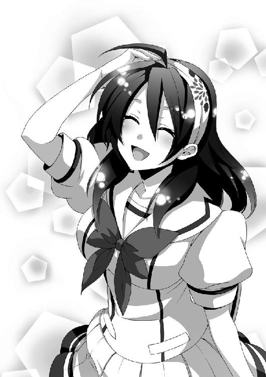
「......どうせ、スタイルじゃ神楽井先輩には敵いませんよーだ......」
「え。なんで神楽井先輩が出てくるの？」
「うるさい！ 籠島くんの馬鹿ぁ！」
頬を朱に染めて怒鳴り、一人でさっさと階段を登って行ってしまう。戦闘訓練を受けている超能力者のように軽快なステップだった。
「どうしたんだろう、織野さん......？」
一人で階段を登り始める。
まだ、話の途中だったんだけどな。「後から出てきたお姉さんの方が美人でスタイルがよかったんだけど、でも、僕は最初からいたお姉さんの方が好みで、本気で好きだった」って言うはずだったのに。
十年も昔のことだから、もう、顔もぼんやりとしか思い出せないんだけど。
「ん？ 顔」
そういえばあのお姉さん、織野さんと顔が似てたかもしれない。
「......ま、気のせいだよね」
さあ。
早くしないと勉強会に遅れる。少し急ごう。
日常を楽しまなくちゃ。
正義の味方なんて存在しない、退屈なこの世界。
もし仮に、世界の裏で頑張っている正義の味方がいるのならば、その人達が作り上げた平凡な退屈を存分に満喫させてもらうとしよう。
それがきっと。
正義の味方が望んでいることなんだから。
あとがき
いや、気づけよ！
本作は、こんな気持ちから生まれました。
戦っている主人公達の正体に気づかないサブキャラというのは、あちらこちらで見かけます。みんな、主人公達にいいように誤魔化されてしまうのです。
たまに、いやお前いくらなんでもそれは無理があるだろ、という誤魔化し方もありますけど、それでもサブキャラは気づきません。お約束、というやつです。
そこで僕は思いました。
「その気づかないサブキャラを主人公にしたらどうなるんだろう......？」
まあ、こうなりました。
そんなこんなではじめまして、望公太です。
本作が僕のデビュー作となります。
小中高と一冊も小説を読まず、夏休みの読書感想文は全て母に書いてもらっていたこの僕がまさか作家になるなんて......。人生はなにがあるかわかりませんね。
では、以下謝辞を。
学生気分の抜けていない（てか、まだ学生なんだけど）僕に付き合い、作品に多大なアドバイスをくれた担当様。本作に超美麗なイラストを描いてくださったタカツキイチ様。第五回ノベルジャパン大賞に携わった全ての方。本当にありがとうございました。この本を無事、世の中に送り出すことができたのは皆様のおかげです。
そして、ボーイミーツガールしてるんだかしてないんだかよくわからない本作を手に取ってくださった読者の皆様にも最大級の感謝を。
あ、ちなみに、ＧＡ文庫からも９月に本が出る予定です。
第三回ＧＡ文庫大賞にて、優秀賞を受賞させていただいた作品です。よかったら読んでやってください。『僕はやっぱり気づかない』とはがらりと作風が変わっているで「これ本当に同じ人が書いたの？」と皆様に驚いてもらえたら嬉しいです。
それでは、縁があったらまた会いましょう。
望公太
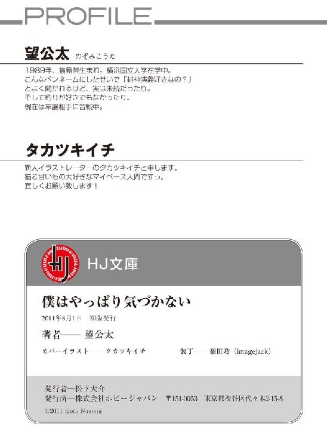